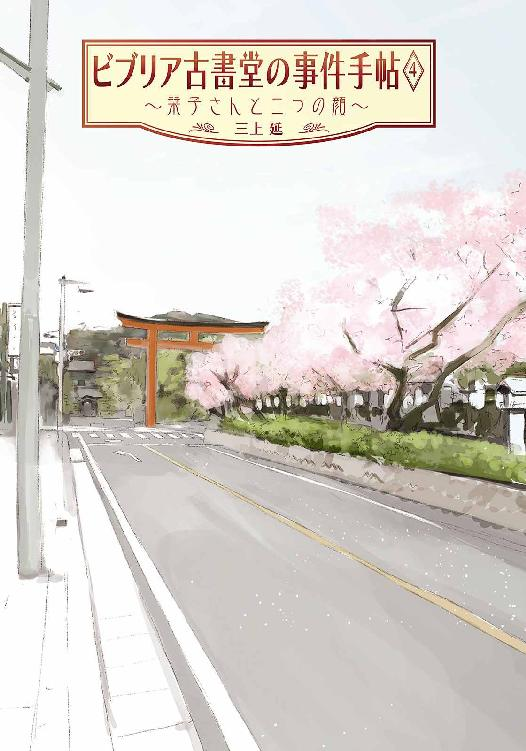
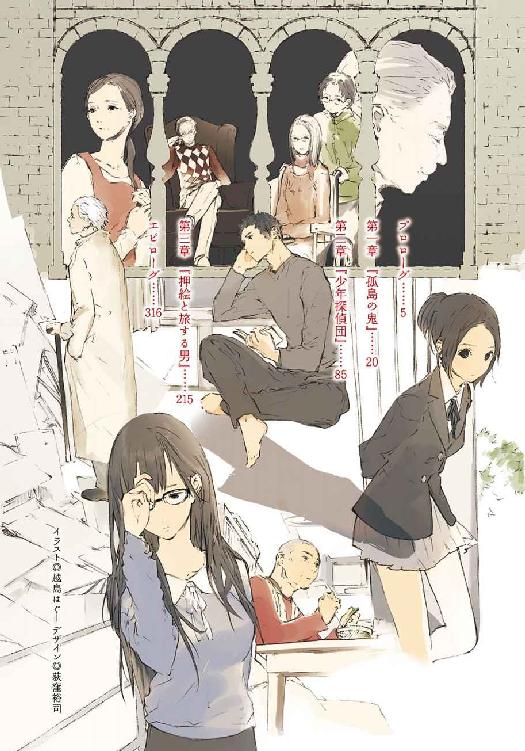
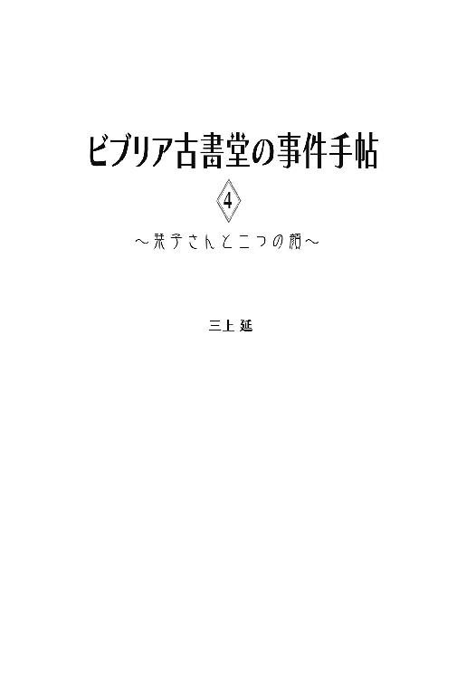
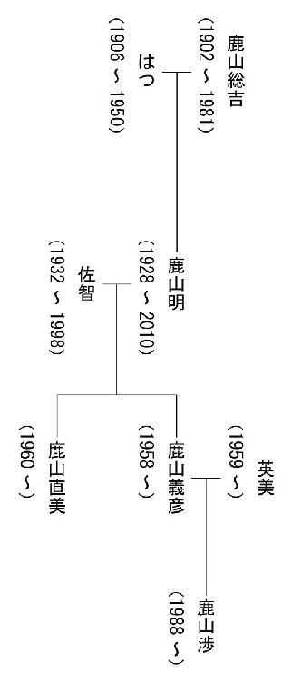
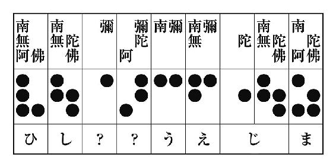
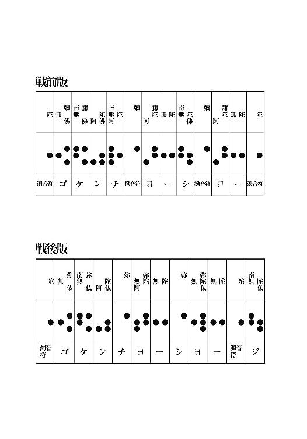

| ビブリア古書堂の事件手帖4 ～栞子さんと二つの顔～ (メディアワークス文庫) | |
| 三上 延 | |
| (2013) | |



本書（電子版）に掲載されているコンテンツ（ソフトウェア／プログラム／データ／情報を含む）の著作権およびその他の権利は、すべて株式会社アスキー・メディアワークスおよび正当な権利を有する第三者に帰属しています。
法律の定めがある場合または権利者の明示的な承諾がある場合を除き、これらのコンテンツを複製・転載、改変・編集、翻案・翻訳、放送・出版、公衆送信（送信可能化を含む）・再配信、販売・頒布、貸与等に使用することはできません。
プロローグ
閉店間際の夕方に余震が起こった。
レジの中の小銭をコインカウンターに移していた俺は、最初の横揺れで手を止めた。天井から下がっている蛍光灯が震え、古い建物が耳障りな音を立てている。店には他に誰もいなかった。
横揺れが長く続くものの、古書の収まっている棚は微動だにしない。先日、補強金具で床や壁に固定したおかげだろう。古書が床に落ちる気配もなかった。一応建物から出るべきか迷っているうちに、ゆっくりと揺れはおさまっていった。
カウンターの中にあるラジオをつける。ちょうど地震のニュースが読み上げられるところだった。震源地は茨城県。だいぶ距離があるせいか、神奈川県の震度はあまり大きくなかった。
携帯を出してメールを打ち始める。
俺、五浦大輔は北鎌倉にある古書店、ビブリア古書堂でアルバイトをしている。働き始めたのは二〇一〇年の夏だから、もう半年以上経つ。
今日は一人で店番だった。この店の主──篠川栞子は妹と一緒に、横浜ランドマークタワーの中にあるホテルに行き、従姉の結婚式に出席している。年は俺より二つ上の二十五歳だ。今朝、仕事の指示をしていった時には、珍しくフォーマルなベージュのワンピースに白いジャケットを合わせて、きちんと化粧もしていた。白い肌や整った顔立ちによく映えていて、つい目を奪われてしまった。
それでも太いフレームの地味な眼鏡はいつも通りだった。外すんですか、と尋ねたら、どうしてですか、と逆に聞き返された。結婚式だからそれなりの装いをしただけで、本人はあまり喜んでいなかったようだ。
ちょうど時間的に披露宴の真っ最中のはずだ。築五十年の古書店より危険ではないだろうが、ビルの高層階は揺れが激しいと聞いている。
メールを打っているのは彼女たちの安否を確かめるためだ。しかし、送信する前にこちらにメールが届いた。差出人は店主ではなく、妹の篠川文香からだった。
『うち壊れなかった？ こっちはけっこう揺れたけど平気。心配しなくていいよ！』
なにごともなかったらしい。胸をなで下ろしたところに、新しいメールが届いた。今度は栞子さんからだった。
『大丈夫でしたか？ こちらは大丈夫です』
別々にメールをくれなくともいいと思うが、震災の直前から篠川姉妹は互いに距離を置いている。多少仲がぎくしゃくしているのだ。
店は無事だったという簡単なメールをそれぞれに返す。ラジオからは地震のニュースが流れ続けていた。首都圏では一時停まった電車はすぐに運転を再開し、原発事故の処理を続けている作業員にも被害はなく、津波の発生する恐れもないという。
桜の開花予想にニュースの話題が移ったところでラジオを止めて、俺はレジの精算に戻った。そこへまた携帯にメールが届く。また栞子さんからだ。
『大輔さんのことです』
しばらく眺めてから、彼女が知りたがっていたのは俺の安否だと気付いた。もちろん無事です、とメールを打つ。春にしては底冷えのする一日だが、多少暖かくなった気がした。
東日本が大規模な震災に見舞われてから二十日あまり、四月に入った今も数日おきにこんな余震が起こっている。東北の被災地に比べればこのあたりの被害は小さいが、俺にとっては生まれて初めて体験する大地震だった。
地面が揺れ始めた瞬間、俺と栞子さんはいつも通りカウンターの中にいた。古書に入っていた書きこみを消しゴムで消していると、かたかたかたと小さな震動が起こり、まっすぐ立つのが難しいほどの横揺れが始まった。
その後のことは断片的にしか思い出せない。揺れがおさまって我に返ると、膝を床に、両手を壁に突いて全身をこわばらせていた。俺の体と壁の間にあるわずかな空間に、栞子さんが座りこんでいる。椅子から転げ落ちた彼女を俺が庇ったらしい。
「大丈夫でしたか？」
と、彼女は言った。白い頰にはいつも以上に血の気がない。
「え？ なんともないですよ」
そう言ってから、少し背中が痛むことに気付いた。カウンターの内側に積み上がっていた本が雪崩を起こしている。たぶん、何冊か角がぶつかったんだろう。
「栞子さんは」
「大丈夫です......でも、本が......」
こんな時でも本なのか。「本の虫」にもほどがある。呆れながら立ち上がり、店内を見回した俺は啞然とした。
通路に立っていた棚が斜めに倒れ、大量の古書が床一面にぶちまけられている。明かりもすべて消えて、停電しているらしく、いつも以上に通路が薄暗い。崩落しかけた洞窟の前にいる気分だった。もし誰かが通路にいたら、と思うと背筋が凍った。
今、ビブリア古書堂はきちんと片付いている。俺たちはまっすぐ立てた棚に散乱した古書を収め、三日後には営業を再開した。余震は以前より減ってきているし、電力不足を補うための計画停電もここ数日は実施されていない。
連日ニュースで流れている放射能の数値は気になるが、とにかく生活しなければならない。俺たちの住む地域では、少しずつ日常が戻りつつある。
幸いにして俺の家族や友人知人は無事だった。栞子さんも似たようなものだが、母親の安否だけははっきりしていない。名前は篠川智恵子──娘を超える「本の虫」らしい。もっとも行方が分からなくなったのは十年前だから、今さらの話ではないのだが。
震災の起こる数日前、一冊の古書が栞子さんに手渡された。場所は母屋の居間で、立ち会ったのは俺一人だった。
篠川智恵子が栞子さんに残していった、坂口三千代の『クラクラ日記』。一度は処分されたはずのその本を、回り回って妹の文香が保管していたのだ。本の見返しには「shinokawa@chieko-biblia.com」と、篠川智恵子のものらしいメールアドレスが書きこまれていた。
「一時退院した時、お父さんがこの本をあたしに預けたんだ」
と、文香が言った。
「お父さん言ってたよ......いつか栞子はこの本を処分したことを後悔するかもしれない、そうしたら返してやってくれって」
「......今までどうして返さなかったんだ？」
黙っている栞子さんの代わりに俺が口を開く。
「お姉ちゃんが欲しがってるなんて知らなかったし......下手にこの本を返したら、捨てられちゃうかもしれないと思って」
それもそうか、と思った。栞子さんがこの本を探していることを知っている人間はほとんどいない。俺ぐらいのものかもしれなかった。
「......文ちゃん、メールしてたでしょう。このアドレスに」
栞子さんが静かに言った。痛いところを突かれたように文香は顔をしかめて、部屋から飛び出していった。どうしたのかと思っていると、ややあってノートパソコンを抱えて戻ってきた。
「え......」
画面を覗きこんだ俺は絶句した。立ち上がったメールソフトのウィンドウに、送信済みのメールがずらりと表示されている。ほとんど一日に一度の間隔で送り続けていたらしい。
「去年からかな......その日のできごととか、とにかく書いてお母さんに送ってたの」
だとすると、こちらの動向は筒抜けになっていただろう──いや、それよりも気になることがある。
「向こうから、返事は......？」
おそるおそる尋ねると、文香はあっさりかぶりを振る。
「来ない来ない。でも、少しはこっちのことも知りたいかもしれないと思って」
「お母さん、なんて呼ぶ必要ないわ」
栞子さんが低い声で言った。
「わたしたちを置いて、出て行った人でしょう」
「そうなんだけどさ......」
「母親の資格なんかない、あんな人に」
「そこまで言わなくても......お母さんはお母さんだよ」
「......お母さんじゃない」
「いや、お母さんだって。しょうがないじゃん！」
「しょうがなくなんかないわ！」
という風にお互い一歩も譲らず、しばらくは口も利かない有様だった。
震災が起こってうやむやになったが、今もわだかまりが残っているらしい。母親の話題は姉妹の間でタブーになっていた。
とにかく、『クラクラ日記』は栞子さんの手にある。震災の直後、栞子さんは迷った末に「わたしたちは無事です」とだけ書いたメールを送ったが、それでも反応はなかったそうだ。
心配ですね、と俺が言うと、「連絡を取れないわけじゃないと思います。そういう人なんです」と苦笑していた。
口には出さなかったが、俺は薄気味悪いと思っていた。
篠川智恵子は一年近く次女からのメールをただ受け取り続けていた。大きな災害が起こっても、自分から娘たちの安否を確かめようともしない。普通の母親ならどこかで反応せずにはいられないと思う。どうすれば無視し続けられるのか、どういう神経の持ち主なのか、俺には想像もつかない。
まあ「普通の母親」でないことだけは確かだ。そもそも家族を捨てて家を出た理由もはっきり分かっていない。聞いた限りでは、頭は切れるが得体の知れない人物、ということだった。
西日に染まったホームがガラス戸越しに見えた。この店はＪＲ北鎌倉駅のすぐそばにある。もうすぐ電車が来るのだろう。濃い影が落ちた屋根の下に大勢の乗客たちが立っていた。
黙々とレジの現金を数えていると、電話の着信音が店内に鳴り響いた。
「毎度ありがとうございます。ビブリア古書堂でございます」
受話器を取ると同時に言った。やや間があってから、
『......もしもし』
耳慣れた女性の声が流れてくる。栞子さんだった。
「どうしたんですか？」
そう尋ねながら、さっきのメールのことを思い出す。心配してわざわざ電話までかけてくれたんだろうか。
「地震なら大丈夫でしたよ。今、披露宴じゃないんですか」
沈黙が流れた。屋外にいるらしく、ノイズ混じりの風鳴りが聞こえる。
『披露宴？』
「あれ、違いましたっけ。今日は従姉さんの......」
俺は口をつぐんだ。なにかおかしい。披露宴の行われているホテルは、横浜ランドマークタワーの高層階にあるはずだ。席を外して電話するにしても、どうしてわざわざ建物から出たんだろう。
『ランドマークタワーにはいないわね。別のところよ』
やけにきびきびした返事だった。いつもの彼女なら、本の話以外でこんな物言いをしない。そういえば、声も少し低いようだ。
突然、背筋が氷のように冷たくなった。今、俺が話しているのは本当に栞子さんなのか──いや、こんなに声の似ている人間がいるとは思えない。
よほど血のつながりが濃くない限りは。
「どちら様ですか？」
自分でも驚くほどかすれた声が出た。
『あなたが、五浦大輔くんね』
「質問に答えて下さい」
乾いた唇を湿らせてから、俺はゆっくりと言葉を継いだ。
「篠川、智恵子さんですか？」
ふ、と笑みを含んだ息づかいが聞こえる。やっぱり間違いない。自分で名を尋ねたのに、現実感がまるでない。
『他の親戚とは思わなかったの？』
「だ、だったら......最初に名乗るはずです」
『それは今考えた理由じゃないかしら。他の可能性を思いつかなかっただけで』
あっさり図星を突かれて、俺はうろたえた。すべてを見透かされているような気がする。
『でも、取り繕える度胸があるのはいいことよ』
評価されても嬉しくない。動揺を静めようと、背筋を伸ばして深呼吸をする。
『そうやって冷静さを取り戻そうとするのも大事。ところで、娘たちは母屋にもいないのね？』
「......ええ」
『残念だわ。二人とも元気かしら』
ちょっとした噂話のような口調に、急にむかむかと腹が立ってきた。母親のことを語る時に栞子さんが見せる暗い表情や、篠川文香が見せてくれた大量のメールが脳裏をよぎる。
「......連絡ぐらい、できたんじゃないですか？」
『なんの話かしら』
「十年間、どこでなにやってたんですか！」
叫んでから我に返った。これで電話を切られたら二度と連絡を取ってこないかもしれない。というか、家族でもなんでもない俺が怒鳴りつけてどうする。
「いや、その......今、どこにいるんですか」
『日本』
人を食った答えに呆れた。なんの説明にもなって──いや、そうでもない。ようやく頭が働き始めていた。
「今まで、海外にいたんですか」
『そう、先週戻ってきたの』
ということは、栞子さんがメールを送った後だ。今の時期日本を出ていく人間はいても、戻ってくる人間は珍しい。
「じゃあ、栞子さんたちに会いに......」
『いいえ、仕事』
即座に否定されて啞然とした。
「仕事？」
『もちろん、古書の取り引きよ。こういう時期でしょう』
どういう時期なのか俺には分からなかったが、はっきりしたことが一つある。
「海外で古書店をやってるんですね、今」
『まあ、そういうことになるかしら』
近況を自分から詳しく話す気はなさそうだが、訊かれれば答えを返してくる。俺は必死に次の質問を考えた。この会話がいつ終わるか分かったものではない。栞子さんたちのためにも、できるだけ情報を引き出そうと決心した。
「それで、日本のどこにいるんですか？ 今は」
不意に踏み切りの警報音が鳴り始める。返事を聞き洩らさないように、受話器を耳に強く押しつけた。
『あら、まだ分かってなかったの？』
なんだそれは。どういう意味だろう？ 電車の走行音が近づいてくる。いつもよりやけにうるさく感じられた。
「あっ」
俺は声を上げた。音は店の外からだけではなく、電話の向こうからも聞こえる。
つまり、篠川智恵子はこの音が聞こえる場所にいる。
顔を上げてガラス戸の向こうに目を凝らす。携帯電話を持った髪の長い女が、上りのホームに立っている。影のように黒いコートと同じ色のロングスカート──顔かたちは相応に年を取っているが、遠目にはぞっとするほど栞子さんに似ている。母親というよりは、不吉な分身のようだった。
『初めまして、五浦大輔くん』
篠川智恵子は淡い色のサングラス越しにこちらを見つめている。刺すような視線の鋭さに、俺は身動きを取れなくなった。
それがどれぐらい続いたのかはっきり分からない。滑りこんできた電車に遮られて、互いの姿が見えなくなる。思わずほっと息をつく。
電話の向こうから、電車のドアが開く音が聞こえてきた。
『また来るわね。娘たちによろしく』
ぷつりと通話が切れる。受話器を放り出して店の外に飛び出すと、上りの電車がゆっくりと駅から離れていくところだった。最後尾の車両が通りすぎる──篠川智恵子の姿はもうどこにもなかった。
夕闇に包まれた人気のないホームに、次々と照明が点っていく。
第一章 『孤島の鬼』
１
篠川智恵子が現れた次の日、俺は早朝からビブリア古書堂に行った。
正確な行き先は母屋の二階で、店主の栞子さんの指示通りに古書を縛って運び出している。仕事中とやっていることはあまり変わりないが、これは個人的な頼まれごとだ。
二階は二間続きの和室で、栞子さんはここで寝起きしている。並外れた「本の虫」にふさわしく、どちらを向いても大量の古書ばかりだ。
「......電話の着信履歴を見ましたか？」
敷居の向こう、隣の部屋から栞子さんが尋ねてきた。昨日耳にした母親の声とよく似ている。俺は作業をしながら、昨日の出来事を話し終えたところだった。
「あ、はい。非通知でした」
俺は畳に積まれた函入りのハードカバーの古書に紐をかけながら答えた。国書刊行会の『世界幻想文学大系』。色とりどりの背表紙が目を引く。
着信履歴がどうなっているかは真っ先に確かめた。非通知設定で電話してきたということは、娘たちの方から接触して欲しくないのだろう。自分の好きな時に「また来る」というわけだ。まったく身勝手な話だった。
「......古書に関係する仕事をしていることは、見当がついていたんです」
「そうなんですか？」
思わず振り返る。彼女は俺に背を向けて、畳に横座りしている。チェックのロングスカートからストッキングに包まれた足首が見えていた。寒さが残っているせいか、ニットのカーディガンを羽織っている。
「この仕事が大好きな人ですし......古書関係の仕事をしている知り合いとも、たまに連絡を取っているようですから」
一枚のクリスマスカードが頭に浮かんだ。去年の年末、ヒトリ書房という古書店の店主のもとに、篠川智恵子から届いたものだ。彼女を目の敵にしている店主は完全に無視したようだが、他の同業者ともっと友好的なやりとりをしていても不思議はない。
「なにしに来たんだと思いますか、こんな時期に」
仕事と言っていたが、とてもそれだけとは思えない。
「あの人が仕事と言うなら、そうなんでしょう」
栞子さんは淡々と答えた。
「大きな震災が起こると、マニアが蔵書を手放すことがあると言われています。実際、十六年前の阪神淡路大震災の後、まとまったコレクションが市場に出たそうです。今回の震災ではどうなるか分かりませんが、大口の買い取りを期待して戻ってきたのかもしれません」
それで「こういう時期」か。本当にそうだとしたら、やっぱりまともな人間とは思えない。震災を商売のチャンスとしか見ていないみたいだ。
「続けましょう......時間もありませんし」
栞子さんに促されて、俺は作業に戻った。縛り終えた『世界幻想文学大系』を抱えて廊下に出る。みしりと床板が軋んで、つい足下を確かめてしまった。錯覚だとは思うが、なんとなく二階が傾いている気がしてならない。
最近、俺たちはここの古書を一階に下ろす作業を続けている。もちろん原因は先月の震災だ。店だけではなく、二階に置かれた書架もいくつか倒れてしまい、一時は足を踏み入れることもできない有様だった。
本格的に整理を始めたのは店の営業を再開した後だったが、壁に大きなヒビが入っていたことが問題を大きくした。栞子さんが知り合いの建築士に診てもらうと、修理の他に耐震補強もやるべき、大量の古書を置くなら床などの補強もした方がいいと説得されて、工事を決めたそうだ。
そのためには栞子さんの持ち物を二階からどかさなければならない。この機会に蔵書も少し整理して、重複しているものを処分することになった。俺は毎朝開店前にここへ来て、彼女の指示する通りに古書を縛って移動させている。給料は貰っていないので、仕事ではなくただの手伝いだ。
俺は古書を抱えたまま階段を降り、倉庫代わりの一室に運びこんだ。二階に引き返そうとした時、五浦さん、と呼びかけられた。
よれたジャージの上に白いパーカーを着た小柄な少女が廊下に立っている。どこからどう見ても部屋着だ。後ろで結んだ髪はこの半年でかなり伸びている。
「文香ちゃん、おはよう」
と、挨拶をする。今日顔を合わせるのは初めてだった。
「あー、ごめんね。五浦さん」
「え、なにが？」
「なにがって毎日手伝ってもらってるでしょ？ あたしだと本のこと全然分かんないし。本、片付いてきた？」
こういう会話からも、姉妹が完全に仲直りしていないことが分かる。普段だったら階段を上がって直接自分の目で確かめるだろう。
「いや......あと半分ぐらい」
篠川文香は首をかしげる。
「なんか時間かかってない？」
「まあ......量が多いから」
そう言い残して二階に戻っていく。蔵書の整理は栞子さんと俺がやることになっているのだが、確かに作業はあまり進んでいなかった。
二階に戻ると、栞子さんはさっきと同じ姿勢で座っている。俺は改めて二間続きの和室を見回した。ベッドとクローゼットと机がひとつあるだけで、他の家具は全部本棚だった。散乱していた古書はだいたい運び出され、畳や壁が隅々まで見えるようになった。
今まで隠れていた襖の奧には押し入れがあり、その中にも当然のように古書が詰まっていた。今はその整理にとりかかっている。どれを処分してどれを取っておくのか、そろそろ仕分けが終わるはず──。
「すーすーすー、すすー、すー」
息づかいともささやき声ともつかないなにかが聞こえてくる。たぶん口笛のつもりだ。夢中になった時の栞子さんの癖だった。またか、と俺はため息をつく。伸び上がって肩越しに覗きこむと、案の定膝の上に本を開いて読みふけっている。
「なんですか、その本」
彼女はぱっと振り返ると、胸の前に本を掲げて左右に振った。桜色の唇には笑みが浮かび、眼鏡の奥で黒目がちの瞳が輝いている。うっすら上気した肌にどきりとした。
「小林信彦の『冬の神話』の初版本です！ 見当たらなくてずっと探してたんです」
「え......」
どういう内容なんですか、といつもなら尋ねるところだ。俺は本の話を聞くのが好きだし、彼女の方も話し出すと止まらない。
「一九六六年に刊行された長編小説で、自らの体験をもとに太平洋戦争中の学童集団疎開を描いた傑作です。陰険な暴力に支配されていく生徒たちの中で、級長を務める主人公が次第に孤立し、追い詰められ......あ」
そこで我に返ったらしい。話に引きこまれそうになっていた俺も同じようなものだった。彼女は体を小さくしてぎゅっと目を閉じる。
「やっと見つかった、と思ったらつい......あの、これ、取っておく方に入れておいて下さい......」
両手に持ったまま俺に差し出す。気のせいか、まだ名残惜しそうだった。
本の片付けがなかなか終わらないのは、こんな風に彼女が読みふけってしまうからだ。普段、他人の蔵書を大量に買い取って短時間で片付けているのに、自分の蔵書になるとうまくいかないらしい。
「すみません。ご迷惑かけて......」
「別にいいっすよ。ゆっくりやりましょう」
俺は『冬の神話』を受け取って、戦後の文芸書の山の上に置いた。本当に謝ってもらう必要はなかった。こうして一緒になにかしているだけでも嬉しい。店で働いている時とは違って、客が来ることもない。本当に二人きりだ。
この程度で喜んでどうする、という気もするが。
栞子さんは手を止めたまま、俺を見上げている。いちいち動きを目で追ってくるので落ち着かない。
「どうかしました？」
「大輔さん」
そう呼びかけてから、なぜか自分の膝に視線を落とし、もじもじと両手の指先を合わせる。無言の時間がしばし続いた。母屋の玄関でチャイムの鳴る音がする。誰か訪ねてきたらしい。
「......大輔さんには、色々お世話になってますし......あの、今度......」
俺はぽかんと口を開けていた。錯覚かもしれないが、なんだかデートの誘いみたいに聞こえる。この人に限ってそんなことはないと思うが──でも、だったら一体なんだろう。
「今度の......」
だん、だん、だん、と騒々しい足音が駆け上がってきた。栞子さんは口をつぐみ、怪訝そうに廊下の方を見る。いいところに、と舌打ちしそうになった。
「お姉ちゃん！」
現れたのは篠川文香だった。珍しく慌てている様子だ。
「今、玄関にお母さん......」
彼女はそこで息をつく。俺たちは凍りついた。まさか昨日の今日でこの家に現れたのか──しかし、次の言葉は予想もしていないものだった。
「お母さんに用事があるって人が来てる......いないんだったら、古書に詳しい人を呼んで欲しいって」
２
一階に降りた俺は店の掃除を始めた。
栞子さんは母屋の居間で来客と話している。二階ですることがなくなったので、開店準備をすることにしたのだ。
わざわざ篠川智恵子を指名したということは、普通の古書店業務ではなさそうだ。先月も宮沢賢治の『春と修羅』の初版本を取り戻して欲しいという依頼が持ちこまれたが、それと似たような──あるいはもっとやっかいな用件かもしれない。
（昨日のこととなにか関係があるのか？）
棚の埃を取りながら考えをめぐらせていると、玄関のドアが閉まるかすかな音が母屋から聞こえてきた。きっと客が帰ったのだろう。少し早い時間だったが、ガラス戸のカーテンを開ける。母屋の玄関から駅へ向かうなら、店の前を通るはずだ。
しばらく待っていると、いかにも安物のフリースのジャケットを着て、レース編みのハンドバッグを提げた小太りの中年女性が視界に入った。年齢はたぶん五十過ぎ、俺の知らない顔だ。こちらをちらりと見ただけで足早に去っていく。
俺は首をかしげた。古書に興味があれば、もう少し店内を覗きこんでいきそうなものだ。古書マニアではないんだろうか。
母屋に通じるドアが開いて、杖を突いた栞子さんが現れた。困惑したように眉を寄せている。
「なんの用事でした？」
俺の質問に、そのままの表情で首をかしげる。
「......珍しい古書に関係する、特別な相談があるそうです。詳しいことは直接会った時に話すけれど、とにかく古書に詳しい人に来てもらいたい、というお話で」
「え、直接会った時って......さっきの人は？」
「代理の方です。わたしたちに用がおありなのは、今日いらした方のお姉さんだそうです」
カウンターの引き出しを開け、中を探りながら答えた。なるほど。ただ話を伝えに来ただけだったのか。
「なんで本人が来なかったんですか」
「先月の地震で本棚が倒れてしまって、怪我をされたというお話でした」
ちょっとうさんくさいと思った。家から動けないにしても、電話などで連絡することはできそうなものだ。どうしてわざわざ代理を寄こしたんだろう。
「なんていう人なんですか。依頼人は」
「......キシロケイコさん、とおっしゃる方です」
ちょっと記憶を探ったが、聞いたことのない名前だった。
「うちのお客さんですか？」
「わたしも存じ上げなかったんですけど、そうみたいです......雪ノ下にお住まいで、以前はうちからよく買って下さっていたとお聞きしました。目録の通販で」
俺ははっとした。かつてこの店の通販業務を仕切っていたのは篠川智恵子だ。
ネット販売が普及する以前、店が送った目録を見て電話やハガキで注文するというかたちで、古書の通販は行われていたそうだ。まあ、カタログ販売のようなものだろう。もちろん今でも目録での販売を行う店は多いらしいが、ここ数年ビブリア古書堂ではやっていない。
「じゃ、この店にもよく来てたんですね」
雪ノ下は鎌倉の地名で、鶴岡八幡宮を含む一帯だ。この店からそう遠くない。
「どうなんでしょう......買うのはもっぱら目録で、というお客さんもいらっしゃいますから......あ、ありました」
彼女は引き出しの奥から黒革の分厚いノートを取り出す。
「なんですか、それ」
カウンターの反対側から覗きこむと、帳簿のようにしっかりしたつくりだ。かなり古いものらしく、四隅がすっかり剝げてしまっている。
「昔、この店で使っていた顧客名簿です。今はお客さんのデータをパソコンに保存していますが、以前はすべてこれに書きこんでいたんです」
そう言いながら名簿をめくっていく。思ったよりも小さな字で住所氏名が記されている。五十音別にページが設けられているが、書き足しを想定していたせいか空白も目立つ。横線で消してある名前も多い──引っ越した先が分からなくなったのか、あるいは亡くなったのだろう。
「き」で始まる名前のページが開かれ、細い指が順番に名前をなぞっていく。しかし「キシロケイコ」と読める名前はどこにもなかった。
「おかしいですね」
彼女は少し前のページに戻って、もう一度名前を確かめていく。
「......結婚して姓が変わったとか」
「いいえ......たぶん独身の方だと思います。妹さんのお話では、成人してからずっと一人暮らしだったそうですから。先月怪我をされてからは、妹さんが同居して世話を......あっ」
「どうしました？」
「ここ、見て下さい」
彼女は一つ前のページ、「か」で始まる名前の一つを指差す。「鹿山明」──住所は鎌倉市雪ノ下六丁目。番地の続きには「来城慶子様方」と記されていた。
「たぶん、この方ですね」
「この鹿山さんって人は？」
「わたしも初めて見るお名前です。名簿が正しければ、来城さんのお宅に住んでいらした、ということだと思います」
「でも、ずっと一人暮らしだったんですよね」
「妹さんがご存じなかっただけかもしれませんが......」
それでもおかしいことに変わりはない。目録でよく買っていたという客の氏名が、顧客名簿にきちんと載っていないのはなぜだろう。
「これ、母の字ですね。この住所と名前を書いたのは、母です」
沈黙が流れる。
やっぱり妙な話だった。依頼の内容もはっきりしないし、鹿山という人物の存在も謎だ──篠川智恵子の存在も見え隠れしている。
「お母さんが来たことと、関係あると思いますか？ この依頼」
と、俺は尋ねる。
「まだなんとも言えないですね。タイミングがよすぎる気はしますけれど、古書に関することには鼻の利く人ですから......ただの偶然かもしれません」
「この人に、会いに行くんですか」
「行きます」
意外にきっぱりと彼女は答えた。
「もし母がなにかしようとしているなら、それこそ放っておけません......明日の午後、伺うとお伝えしました」
確かにその方がいいと思う。なにしろ古書の取り引きで、脅迫まがいの行為をしていた人物だ。昨日会っただけの俺にも、栞子さんの不安は理解できた。
「それで、あの......もし大輔さんの都合がよければ、でいいんですけど......」
目を伏せて口ごもっている。なにを言いたがっているのかぴんと来た。
「あ、一緒に行きますよ。もちろん。車出しますから」
「えっ、本当ですか？」
「最初からそのつもりです。明日は定休日だし、予定もないし」
彼女はぱちりと瞬きをして、訴えかけるようにじっと俺を見つめる。
「ありがとうございます。今度、ちゃんとお礼しますね......約束します」
打ち明け話のような抑えた声音に、俺の喉がごくりと上下した。さっき二階でも同じようなことを言っていたが、この人は一体どうしたんだろう。口に出すのに思いきりのいる話なんだろうか。ひょっとして、期待していいのか。
「は、はい......」
声が裏返りそうになって、思わず咳払いする。どんなお礼ですか、とも訊きにくかった。とにかく「色々落ち着いた」後のことだ。
「それにしても『特別な相談』ってなんですかね......その妹さんっていう人、なにも話さなかったんですか」
「具体的なことは、特に......ただ、どの作家の古書に関する依頼か、それだけはお聞きしました」
「誰だったんですか」
ふっと栞子さんは遠い目をした。たぶん思い入れのある作家の一人なのだろう。
「乱歩だそうです」
「乱歩......」
思わず口の中で繰り返した。俺でも名前を聞いたことがある。
「ええ」
彼女はうなずいた。
「江戸川乱歩です」
３
次の日はよく晴れて、急に暖かくなった。
円覚寺の手前、北鎌倉駅の臨時改札口のそばにある桜も、いつのまにか五分咲きになっている。駅から出てくる観光客が途切れた瞬間を見計らって、俺と栞子さんの乗ったライトバンは赤い蕾の入り交じった花の下を通りすぎた。これから来城慶子の家に向かうことになっている。
「大輔さんは、江戸川乱歩をご存じですよね」
助手席に座っている彼女が、思い出したように言った。
「読んではいないですけど......名前ぐらいは」
苦々しい気分で答える。子供の頃のトラウマめいた出来事が原因だと思うが、俺には妙な「体質」があり、長時間活字を読むことができない。それでも本についての興味を人並み以上に持っている。この人と親しくなったのは、彼女の本の話をいつまでも聞き続けられるからだ。
江戸川乱歩についても昨日のうちに聞きたかったのだが、大量の本を抱えた買い取り客が立て続けに現れて、ゆっくり話をする機会を逃してしまった。
「『少年探偵団』のシリーズを書いた作家ですよね」
小学生の頃に図書委員をやっていたので、貸し出しや返却の作業でしょっちゅう手に取っていた。どの表紙にも異様な怪人と子供の顔が描かれ、背表紙には気色悪い笑顔の仮面のマークが印刷されていた。書架にずらりと並んでいると、遠くからでも一目で分かった。
「怪人二十面相......が出てくるんでしたっけ」
「そうです」
栞子さんはうなずいた。
「暴力を好まない怪人二十面相が、得意の変装を駆使して高価な美術品を盗み出そうとして、少年探偵団と名探偵明智小五郎がそれに立ち向かう......というのが物語のパターンです。モーリス・ルブランのアルセーヌ・ルパンものの少年版、というのが乱歩の狙いだったそうです」
「沢山ありますよね、あのシリーズ」
書架が一列埋まるぐらいはあったと思う。怪人二十面相だけではなく、透明人間や宇宙人が出てきそうなタイトルもあった気がする。全部読んでいたクラスメイトに尋ねたら、どれも同じような話だと言っていたが。
「ええ、中断された時代もありましたが、昭和十一年に第一作の『怪人二十面相』の連載が始まってから、二十五年も書き続けられていたんです。乱歩が後半生に発表した小説の多くはこのシリーズで......」
「ん？ ちょっと待って下さい。いつ始まったって言いました？」
思わず口を挟んでしまった。俺たちの乗ったライトバンは鎌倉の中心に通じる坂道を上りきり、ゆるやかな下りに入ったところだった。
「昭和十一年です。二・二六事件の起こった年ですね」
「え、本当ですか？」
昔の作品だということは分かっているつもりだったが、そこまでとは思っていなかった。リアルタイムで読んでいた世代は、俺たちの祖父母より年上かもしれない。
「ええ。第一作が単行本化されたのは七十五年前になります」
「......そんなに古いとは思ってないですよね、読者も」
「かもしれませんね。時代に合わせて装丁や書名を変えたり、本文を一部手直ししたり、読者の違和感を和らげる努力をしているせいもあるでしょうけど......やっぱり、時代を越えた普遍的な魅力を持っているからだと思います」
確かに小学校の図書室で、読んでいる男子生徒はそれなりにいたと思う。少年だけの探偵団、という設定には惹きつけられるものがある。「体質」がなければ、俺も手に取っていたはずだ。
「......明智小五郎ってこのシリーズ以外にも出てませんでした？」
運転しながら尋ねる。昔から有名な日本の名探偵といえば、明智小五郎と金田一耕助、だと思う。ドラマかなにかで見かけただけだが、黒い服を着た美女と対決したり、どこかの天井裏に上がったりしていた気がする。
「もちろんです。明智小五郎の初登場は、『怪人二十面相』よりもずっと前......大正十四年に発表された『Ｄ坂の殺人事件』です」
「あ、どっかで聞いたことあります」
アルファベットが入っているのでなんとなく印象に残っていた。どういう話かは全然知らないし、江戸川乱歩の小説だということすら初耳だったが。
「っていうか、江戸川乱歩っていつの時代の人なんですか」
「明治二十七年......一八九四年生まれですね。没年は昭和四十年。デビューは大正十二年、満二十八歳の時です」
栞子さんは打てば響くように答える。こういう年代が全部頭に入っているのも、この人の凄いところだ。頭の中はどうなってるんだろう。
「大正時代末期、日本の推理小説は......当時は探偵小説と呼ばれていましたが、まだあまり認知されていないジャンルでした。乱歩以前には専業の探偵作家すら皆無に近かったんです。デビュー当時はいわゆる『本格派』の作家で、論理的な謎解きに重きを置く短編を次々と発表していました。
時代によって執筆する作品の内容は異なりますが、探偵小説、推理小説の世界では重要な存在であり続けた作家です。乱歩と乱歩にゆかりのある人々の足跡が、日本におけるこのジャンルの歴史と言っても過言ではないと思います」
そこで彼女は一息ついた。ライトバンは鶴岡八幡宮前の交差点にさしかかっている。ちょうど横断歩道の手前で信号が変わってしまい、海外から来たらしい観光客がライトバンの前を通りすぎて、三の鳥居をくぐっていった。
右手に延びる若宮大路の中央には、段葛と呼ばれる石積みの参道がある。歩道に沿って植えられた桜並木は満開の少し手前だが、十分に目を惹きつける光景だった。
「......きれい」
助手席から身を乗り出すようにして、栞子さんがつぶやいた。
「どこか、行きたくなりますね」
「そうですね。こんなにいいお天気ですし」
意外にいい反応だった。ふと、昨日の「お礼」の話を思い出す。今の状況なら、用事が済んだらどこかに寄りませんか、と誘ってみるのもアリかもしれない。いや、この人の場合はどういう反応がかえってくるのかまったく分からないが。
「あ、大輔さん」
フロントガラスの向こうを指差す。いつのまにか信号が青に変わっていた。俺は仕方なくアクセルを踏む。
「......それで、話は戻りますけど」
なにごともなかったかのように彼女は言った。
「わたしたちにもちょっと縁があるんですよ、乱歩は」
「......どういうことですか？」
俺は尋ねる。こっちも本の話になるとつい引きこまれてしまう。
「デビュー前、乱歩は古書店を経営していたんです」
「え、そうだったんですか？」
突然、明治生まれの作家に親近感が湧いた。俺と同じように古書の束を運びまくっていたんだろうか。
「乱歩は作家になる前、転職を繰り返していました。ほんの短い間でしたが、東京千駄木の団子坂で古書店を経営していたんです......『Ｄ坂の殺人事件』にはその時の経験が反映されていますね。古書店で密室殺人事件が起こるという話ですから」
Ｄ坂というのは団子坂のことか。古書店でどんな密室殺人事件が起こるのか気になるが、残念ながらもう目的地に着いていた。
「ここみたいです」
俺はそう言って竹垣のそばにライトバンを停める。教えられた住所ではこの家のはずだ。敷地にはうっそうと笹藪が茂り、葉と葉の間から瓦屋根が見えている。ここは県道から外れた住宅地の一角だ。八幡宮からそう離れてはいないはずだが、うって変わって人通りが少ない。
車から降りて竹垣沿いに歩くと、屋根つきの立派な門が現れた。錆の浮いた赤い郵便受けには「来城」と書かれた白いシールが貼り付けてある。栞子さんは杖を使って慎重に敷居をまたいだ。庭は広そうだが、笹藪のせいで見通しが悪い。
「......立派なお宅ですね」
栞子さんが感心したように言う。立派は立派だがかなり古い平屋で、壁の塗装がすっかり剝げている。縦長の窓には鎧戸が付けられ、庭に面したバルコニーもあるようだ。大正とか昭和の初めに建てられた「洋風」の別荘、という印象だ。
不思議と人の住んでいる感じがしない。まるで息をひそめて気配を消しているような──俺が子供だったら、幽霊屋敷だと思ったかもしれない。
玄関のブザーを鳴らすと足音が聞こえ、ドアが勢いよく開いた。昨日と同じフリースのジャケットを着た中年の女性が顔を覗かせる。つやつやした丸顔に老眼用らしい眼鏡をかけていた。
「わざわざありがとうね。いらっしゃい」
愛想良く笑いかけてくる。関東の出身ではないらしく、耳慣れないアクセントが少し混じっていた。
「い、いえ、こちらこそ......お話を、伺いに参りました」
しどろもどろになりながら頭を下げる。こういう人見知りな栞子さんを目にするのは久しぶりだ。最近、店での接客を主に俺がやっているので、彼女が初対面の客と話すことが減っている。ちょっと新鮮な光景だった。
女性が俺に目を留める。図体が大きいので目立つのは仕方がない。すると、栞子さんが口を開いた。
「彼は、うちの従業員で、大輔さ......いえ、ごっ、五浦......」
従業員を客に紹介する時に大輔さんはないだろう。慌てて言い直そうとして、かえって嚙んでいる。相手は怪訝そうな顔をしていた。
「五浦です。初めまして」
仕方なく後を引き取って、俺もお辞儀をした。
考えてみると、俺と二人だけで話している時は、本の話題でなくてもほとんど口ごもらなくなっている。毎日顔を合わせていると、そういう変化にかえって気付きにくいのかもしれない。
どうぞ、と促されて廊下に上がる。ささくれだった床板が少し沈みこんだ。この建物の古さなら、先月の地震でもかなり揺れただろう。本棚が倒れたという話もうなずける。
「そ、それで、来城慶子さんは......」
「あっちにいるんだけど、まずは......あ、篠川栞子さんでよかったっけ」
「は、はい......」
「篠川さんにこの家にある本を見てもらって、それから話したいって慶子ちゃん言ってるの。こっちに来てくれる」
来城慶子の妹はこちらの返事も聞かずに歩き出した。慶子ちゃん、という呼び方が耳に残った。仲のいい姉妹のようだった。
開いた襖越しに見ると、どの部屋にもあまり家具が置かれておらず、隅々まできちんと片付いている。家主の個性が窺えるものはあまり見当たらなかった。
「そういえば名前言ってなかったわね......わたし田辺邦代っていうの」
突然、思い出したように女性が言った。栞子さんも聞いていなかったらしく、よろしくお願いします、と戸惑い気味に頭を下げている。
「慶子ちゃんの二つ下。わたしは結婚したから姓が違ってるけど......ずーっと昔に旦那は病気で死んじゃって、息子が東京の大学に通ってるの。今は一人暮らしだし、仕事も今はできないから、慶子ちゃんの怪我が治るまでこっちで過ごそうと思って」
「た、田辺さん......のお住まいは、どちらなんですか？」
「邦代でいいわよ。わたしはね、宮城県」
急に空気が重くなった気がした。震災で大きな被害のあった県の一つだ。振り返った田辺邦代は笑顔を浮かべていた。
「ああ、わたしの住んでる町はあんまりひどくなかったの。海からも遠いとこだったから。うちも家具が倒れたぐらいで、あとはなんともなくて......こっちの方だって大変だったでしょう。本屋さんなんか重たいものばっかりなんだから」
話題を変えたことが俺にも分かった。気を遣わせまいとしてくれたのか──それとも、詳しく話したくないようなことがあったのかもしれない。
「うちは、そんなに......その、いくつか、本棚が倒れましたけど」
「じゃ、慶子ちゃんとおんなじだ。その足、地震で悪くしたの？」
栞子さんの背中がこわばるのが分かった。
「いえ、この足は......もっと前です」
去年、太宰治の貴重な初版本をめぐって、田中敏雄という古書マニアに負わされた怪我だった。目に見えて回復してきているが、杖を手放せない生活は続いている。
「この先の離れに置いてあるの」
田辺邦代は突き当たりのドアの前で立ち止まり、鍵を取り出して鍵穴に差しこんだ。家の中で鍵をかけているということは、よほど貴重な蔵書なのかもしれない。
ドアが開いたとたん、埃の混じった冷ややかな空気が、古い紙の匂いと一緒に流れ出してきた。
「どうぞ」
声をかけられて、栞子さんは足を踏み入れた。俺もそれに続く。そこは広い洋室で、四方の壁のほとんどが本棚になっている。書斎としても使われていたのか、中央に大きな机と椅子がでんと置かれていた。
入り口の反対側の壁には、鉄格子の嵌まった小さな窓が一つある。鍵のかかったドアといい、やけに厳重に守られている部屋だ。
「好きに見ててね。わたし、慶子ちゃん連れてくるから」
田辺邦代がドアを閉めて立ち去る。俺は並んでいる本をぐるりと見回した。
ハードカバーの単行本だけではなく、新書サイズの小型本や雑誌のバックナンバーもかなり多い。『新青年』『宝石』『講談俱楽部』『キング』──どれも古いものばかりだ。「殺人」「事件」「死」のつく書名が多いところを見ると、推理もののコレクションのようだ。
ただ、雑誌は年代順には並んでいないし、書架のあちこちに妙な隙間がある。全体的に雑然としていて、とりあえず棚に収めている感じだ。
「江戸川乱歩の本が多いですね」
栞子さんに話しかける。背表紙に「江戸川乱歩」や「江戸川亂歩」の名前の入った古書が、部屋中の書架に散らばっている。俺の知っている書名はほとんど見当たらなかったが。
「......たぶん、全部揃っています」
彼女は興奮を押し殺した声でつぶやいた。
「え？」
「わたしの知る限りで、乱歩が生前に出版した大人向けの著書は全部揃っているようです......作品が掲載されていた雑誌のバックナンバーも含めて」
４
「すごいコレクション、っていうことですか」
「ええ。ここまで網羅された乱歩コレクションを見るのは初めてです」
栞子さんは目を輝かせている。まるでおもちゃ屋に連れてこられた子供だ。
「あっ、大輔さん、あれ見て下さい！」
珍しく声を張り上げて、窓の下に置かれた飾り棚を指差す。ガラス扉の奧に収まっている色紙が特に目を引いた。
「うつし世はゆめ よるの夢こそまこと 亂歩」
黒々とした毛筆が躍っている。うつし世、というのは「現世」か。ちょっと尾を引くような、印象的な言葉だった。
「あの色紙、乱歩の直筆ですか？」
「たぶんそうですけど......あの座右の銘が書かれた乱歩の色紙は、わりと市場に出てきます。わたしが言っているのはその隣です！」
彼女は杖を突いて飾り棚の前に移動し、背をかがめて色紙の隣にあるものを覗きこんだ。不気味な笑みを浮かべた仮面が置かれている。明らかに安っぽい材質で、金色だったらしい塗装はすっかり色あせていた。
（......ん？）
このデザインには見覚えがある──少し考えてから、小学校の図書室にあった『少年探偵団』シリーズの背表紙にそっくりだと気付いた。
「なんですか、これ」
「......黄金仮面です」
「黄金仮面？」
「乱歩の長編小説『黄金仮面』に登場する怪盗です。名前の通り金色の仮面をかぶって現れ、高価な美術品を奪っていく......怪人二十面相と同じ系統のキャラクターですね。昭和五年から翌年にかけて連載され、当時大きな話題になったそうです」
「え？ それって小説の話ですよね。この仮面はなんなんですか？」
まさか本当にそういう怪盗がいたわけでもないだろう。栞子さんはこちらを振り返りもせずに答えた。
「販促物です」
「販促物？」
「昭和六年、平凡社から『江戸川乱歩全集』の刊行が始まった時、宣伝の一環としてセルロイドの黄金仮面がデパートの屋上から撒かれたんです。たぶん、これがその仮面ですね。現存していないとすら言われていて......わたしも見るのは初めてです」
淀みなく説明を続けながら、眼鏡ごと額をガラス戸に押しつけている。本当に珍しいものらしい──が、俺は別のことが気になっていた。
「なんか、すごい宣伝ですね」
要するにキャラクターグッズを使った販促ということだ。今の時代でも通用しそうなやり方の気がする。
「そうですね。しかも、最初は飛行機から撒く予定だったんですよ。乱歩自身がこのアイディアを出したそうです」
「え、作者が？」
ようやく栞子さんは俺の方を向いてうなずいた。揺れる前髪の下に、ほんのり赤くなったおでこが見えている。ちょっと押しつけすぎだ。
「......本格派の推理作家、だったんですよね」
それにしては派手なことをやっている。それに、黄金仮面だの二十面相だの、あまり推理ものらしくないキャラクターのような。
「確かにデビュー当時の乱歩は、本格派と呼ばれるにふさわしい活動をしていました。でも、雑誌連載で長編を書くようになった頃から作風が変わり始め、別の要素が強く現れてくるようになります。それらを乱歩の作家的な特性と見て、高く評価する人もいます」
「別の要素って？」
「そうですね......あ、こんなものまで」
飾り棚の隣に置かれている書架から薄い平綴じの本を取り出す。妙な模様の印刷された表紙に『鑑圖罪犯』という横書きの書名がある。
彼女は杖を突いて椅子に移動すると、すとんと腰を下ろした。
「その本は？」
「平凡社『江戸川乱歩全集』の付録の一つで、『犯罪圖鑑』といいます」
自分の無知が恥ずかしくなった。昔の本の場合、横書きは右から読むのを思い出した。犯罪図鑑、と頭の中で変換する。
ぱらぱらめくられていくページを、俺も反対側から覗きこむ。色々な種類の血痕だとか、絞首刑の瞬間だとか、果てはバラバラ死体まで、気色悪い写真や絵画ばかり集めた冊子のようだ。犯罪にあまり関係ないものが多い。
興味津々でページを行ったり来たりしていた栞子さんの手が止まる。裸で縛られている女の写真に「サヂスト、マゾヒスト御兩人の快感の爲めの嬉しい責め！」という説明文がついていた。写真も文章も古すぎてあまり生々しくないが、要するにＳＭプレイだろう。
彼女は大きく目を見開いてページに顔を近づけている。
「これは晴雨......？ 違うかしら......」
ぶつぶつつぶやくうちに、俺もそばにいることを思い出したらしい。慌てふためいて本を閉じる。かえってこっちが気恥ずかしくなる反応だった。
「......この時代って、こんな本出して大丈夫だったんですか」
雰囲気を変えようと尋ねる。裏表紙の奥付には「昭和七年五月十日発行」と印刷されていた。
「大丈夫ではなかったですね......この付録だけすぐに発禁になりました」
まあ、そうなっても不思議はない。今の時代でもかなり刺激が強いものだ。
「なんでこんな付録が作られたんですか？ 作家の全集なのに......」
「むしろ、江戸川乱歩という作家の全集だからこそ、だと思います」
と、栞子さんは言った。
「平凡社の全集が刊行された時代、探偵小説......とりわけ乱歩の作品は、多くの人々からこの冊子のようなグロテスクなイメージがふさわしいと受け止められていたと思います。初期作品の謎解きの要素は影をひそめて、いわゆる異常心理や幻想的なシチュエーション、残酷な犯罪描写などが前面に押し出された作品が多くなっていたんです......例えば『パノラマ島奇談』という中編があるんですけど」
「有名......ですよね、それ」
あまり自信はなかったが、パノラマ島、という言葉には聞き覚えがあった。江戸川乱歩の作品だったのか。
「ええ、よく知られた傑作で......犯罪幻想小説、と乱歩自身は呼んでいますね。主人公は急死した自分そっくりの大富豪になりすまして、莫大な財産で夢のような別世界を作り上げるんです。一応、その過程で殺人事件が発生して、それが解決されるという探偵小説の体裁は取っているんですが、大半は主人公の建設する『パノラマ国』の描写に費やされています」
「『パノラマ国』？」
「一言でいえば、人工の楽園でしょうか。小さな島に大工事を施して、様々な自然の世界を出現させるんです。主人公たちは白鳥の着ぐるみに乗って渓谷を渡ったり、ロバに乗って森の中を歩いたり......」
「......どっかのテーマパークみたいですね」
俺は千葉の浦安にある「夢と魔法の王国」を連想していた。あれも人工の楽園みたいなものだ。
「そうかもしれませんね」
栞子さんは微笑んだ。
「日常から乖離した別世界への憧れのようなものが乱歩にはあったと思います。そういう志向は『少年探偵団』シリーズにも繫がっているかもしれませんね。必ずといっていいほど、不思議な怪人の登場が物語の発端ですから」
飾り棚の色紙を振り返る──「うつし世はゆめ よるの夢こそまこと」。夢の世界への憧れからきた言葉なのかもしれない。
どういうわけか、俺は篠川智恵子のことを思い出していた。今回の奇妙な依頼も、彼女の登場が発端のようなものだ。前触れもなくいきなり現れて、消えるように立ち去っていく。まるでなにかの怪人だ。別にこれは物語ではないけれど。
「......ん？」
ふと、俺はテーブルに置かれた『犯罪圖鑑』に目を留めた。
「その本、なんか挟まってないですか」
中ほどのページの天から小さな紙片が覗いている。背に近いところだったので気付かなかったのだろう。
「そうですね......なにかしら」
栞子さんがつまんで引き抜く──それは古書店の値札だった。書名と四桁を超える金額が記され、店名が横書きで印刷されている。
「ヒトリ書房
辻堂駅前」
思わず顔を見合わせた。ヒトリ書房は辻堂駅前にある古書店だ。篠川母娘を毛嫌いする井上という男が経営している。以前、古書会館から『たんぽぽ娘』という絶版文庫が盗まれた時の騒ぎで、俺も顔を合わせていた。
正直、あまり関わりたくない人物だった。
「これって......」
来城慶子という女性は、ヒトリ書房の客でもあるということだ。偶然なのかそうでないのか、妙なところで繫がりがある。
「やっぱり、ヒトリ書房からもお買いになっていたんですね」
「やっぱりって......あ、ミステリーとＳＦに強い店でしたっけ、あそこ」
「いいえ、それだけではなく......ヒトリさんは乱歩に特別な思い入れをお持ちでしょうから。お話を伺ったことはないですけど」
「......どういうことですか？」
話を聞いたことがないのに、どうして分かるんだろう。
「それは......」
ドアの開く音で答えが遮られた。廊下から車椅子に乗った女性が姿を現した。メタルフレームの眼鏡をかけて、白髪交じりのストレートの髪を肩よりも長く伸ばしている。部屋着らしいベージュのワンピースの裾からギプスが見えていた。
いかにも本好きの物静かな女性という感じで、どことなく栞子さんに似た雰囲気を漂わせている。
「慶子ちゃん、この人が篠川栞子さん......智恵子さんって人の娘さんだって」
車椅子を押してきた邦代が肩越しに囁きかける。まるで違うタイプの姉妹だが、こうして見ると眉のかたちや口元に共通点がある。
「は、初めまして......篠川、です」
椅子から立ち上がった栞子さんが、ぼそぼそ声で挨拶する。それから、ロボットのようなぎくしゃくした動きで、揃えた指先を俺に向けた。
「うちの従業員で、大輔さ......いえ、あの......ごっ」
さっきとまったく同じところで嚙んでいる。さすがに学習して欲しい、と思いながら、俺も来城慶子に頭を下げた。
「五浦です......初めまして」
ちょうど相手の首のあたりに目が吸い寄せられた。スカーフを巻いているのだが、なんとなく形が普通のものとは違う気がする。
来城慶子は俺たちに穏やかな微笑みを向け、ゆっくり唇を開いた。
「き......け......」
洩れてきた声は咳きこんだようにかすれている。言葉を発しているようだが、聞き取ることはできなかった。
（あ......）
よく見ると、スカーフの下の喉に人工の器具を埋めこんで、そこから空気を取り入れているらしい。
そういうことだったのか、と思った。喉の手術を受けると、発声ができなくなる場合があると聞いたことがある。来城慶子がわざわざ妹を代理に寄こしたのは、怪我をして動けなかったからだけではない。
そもそも話をすることが難しかったのだ。
５
書庫では挨拶を交わしただけで、俺たちは廊下を後戻りして居間らしい部屋に移動した。南向きの日当たりのいい洋室で、掃き出し窓の先にはバルコニーがあり、小さな庭に繫がっている。まともに手入れはされていないが、背の高い雑草に混じって春の花々が咲きほこっていた。
他の部屋と同じくあまり家財道具がない。ぱっと目につくのはサイドボードと丸いテーブル、それに古いブラウン管のテレビぐらいのものだ。
姉妹はさっきまでここで過ごしていたらしく、手製らしいフェルトのカバーがかかった本と、レース編みの道具がテーブルの上に置いてある。田辺邦代はいそいそと片付け始めた。
「悪かったわねえ、散らかってて。今、お茶淹れるから」
編みかけのレースと編み棒をまとめてサイドボードに移し、テーブルの前に着いた車椅子の姉に本を手渡した。そういえば昨日うちの店に来た時、この人はレースのハンドバッグを持っていた。どうやらレース編みを趣味にしているようだ。
ふと、サイドボードに置かれている写真立てが目を引いた。どこかの海岸から沖合を撮ったもののようだが、海岸線より上にもやのかかったような陸地が浮かんでいる。確か蜃気楼という現象だったと思う。どうしてこんな写真が一枚だけ飾られているのか不思議だった。
来城慶子は大事そうに本を撫でている。かなり古いもののようで、小口や天地にかなりのヤケがあった。
「半年ぐらい前、慶子ちゃん喉頭癌でこのへんを手術でぜーんぶ取っちゃったのよ。声帯もなくなったもんだから、喋れなくなっちゃって」
魔法瓶の湯を急須に注ぎながら、邦代は自分の喉をくるくると指差す。説明がダイレクトすぎて、どんな顔をしていいのか分からなかった。開けっぴろげな性格の人らしい。
「今、食道を使った発声法っていうのを練習してるところ。わたしやカズヒロは結構聞き取れるんだけど、他の人にはなに言ってるかよく分からないみたいなの」
「カズヒロさん、という方は......？」
栞子さんがおずおずと口を挟む。
「ああ、さっき言ったでしょう。東京で一人暮らししてるわたしの息子。カズヒロがいなかったら、この人だって震災でどうなってたか分からなかったんだから......ねえ、慶子ちゃん」
と、姉に同意を認めた。来城慶子は無言でうなずいている。
「あの日、うちの電話からカズヒロの携帯には夕方ぐらいに繫がったんだけど、この人のうちにはいくらかけても駄目だったの......お互い携帯も持ってないから、他に連絡のしようがなくって」
「ああ、停電してましたね。こっちは」
俺は言った。うちでもそうだったが、停電になると家庭用の電話はほとんど使えない。震災の日は携帯のメールや通話もかなり繫がりにくかったので、俺は災害用の伝言ダイヤルで母親と連絡を取っていた。
「そうだったのよ。まあ、もし電話が鳴ったって、本棚の下敷きになってたから、動けなかったんだけどね。結局、カズヒロが様子見に東京からオートバイ飛ばして、なんとか助け出してくれたの」
来城慶子は喉に軽く手を当てながら、淡々と言葉を発した。やはりはっきり聞き取れない──すると、メモ帳とペンを出して、刻みつけるように文字を書きこむ。早く書くのは苦手のようだ。
『静まりかえった家に一人きりで、心細かった』
「それは、本当に大変でしたね......」
自分も下敷きになったように、栞子さんは重々しく言った。同じく大量の蔵書を抱えている身としては、他人事ではないのだろう。
「慶子ちゃん、いちいち筆談しなくてもいいんじゃない。通じなかったらわたしが話してあげるから」
邦代が湯気の立つ茶碗を俺たちの前に置く。栞子さんは礼を言ってから、依頼人の方を向いた。
「......さっき拝見した古書ですけれど、来城さんがお集めになったものですか？」
本題に入ったことが俺にも分かった。まずは顧客名簿に載っていた「鹿山明」について聞き出すつもりだろう。
相手の表情がわずかに曇った。なにか説明しにくい事情がありそうだ。
「......確か、ほとんど鹿山さんが集めたんだっけ。慶子ちゃんがここに来る時に、持ってきたものも少しあるんだろうけど」
田辺邦代が口を挟む。いきなり鹿山の名前が出てきて面食らった。姉の方が首を横に振り、短い言葉を口にした。
「ああ、鹿山さんのお父さんが買った本もあったのね......なんて人だっけ。ソウキチさん？」
今度はうなずいて、メモに名前を書いた。「鹿山総吉」──また新しい名前が出てきた。
「あの......どういうことでしょうか」
栞子さんが尋ねると、姉妹は顔を見合わせた。アイコンタクトの後で、妹の邦代が説明を始めた。
「ちょっとこみいった話になるんだけどね。もともとこのうちは、鹿山明さんとそのお父さんの鹿山総吉さんが共同で管理してた別荘だったの。二人はその、江戸川乱歩？って作家が大好きで、集めた本を置いておくためにこの家を買ったそうなのよ......そういう話で合ってる？」
妹に尋ねられて、姉が無言でうなずく。蔵書を置くために別荘を買う人間がいるとは思わなかった。昔のコレクターはそうだったんだろうか。
「鹿山さんのお父さんは三十年ぐらい前に亡くなって、そのすぐ後に慶子ちゃんが鹿山さんと知り合ったのね。慶子ちゃんもその作家が大好きで、それが縁で......このうちにずっとお世話になってたのよ。鹿山さんは去年の春、急に亡くなったんだけど。心筋梗塞で」
事情が少し呑みこめてきた。この家も蔵書も、乱歩マニアがずっと管理し続けているということか。
「お世話、と、おっしゃいますと......」
「ここに住まわせてもらって、生活費を出してもらってたの......あちらの奥さんが亡くなるまでは、お妾さんだったってこと。鹿山さんが亡くなった後、遺言でこの家と本を相続したわけ」
ようやく栞子さんも理解したらしい。耳まで真っ赤にして深々と頭を下げた。
「......た、立ち入ったことをお訊きしてしまって、申し訳......」
「いいのいいの、今さら隠したって仕方ないし、慶子ちゃんが勝手にそういう生活してたんだから。わたしたち家族はずーっと反対してたのにね」
妹の厳しい言葉を、来城慶子は平然と聞き流していた。普段からこれぐらいのことは言われ慣れているのかもしれない。
俺の家族にもわりと複雑な事情があるので、この程度の話にはいちいち驚かなかった。ただ、家と蔵書を相続したという話は引っかかる。このあたりは鎌倉でも高級住宅地と言っていい。恋人の死後、さっきの蔵書も含めて相当の資産を得たことになる。鹿山明の遺族とはかなり揉めたんじゃないだろうか。
金絡みの交渉を乗り切ってこの家に住み続けているなら、この女性はただの物静かな本好きではない。かなりのしたたかさを持っているはずだ。
まあ、見た目と中身のギャップがある女性は、別に珍しくもないけれど。俺のすぐ隣にもいる。
「ひょっとして来城さんは『押絵と旅する男』がお好きなんですか？」
栞子さんがサイドボードを見ながら言った。彼女なりに微妙な空気をどうにかしようと思ったのかもしれないが、唐突すぎて俺には意味が分からなかった。来城慶子も怪訝そうにしている。
「......なんですか、それ」
「乱歩の短編です。蜃気楼が出てくる話なので......」
と、サイドボードの上を指差した。そういえば、蜃気楼の写真が飾られている。
「そうなの？ 慶子ちゃん」
妹が尋ねると、来城慶子は目を閉じてうなずいた。かすかに微笑みも浮かべている。
「あの......それで、本日のご用件は、どういったものでしょうか」
栞子さんが質問を続ける。
「古書に関する特別なご相談がある、と......」
「慶子ちゃんね、このうちにある本を全部売りたいって言ってるの」
「え......」
眼鏡の奥の瞳が極限まで見開かれた。文字通り言葉を失っている。あまりの驚きぶりに田辺邦代の方が戸惑っていた。
「......珍しい本が多いって聞いてたけど、違ったの」
「珍しいどころではありません！」
栞子さんはちぎれんばかりに首を振った。長い黒髪の先が俺の肩にぽつぽつ当たっている。
「デビュー作の『二銭銅貨』が掲載された雑誌『新青年』から、晩年に刊行された桃源社の全集まで、乱歩が存命中に出版された大人向けの作品がほとんど網羅されています！ 大変な価値のあるコレクションです！」
本のことになると、いつもながら別人のように流暢な語りだ。完全にスイッチが入ったらしい。
「ただ、ご相談の内容はそれではありませんよね？」
畳みかけるように彼女は続ける。姉妹に返事をさせる隙も与えなかった。
「それでしたら、昨日うちの店に邦代さんがいらした時にそうおっしゃっていたはずです。もっと特殊なご依頼をわたしが承って、解決した場合の報酬として本を売っていただける......そういうお話ではありませんか」
部屋の中に沈黙が流れた。
「......やっぱり察しのいい人ねえ。慶子ちゃん、この人にお願いしたら」
田辺邦代は姉に向かって言った。来城慶子は首をかしげながら、栞子さんに視線を合わせる。温和そうだがどことなくつかみどころがない人だ。
その唇が開いて、言葉を口にする。
「ビブリア古書堂には、本のことで困ったことがあれば、なんでも解決してしまう凄い人がいる、と明さんから聞いていました......って」
いったん言葉を切ったところで、邦代が俺たちに通訳する。
「鹿山さんはうちの店に直接いらしたことがあったんですか？」
栞子さんが尋ねると、少し間があってから来城慶子の答えがかえってきた。
「十年ぐらい前まで、時々お邪魔してましたって......慶子ちゃんも時々、目録......でいいの？ それで本を買って、ここに届けてもらってました、だって」
邦代が確認を挟みながら言葉を繫ぐ。顧客名簿の謎がやっと解けた気がした。要するにこの女性は鹿山明名義で古書を買っていたのだろう。今の話を信じるなら、篠川智恵子と直接の面識はないということだ。
「......あなたにも、そういう困りごとを、解決する力があるなら、江戸川乱歩の古書について、頼みたいことがあります、って」
「是非、やらせて下さい！」
栞子さんは即答する。もう少し考えるかと思っていた。
確かにさっきの蔵書を買い取れるなら、うちの店にとっては大きな利益になる──しかし、どうも違和感がぬぐえなかった。恋人が遺した大事な蔵書を全部手放すほどの「依頼」というのはなんなのだろう。
「では、まず乱歩のどの古書について、どういったことでお困りなのか、詳しく聞かせていただけますか？」
彼女の瞳は好奇心で輝いている。答えが知りたくてたまらない様子だった。
そうか、と俺は思った。この人もまさにそのことに興味を持っている。ひょっとするとさっきの蔵書をすべて合わせたよりも貴重なものに出会えるかもしれないのだ。「本の虫」なら当然か。
突然、来城慶子が表情を改めて、ずっと抱えていた本をテーブルに置いた。相変わらずフェルトのカバーがかかったままで、表紙はまったく見えない。
「これ......らん............です......この............さい」
栞子さんから目を離さずに、強い口調で言う。俺にも多少聞き取れた。
「これは乱歩の著書の初版本です。この本に手を触れずに、書名を答えて下さい......は？」
通訳した妹は戸惑っているが、俺には意図が分かった。この人はテストをするつもりなのだ。栞子さんに古書について十分な知識があり、「困りごとを解決する力」があるかどうか。
しかし、いくらなんでも無理なテストだ。それなりの厚みがあり、古いことを除けば、この本の大きさや形に特徴はない。隙間から見える範囲では、もともとカバーのかかっていない裸本で、フェルトの下はすぐ表紙のようだった。
（いや、待てよ）
蔵書の一冊がここにあるということは、さっきのコレクションには欠落があるんじゃないか？ それを思い出して答えろということかもしれない。それなら、わざわざ俺たちに蔵書を見せたことも筋が通る。知識よりは記憶力を試すテストで──。
「これは重複している本ですね」
栞子さんがフェルトのカバーを眺めながらつぶやいた。
「先ほど拝見した書庫には、乱歩の大人向けの小説や評論集の初版本はすべて網羅されていたと思います」
少し間を置いて、車椅子の女性は微笑する。やっぱりカバーで覆った本の書名を当てろということらしい。記憶力だけでなんとかなるテストではなかった。
「......このテーブルの上にあるものがすべてで、破損や欠けはないと考えてよろしいですね？」
冷静に栞子さんが確認する。ええ、というように来城慶子がうなずいた。
「四六判ですね......だとすると......」
記憶を探り当てるように、人差し指を眉間に押し当てる。そのまま十秒ぐらい動かなかったが、やがておもむろに口を開いた。
「......分かりました。昭和五年に刊行された長編小説『孤島の鬼』の初版本です」
持ち主の手でカバーが外される。俺もつい身を乗り出して覗きこんだ。
楽器を持った女と不気味な風貌の男と、二人の赤ん坊が印刷された表紙が現れた。書名は手描き風の細い字で──『孤島の鬼』。
「すげえ......」
正直な感想が口から出てしまった。栞子さんはくるりと俺の方を向いた。
「表紙だけではなく内容も凄いですよ！ ありえない状況で発生した連続殺人事件の犯人を追ううちに、ある一族の遺した暗号文の謎に巻きこまれていく......探偵小説の枠にとどまらない傑作です。同性愛や奇形人間など、当時の社会では特殊な乱歩の嗜好も物語と見事に結びついて......」
「いや、そういう話じゃなくて！」
俺は我に返って言った。前半で連続殺人、後半で暗号解読、という展開に興味をそそられてはいたが、今はそれどころではない。
「どうして書名が分かったんですか？」
彼女は不思議そうに瞬きをする。上下どちらの睫毛も長い。
「......天地や小口のヤケを見る限りでは、戦前の本の可能性が高いと思いました」
若干低めのテンションで説明を始めた。もう少し内容の話をしたかったらしい。
「破損や欠けはないというお話でしたので、もともとカバーも函もない本、ということになります。さらに版型が四六判で、ある程度のページ数がある初版本となると、わたしの知る限りでは『孤島の鬼』だけです......」
なるほど。表紙が分からなくとも、この人ぐらいの知識と洞察力があれば、書名ぐらいは分かってしまうらしい。
俺は視界の端で姉妹が目配せをしていることに気付いていた。たぶん、テストは合格なのだろう。
田辺邦代が立ち上がり、部屋の一隅にある扉に近づいていった。開けるとそこはクローゼットで、大きな金庫らしいものが置いてあった。古びてはいるが、おそろしく頑丈な造りなのは一目で分かる。
扉にはレバーとダイヤルと──そして、五十個ほどの丸いボタンがついたプレートが取り付けてあった。一体なんなんだろう。
「江戸川乱歩に縁のある、珍しい品が入ってるんだったわよね、慶子ちゃん」
そう言いながら田辺邦代は振り返った。姉の方は軽くうなずくと、栞子さんに語りかける。唇の動きだけで意味は分かった。
──どうか、これを開けて下さい。
６
とりあえず間近で確かめて欲しい、と言われて、俺と栞子さんは金庫の前に膝をついた。ダイヤルの上の飾りに触れると、横に動いて下から鍵穴が現れた。金庫を開けるためには、ダイヤルの番号だけではなく鍵も必要らしい。
「この中にはなにが入っているんですか？」
背後の車椅子を振り返って、栞子さんが尋ねた。来城慶子はいたずらっぽく微笑んで答える。
「あけ............みせ......」
開けられたら見せます──開けてのお楽しみということだ。栞子さんは残念そうに金庫に向き直った。やりとりを聞いている俺も、中身がだんだん気になってきていた。「江戸川乱歩に縁のある珍しい品」なら、古書とも限らないわけだ。さっき飾られていた仮面や色紙みたいに。
「それにしても、古そうな金庫ですね」
と、俺。来城慶子はメモに文字を書いてこちらに見せた。「旧日本軍の特注品」だそうだ。ということは、作られたのは第二次大戦中かそれ以前、少なくとも七十年は経っていることになる。
「なんでそんなものがここに......？」
筆談では難しかったのか、彼女は妹に向かってやや早口で説明する。すぐに俺たちにも通訳された。
「鹿山さんのお父さん......総吉さんって人は、手広く事業をやっていて、戦争中に軍部とも取り引きがあって、終戦のどさくさで手に入れたそうよ。三重のロックですごく頑丈だから、大事なものを仕舞うのに重宝してたんだって」
「三重......？」
俺は首をひねった。鍵とダイヤルで二重のようだが。
「......これも錠の一つですね」
ボタンの並んだプレートに栞子さんの指が触れた。よく見るとその一つ一つに五十音の片仮名が割り振られている。端の方にある「小」というボタンが気になったが、しばらく考えてから小さな文字を打つためのものだと思い当たった。濁点や半濁点らしいボタンまである。
「決められた文字のボタンを押していくと、錠が開くのではありませんか？」
持ち主に尋ねると、相手は無言でうなずいた。
（......パスワード、ってことか）
鍵とダイヤルと暗証文字で、確かに三重のロックだ。大昔にこんな複雑な仕組みの金庫が作られていたなんて知らなかった。厳重にもほどがある。
「うちの母屋にも古い金庫はありますけれど、ここまで精巧なものではありません......軍の特注品だったからでしょうね」
栞子さんが金庫を調べながら、独り言のようにつぶやいた。
「慶子ちゃん、この金庫が開かなくて困ってるのよ。もともと鹿山さん一人が鍵とか番号とかを全部管理してて、慶子ちゃんなんにも教わってなかったんだって。ダイヤルの数字を書いたメモだけはこのうちにあったんだけど」
「鍵は今、どちらに......？」
来城慶子はメモ帳を取り出して、「鹿山総吉」の下の名前を消して「家」と書き直した──「鹿山家」。
鹿山明の遺族のもとにある、ということらしい。
「今、鹿山さんの息子さんと連絡を取っていてね......そのうち鍵を持ってきてもらえることになっているの」
どういうわけか、そう説明する田辺邦代が渋い顔になっている。なにかあったんだろうか。栞子さんがそれを見ながら言った。
「ということは、わたしたちには暗証文字を突き止めて欲しい、ということですね」
来城慶子が首を縦に振り、妹の方が口を開いた。
「......鹿山さん、その江戸川乱歩って作家にちなんだ言葉で金庫が開くように設定してたんだって。何文字かは分からないんだけど」
何文字か分からない、という話に引っかかった。本当になんの手がかりもないわけで、突き止めるのはかなり難しそうだ。
いや、待てよ。そもそも暗証文字を突き止めるだの、鍵を探してもらうだのする前に、他の手段があるじゃないか。
「あの、業者に頼んで開けてもらったらいいんじゃないですか？」
そういう鍵開錠業者の広告をしょっちゅう見かける。費用はそこそこかかるだろうが、この人たちに払えないほど高くはないはずだ。
「この前、来てもらったんだけど駄目だったのよ」
田辺邦代はため息をついた。
「古すぎるし、特注品だし、仕組みが分からないから、鍵を開けるのは難しいんだって。扉を壊すしかないって言われたんだけど、中身に万が一のことがあると嫌だって慶子ちゃんが断っちゃったの......まあ、どうしようもなかったら、壊すしかないんだけどね」
栞子さんの肩がぴくっと反応して、俺は自分の失言に気付いた。金庫が破壊されるなら、この人の出番はなくなる。蔵書の買い取りの話も立ち消えになり、中にあるという江戸川乱歩の「お宝」を見る機会も失われる。
今後、この件には触れないようにしようと誓った。
「......鹿山明さんの人となりを教えていただけますか？」
彼女は依頼人に言った。
「差し支えなければ、ご経歴やご家族のことも。暗証文字を突き止めるのに必要かもしれません」
来城慶子は頭の中を整理するように宙を見つめ、やがて低い声で話し始めた。話の合間に妹の邦代が説明をしてくれる。
「......本の話が大好きで、明るくて、いたずら好きで、少年みたいなところがあって......戦争前、雑誌で連載小説を読んで以来の江戸川乱歩のファンで......鹿山さんは学生時代は推理作家を目指していたこともあって......結局お父さんの会社に入って......」
通訳が追いついていないのか、今一つ話の繫がりがはっきりしない。
「乱歩のどういった作品を好まれていたんでしょうか」
栞子さんの質問に、依頼人はさらに話を続ける。
「ええっと、初期の『二銭銅貨』とか『心理試験』？......とかの本格物？ で、通俗的なものはあまり......」
田辺邦代の通訳が途切れ、全員の目が彼女に集まった。
「ごめんね。ちょっとわたしには難しいわ。慶子ちゃんに紙にまとめてもらって、今夜か明日に届けるってことでもいいかしら」
「あ、はい。それで結構です」
居間の中を沈黙が通りすぎる。
栞子さんは杖を使って立ち上がる。そろそろ潮時という気配だった。今日のところはここですることもなさそうだ。
「それでは、わたしたちは、これで......」
挨拶しようとして、いったん口をつぐんだ。田辺邦代がなにか物言いたげな視線を送っている。姉の方は気付いていない様子だった。
「......あの、帰る前にもう一度、書庫を拝見してもよろしいですか。なにか手がかりがあるかもしれませんから」
どうぞ、と唇だけで来城慶子が答えた。
俺たちは居間を出ると、二人だけで再び書庫に入った。たぶん、これから田辺邦代がやって来るはずだ。
栞子さんはドア近くの書架を上から眺め始める。さっきは依頼人抜きで邦代と話す口実を言っただけだと思ったが、本当に書庫を確かめるつもりだったらしい。
「あまり、整理が行き届いてないですね」
と、彼女は言った。
「え？ ああ、確かに」
俺もそう思っていた。書架が倒れれば本も当然床に落ちる。震災の日のビブリア古書堂と似たような状態だったに違いない。持ち主は動けないわけだから、整理が行き届かないのも当たり前だ。
といっても、いちいち整理するつもりはないかもしれない。金庫を開けるのと引き替えに、すべてを売るつもりなのだから。
俺は栞子さんの真似をして、窓のそばの書架を眺めた。ここの棚には特に隙間が多い。ちょうど目の前に新潮社の『江戸川亂歩選集』が並んでいるが、一冊だけまるで色の違う、白っぽい函の本が挟まっている。『江川蘭子』という書名だった。
「......なんだこれ」
江戸川乱歩を女にしたみたいなタイトルだ。これも小説なんだろうか。手に取って中央の机に移動する。ほとんど汚れはなく、美本と呼んでもよさそうだ。
函から中身を出していると、栞子さんが振り返った。眼鏡のフレームに手をかけて、俺の手元を見つめる。
「大輔さん、それ......」
「名前が気になったんで。これ、小説ですか」
「ええ。江川蘭子は乱歩の創造したキャラクターの一人で......でも、その本......」
そこへ田辺邦代が姿を現した。
「ごめんね、お待たせして」
そう言いながら俺の持っている古書に目を留める。
「あら、なんか手がかりあったの？」
「いえ......そうではないんですけど」
ただの好奇心で出したとは言いにくい。とにかく函に戻そうとして、表紙を覆うパラフィン紙でつるりと指が滑った。
「あっ」
栞子さんが声を洩らした。俺は腰を落としながら、どうにか手のひらで本を受け止める。胸をなで下ろして元通り函に収めた。どう見てもマイナーな作品だが、それなりに値打ちがあるかもしれない。
「大事に扱ってくれないと。まだこのうちの本なんだから......ほら」
田辺邦代は呆れ顔で手を差し出す。すみません、と頭を下げながら本を渡した。
彼女は入り口に近い書架に『江川蘭子』を押しこみ、ドアを閉めて栞子さんに話しかけてくる。
「慶子ちゃんには秘密なんだけど、あなたにもう一つ頼みたいことがあるの」
「......なんでしょうか」
「実はね、昨日鹿山さんの息子さんから電話がかかってきて、金庫の鍵が見つからなかったって言われたのよ」
「え......」
俺たちは同時に声を上げた。それでは話が全然違ってくる。
「じゃ、鍵はないってことですか？」
と、俺。邦代は腕組みをして天井を見上げた。
「それがね、よく分かんないの。本当に探してなかったものなのか、それとも探す気がないものなのか......察しはつくと思うんだけど、慶子ちゃんは鹿山さんの息子さんたちにすごく嫌われてるのね。鹿山さんが亡くなった後、一度会って話したいって言ってたんだけど、つい最近までずーっと断られ続けてたのよ」
そうなっても不思議ではない。遺産まで相続した元愛人が、好かれる方が珍しいと思う。
「わたしも嫌われてるもんだから、まともに話を聞いてもらえないの。それでね、あなたたちが鹿山さんのうちに行って、本当に鍵がないか調べてもらいたいのよ......お宅はこういう相談にも乗ってくれるのよね」
ムチャクチャな依頼に一瞬言葉を失った。どうもうちの店を私立探偵かなにかと勘違いしているようだ。
「そんな調査なんて......」
「分かりました。やってみます」
栞子さんの答えにますます啞然とした。こんなわけの分からないことに関わるなんて、この人はどうしたんだろう。
（......っていうほど、変でもないか）
ここで手を引いてしまえば、貴重なコレクションの買い取りからも手を引くことになる。あの金庫の中身のことも──それに篠川智恵子とこの件の関わりも、分からずじまいになる。
ただ、薄気味悪さがどうしても消えない。少しずつ深みにはまっているような嫌な感じ。以前この人の身に起きたことを考えれば、警戒はしておくべきだろう。万が一の場合には体を張って守ろうと心に決めた。
「お訊きしたいことが二つあります」
栞子さんは改まって指を二本立てた。田辺邦代の表情も釣られたように引き締まった。
「......去年の春、鹿山明さんが亡くなってから一年経っていますね。どうして今になって、来城さんは金庫を開けようとなさっているんでしょうか」
「ああ、そんなこと」
緊張がほぐれたように、彼女は一つ息をついた。
「慶子ちゃん、ずっとあれを開けたがってたの。あちらのご家族に相手にされなかったから、なかなか切り出せなかっただけで......でも、大きな病気とか、地震の怪我とか、色々あって考え方が変わったみたいでね」
「変わった......と、おっしゃいますと」
「人間、明日どうなるか分からないでしょう。今したいことしておかないと、悔いが残るって思ってるのよ。姉妹だから、お互いに気持ちが分かるの」
実感のこもった、重い言葉だった。この女性も今、住み慣れた家や職場から遠く離れたこの土地に来ている。
「それで、他に訊きたいことは？」
窓の外に視線を向けながら、彼女は自分から質問を促す。車椅子に乗った来城慶子が、バルコニーから庭を眺めていた。灰色がかった長い髪が春の風にそよいでいる。なにか物思いに耽っているようだった。
「金庫になにが入っているか、邦代さんはご存じなんですか？」
「......わたし、聞いてないの」
彼女は遠い目のままで答える。同じ表情をしていると、姉妹の顔立ちは不思議なほどよく似ていた。きっと以前は声も似ていたのだろう。
「大事なものが入ってるって慶子ちゃんが言ってるんだから、それ以上知らなくていいの......とにかく、慶子ちゃんの望んだとおりにしてあげたいの」
夢から覚めたように振り返り、栞子さんに深々と頭を下げた。
「......どうか、よろしくお願いします」
第二章 『少年探偵団』
１
来城慶子の家を出た後、結局すぐ篠川家に戻った。
小袋坂の途中にある洋館風のカフェの前で、寄りませんかと誘ってはみたが、申し訳なさそうに断られてしまった。先日結婚した従姉が訪ねてきているという。実際、篠川家の駐車スペースには見慣れない軽自動車が停まっていた。
大船の自宅に帰ってから、俺は今日一日のことを振り返った。最初のうちは来城慶子の依頼について──特に金庫の中身についてあれこれ考えていたのだが、気がつくとその対象が栞子さんになっていた。
気を許されていること、頼りにされていることに甘んじて、少し足踏みしすぎていたと思う。次の夏が来れば出会ってから一年だ。彼女とどうなりたいかはずっと前から決まっている。「お礼」のことを持ち出した時の様子では、向こうもうすうす感づいているんじゃないか。
などと考えている俺の携帯に、栞子さんから電話がかかってきた。鹿山明に関する情報をまとめた「資料」が、来城慶子から届いたという。できるだけ早く俺に見て欲しい様子だったので、今から行きましょうかと言うと、お疲れでなければ、という返事だった。疲れていてもいなくても、この人ともう一度会って話す方がいい。
俺は北鎌倉の篠川家まで再びスクーターを走らせる。すっかり日も落ちて肌寒くなっていた。
明かりのついた玄関でインターホンを鳴らすと、「手が離せないから勝手に入って」と篠川文香の声で告げられた。たぶん、夕食の支度の最中なのだろう。
ドアを開けると、案の定汁物の香りがほんのり漂ってきた。今日のメニューは和食らしい。どこかで見たことのある、古びた男物のサンダルが土間に揃えてあった。従姉ではないにしても、客がいるようだ。
「......なんだかんだ言ってもお姉ちゃんはさ、『クラクラ日記』って本をお母さんから貰ってるわけ。お母さん、あたしには本どころかメモ一枚残さなかったんだよ？ 贅沢だと思うんだけど！」
台所から声が聞こえてくる。また姉妹で言い合っているのかと思ったが、そうかもなあ、と相づちを打っているのは男のようだった。こんなディープな家庭の事情を一体誰に話してるんだろう。
「ここだけの話だけど、昨日も雪ノ下に住んでる人が、篠川智恵子さんに会いたい、とか言ってうちに来てさ......お母さん、今日本にいるみたいなんだよね。とりあえず顔ぐらい出してくれないかなあ。あたしも色々文句あるんだけど、十年前に出てったきりだから、怒るにしたって顔も思い出せないんじゃ......あっ、五浦さん。お姉ちゃん二階で待ってるよ」
靴を脱いで台所を覗きこむと、文香はテーブルの前に立って山芋をすり下ろしている。そばの椅子に座った小柄な男が、神妙な顔つきでいんげんの筋を取っていた。
しわのある坊主頭にぎょろりと開いた目。年齢はたぶん五十代の後半で、よれよれの真っ赤なシャツの上に、釣りマニアのようなメッシュのベストを着ている。
「......なにやってるんですか」
声をかけると志田は顔を上げた。鵠沼の橋の下に住んでいるせどり屋兼ホームレスで、うちの店の常連でもある。とはいえ、母屋で見かけるのは初めてだった。
「ここの姉ちゃんに呼ばれたんだよ。整理ついでにダブった本を少し処分するんで、要るもんあったら安く売るってな」
そういえば二階の蔵書を整理している最中だった。志田の足下にレジャーシートの生地で作られたバッグがあり、文庫本がぎっしり詰まっている。志田の得意分野は絶版文庫だ。きっと今まで母屋の倉庫で本を抜いていたのだろう。
「......で、ちょっと話しこんじゃって。せっかくだからなんか手伝ってやるよって志田さんが」
「まあ、話のついでだ。こっちの嬢ちゃんにも割と世話になってるからよ」
「そんなことないよ！ あたしが愚痴聞いてもらってるだけじゃん」
二人は白い歯を見せ合う。こんなに仲がいいとは知らなかった。篠川文香のコミュニケーション能力の高さはいつ見ても驚きだ。たまに店番をするぐらいなのに、常連全員と親しくなっているかもしれない。
話を聞きながら、志田のバッグから見えている文庫本をちらちら見ていた。横溝正史『本陣殺人事件 黒猫亭事件』角川文庫。『本陣殺人事件』は有名な作品だったと思うが、これも絶版なのか。
「......それはな、カバーが珍しいんだ。『黒猫亭事件』って書名も入ってたのはほんの一時期だけでよ」
視線に気付いた志田が説明してくれる。
「読みたいんなら、貸してもいいぞ」
「......いや、いいです」
と、かぶりを振る。たぶん長編だろう。最後まで読み切るのは難しそうだ。
「ああ、お前は本読めなかったか。体質だかなんだか知らねえが、この仕事続けるならどうにかした方がいいんじゃねえのか」
そうなんですけどね、と言いかけて、首をかしげた。
「志田さんにその話しましたっけ、その......『体質』のこと」
「俺、嬢ちゃんから聞いたぜ。いつだったか忘れたけどよ」
志田はいんげんを持ったままで文香を指差した。彼女はパスでもするように天井に顎を向ける。
「あたし、結構前にお姉ちゃんから聞いた。ごめん、ひょっとして秘密だった？」
「いや、別に......隠してるわけじゃないから」
あまり理解されないのでいちいち言わないだけだ。知っているのは家族や付き合いの長い友達に限られている。
「五浦さん、お姉ちゃんの用事終わったら晩ご飯食べてく？ だったら支度するけど」
少し考える。今週の食事当番は俺ではない。同居している母親は仕事で帰りが遅くなると言っていた。
「ありがとう......ご馳走になります」
「そんな改まらなくても。志田さんは？」
「俺ァいいや。今からネットカフェ寄ってシャワー浴びねえと」
「なにそれ。ご飯食べ終わってから行けばいいじゃん」
「割引券の使える時間がもうすぐ終わっちまうんだよ。最近は銭湯も減っちまって、風呂入るのも苦労するんだ。これ、片付けたら帰るわ」
「えー、なんならうちでお風呂入ってってもいいよ。一番風呂じゃないけど」
「申し出は嬉しいけどよ、そうもいかねえだろう。こんな若い娘さん家の風呂なんて使いづれえぜ。なあ？」
「まあ......そうですかね」
なんとなく気持ちは分かる。断るかどうかは分からないが、俺でもためらうと思う。志田は最後のいんげんのスジを取り終えて、椅子から立ち上がった。
「ところで訊きたいことがあったんだけどよ......最近、ヒトリ書房の親父となんかあったのか？」
「えっ」
いきなり出てきた名前にぎょっとする。
「どこのお店、それ」
とろろとマグロの切り落としを混ぜながら文香が尋ねる。今夜のメニューはマグロ山かけ丼らしい。女子高生が作っているとは思えないメニューだった。
「辻堂だよ。気難しいおっさんがやってるんだが、店はなかなかいいぜ。ここの姉ちゃんも結構行くんじゃねえか？ あそこで何回か出くわしたことあるしな」
「へー、そうなんだ」
「志田さん、ヒトリ書房によく行ってたんですか？」
俺は驚いていた。初めて聞く話だった。
「あれ、知らなかったか？ 俺のねぐらからも近いし、あそこはミステリーとＳＦの文庫を高値で買い取るもんだからよ。ちょくちょく行ってるぜ」
そういえば、あの店には絶版文庫がかなり揃っていた気がする。志田が出入りしていても不思議はない。
「あの人、志田さんがうちによく来てるのは知ってるんですか？」
「まあな。それでよ、午前中本を売りに行ったら、色々と妙にうるせえんだ。五浦ってでっかい奴はどうしてるかとか、この店にどんな客が来てるかとか、ここの姉ちゃんが最近変わったことやってねえかとか......」
「なにそれ。なんでそんなこと訊いてくるの？」
文香が眉をひそめる。
「俺も妙だと思ってそう訊いたんだが、素直に答えるような奴じゃねえし......で、実際どうなんだ。なんかあったのか？ あそこの親父と」
「最近はなにも......前にちょっと揉めたけど、そっちは解決してます」
例の『たんぽぽ娘』の盗難事件が起こったのは何ヶ月も前だ。犯人は見つかり、本も返却された。あの一件以降、俺たちは店主と会っていない。
「そうか。なんだろうな、だったら」
「なんなんですかね......」
ふと、ヒトリ書房の値札のついた『犯罪圖鑑』が来城慶子の家にあったことを思い出した。彼女とあの店主が面識がある可能性は高い。ひょっとすると、なにか今回の依頼と関係があるのかもしれない。
台所を出た俺は、頭を悩ませつつ階段を上がっていった。
２
二階に上がると、栞子さんは畳に座って俺を待っていた。厚手のネルシャツとキルトのスカートはどう見ても部屋着だ。
「すみません、何度も来てもらっちゃって」
「いえ......お邪魔します」
部屋の中にはシャンプーかボディソープの香りが漂っている。一番風呂じゃない、とさっき彼女の妹が言っていたことを思い出した。俺は正面にあぐらをかいて、志田から聞いた話をそのまま伝えた。
彼女は俺から目を逸らさずに、じっと耳を傾けている。風呂上がりのせいか、頰と鼻の先に赤みが目立つ。俺の方はうろうろと視線をさまよわせていた。
「......ヒトリさんのことは、今は気にしなくてもいいと思います。次にお会いした時、来城さんに伺ってみましょう」
そう言いながら、彼女は大きな茶封筒を俺の方に差し出した。
中からびっしりと文字の書きこまれたレポート用紙が何枚も出てくる。昼間見た来城慶子の字だった。鹿山明の経歴について詳しく書かれているようだ。一枚目は家系図になっている。

数字は生年と没年だろう。現在、鹿山家の人間は四人だ。来城慶子の恋人だった鹿山明は一九二八年生まれ。八十二歳で亡くなったことになる。
「来城さんよりかなり年上だったんですね」
鹿山義彦や直美は来城慶子と年が近そうだ。父親が自分と同年代の女性を囲っているというのは、不愉快きわまりない話に違いない。
俺は鹿山明の経歴をじっくり読んでいった。愛知県名古屋市中区出身。父親の総吉も同じ生まれだ。「人力車車夫、旅館従業員、露天商など、総吉氏は職を転々とし、一家は貧困を窮めていました。しかし、一九三三年に家族を伴って上京、ゴム製品製造会社を興して成功し、以来生活が安定しました」という。書いた来城慶子の性格なのか、冷静というか淡々とした記述だ。
「軍との取り引きがあったというのは、この会社を興した後でしょうね」
栞子さんがつぶやく。俺は次の一枚を手に取った。
成長した鹿山明は国立大に入学。卒業して父の事業を何年か手伝った後、学校法人を立ち上げ、総合専門学校の経営者として成功したらしい。校名は俺も知っていた。横浜に本校があって、東海道線に乗っていると校舎を見かける。俺の通っていた高校からも、毎年何人か入学しているはずだ。他にも中高一貫の私立学校や私立大学も経営していたはずだ。
亡くなる前年には「長年の教育活動が評価され、政府から褒章を授与」までされたと書かれている。今は息子の義彦が学長を務めているという。
（すごい経歴だな）
ちょっとした名士だ。どこを読んでも真面目な教育者そのもので、別宅に愛人がいたという話とまったく結びつかない。残りの一枚には鹿山家やその経営する学校などの住所や連絡先が記されている。鹿山家の本宅は藤沢市の大鋸にあるらしい。
最後の方には鹿山明の乱歩作品への評価についても書かれている。
「二銭銅貨」「心理試験」「Ｄ坂の殺人事件」など、初期の本格推理短編を高く評価し、「蜘蛛男」「吸血鬼」のような通俗的な長編をあまり評価していませんでしたが、「人でなしの恋」「押絵と旅する男」のような、幻想性や怪奇性の強い短編も大いに好んでいました。
昼間の話もより詳しく書かれている。こちらを読んだ方が分かりやすい。
「本格推理って、具体的にどういう小説のことを言うんですか？」
今日一日で「本格」という言葉が何回も出てきたが、なんとなくのイメージだけで具体的な意味を知らない。
「簡単な定義付けは難しいですが......提示された謎が論理的に解決されること、噓のない形で手がかりが提示されること、つまりフェアな謎解きが重要視される推理小説、といったところでしょうか」
「なるほど」
と、俺は相づちを打った。イメージが言葉になった気がする。
「実は乱歩の初期の作品も、今の視点で眺めれば厳密にはフェアと言えないものもあります。着想や語り口の独自性は乱歩の長所でしたが、細部の辻褄を合わせて、物語を作っていくのは苦手だったようですね」
「そうなんですか......」
「雑誌連載が始まった時には死亡する予定だった登場人物が、結局生きたままだったりとか......単行本で訂正された箇所を調べるのも面白いですよ。そういえば、デビュー作でも物語の根幹の文を間違えていて、晩年になってから訂正していますね。といっても、これは乱歩だけが気付かなかったわけではなく......」
話に熱が入ってきたところで、脱線していることに気付いたようだった。すみません、と言ってレポート用紙に視線を落とす。いや、関係のない話題を振ったのは俺なのだが。
「ところで、大輔さんはここに書かれている内容、どう思いますか？」
「え？ ......まあ、すごくきちんとしてますよね」
俺は畳に置かれたレポート用紙をもう一度めくる。鹿山明の基本的な情報はすべて網羅されている。素行調査の結果報告みたいだった。ただ、いくらなんでも──。
「......きちんとしすぎか？」
「そうなんです」
彼女はうなずくと、横座りのままにじり寄ってくる。
「これを邦代さんがお持ちになったのは一時間ほど前......わたしたちが雪ノ下のお宅を出てから二時間も経っていません。あれから来城さんが書かれたにしては、少し早すぎると思いませんか？」
「でも、これぐらいの文章量だし、書くのが早い人なら......ん？」
筆談している来城慶子の姿を思い返す。彼女はひどく筆が遅かった。こんな「報告書」を手早く仕上げられるとは思えない。
「ってことは......来城さん、あらかじめ鹿山明の経歴をまとめてたんですか？」
「だと思います」
栞子さんはうなずいて、人差し指を立てた。
「それにもう一つ。経歴を紙にまとめて届けるとおっしゃったのは、これをお書きになったご本人ではなく、妹の邦代さんの方です。来城さんは妹さんに細かく指示をされた上で、わたしたちとの話し合いに臨まれた可能性があります」
田辺邦代の言葉が頭をよぎった──とにかく、慶子ちゃんの望んだとおりにしてあげたいの。
「じゃあ、あの人が鹿山家に行って鍵を探せって俺たちに頼んだのも......」
「ええ。すべてお姉さんの意志によるものではないかと......実はさっき、ここへいらした邦代さんが、改めて鹿山義彦さんに連絡を取ったとおっしゃっていました。先方にわたしたちのことをお話しして、明日の夕方なら会ってもいいという約束を取り付けられたそうです」
「え......」
いくらなんでも強引だし、手回しがよすぎる。俺たちが鹿山家の人間と会うよう仕組んでいたんじゃないのか。
「なんか、変じゃないですか？ 色々と」
鹿山家へ行って鍵を取ってきて欲しい、と普通に頼んでもよかったはずだ。こういう手順を踏まなければならない理由がどこにあるんだろう。
「事情はよく分かりませんが......どうにかしてあの方があの金庫を開けようとなさっていることだけは、間違いないと思います。とにかく、お二人の言動には、注意した方がよさそうですね」
「......なにが入ってると思いますか、あの金庫」
いつのまにか俺も身を乗り出していた。目の前の彼女から、体の熱がかすかに感じられる。
「乱歩に縁のある珍しい品、という話が本当なら、ただの古書ではないでしょう......特別な遺品や直筆原稿の可能性が高いですね。少なくとも、市場価値は百万円以上になるはずです」
「そんなに......って、見当がついてるんですか？」
「......大輔さん、来城さんのお宅で『江川蘭子』を手に取りましたね」
急に話題が変わって、俺は戸惑いながらもうなずいた。
「取りましたけど......あれも小説でしたっけ」
「ええ、昭和五年から六年にかけて、当時の探偵作家たちがリレー式に発表した合作小説です。第一回の執筆者が乱歩で、題名ももちろん乱歩がつけたものです。幼い頃に両親を惨殺された美少女・江川蘭子が、成長して快楽と暴力の世界に溺れ、数奇な運命を辿るという物語です。
一種のお遊びと言っていい企画ですけど、当時はこういう合作の探偵小説がいくつか発表されていました。特に『江川蘭子』は執筆陣が豪華だと思います。第二回は横溝正史が書きましたし、他にも夢野久作、甲賀三郎、大下宇陀児、森下雨村......」
横溝正史の名前はさっき見かけたばかりだった。もちろん、金田一耕助を生んだ作家だ──確かそうだったと思う。
「江戸川乱歩と横溝正史って、仲がよかったんですか？」
「もちろんです。そもそも、知人の紹介で親しくなった横溝正史に、探偵小説を書くよう勧めたのは乱歩ですから......デビューのきっかけを作ったわけですね。若い頃、横溝正史は雑誌の編集者としても活動していたんですが、一時期は乱歩の担当編集も務めていました。乱歩が他界するまで、四十年の長きにわたって交流が続いていたそうです」
「そうだったんですか......」
全然知らなかった。明智小五郎の生みの親と、金田一耕助の生みの親がそこまで関係が深かったとは。
「......それで、あの本がどうかしたんですか？」
「乱歩の初版本の中で、『江川蘭子』が一番高価なんです」
沈黙が流れる。俺はおそるおそる口を開いた。
「いくらぐらいするんですか？」
「美本でしたら、百万円以上は......ああいった稀覯本が無造作に置いてあるぐらいですから、金庫の中身はもっと貴重なものでしょう」
背中から冷や汗が噴き出した。マイナーそうな作品だからと、なにも考えずに触っていた気がする。どうりで落としそうになった時、栞子さんが一人だけ悲鳴を上げたわけだ。
「......たぶん、田辺さんもそのへん分かってなかったですよね」
あの人もわりと乱暴に『江川蘭子』を書架に押しこんでいた。俺のドジに呆れてはいても驚いてはいなかった。もし価値が分かっていれば、不測の事態に顔色ぐらい変えただろう。
「かもしれませんね。古書コレクターの家族が、古書について興味がないのはよくある話ですから」
つい栞子さんの顔をまじまじ見てしまった。他人事みたいに言っているが、篠川姉妹も同じようなものだ。姉の方は極度の「本の虫」だが、妹はまったくと言っていいほど本を読まない。かといって仲が悪いわけでもない。そういえば、怪我をした姉をかいがいしく妹が世話しているところも似ている。
趣味は違っても家族への愛情は変わらない──普通ならそのはずだ。
（お母さん、あたしには本どころかメモ一枚残さなかったんだよ？）
さっきの篠川文香の言葉が、まだ耳の奧に残っていた。どうして本当になにも残していかなかったんだろう。自分たちと違って本を読まない次女のことは、どうでもよかったんだろうか。
「あの、大輔さん？」
呼びかけに目を上げると、さっきよりもさらに栞子さんの顔が近づいていた。焦点が合わないほどの距離だ。話に夢中になっているだけで、他意がないのは分かりきっている。それでも、つい膝の上で拳を握ってしまった。
「明日なんですけど、閉店作業を文ちゃんがやってくれるそうなので、夕方に鹿山さんのお宅に伺うつもりでいます。その、大輔さんは......？」
「え？ 車出しますよ。もちろん」
彼女はほっとしたように豊かな胸元を手で押さえた。動きに釣られて、つい目で追ってしまう。
「ありがとうございます。さっき住所を見たらちょっと駅から離れてますし、坂道が多いところみたいなので、どうしようかと思っていたんです。ちゃんとお礼もしますので......どうしました？」
「あ、いや......お礼ってなんですか？」
動揺していたせいか、つるりと質問が出てしまった。あ、と彼女の唇が開いた。
「やだ、わたし、言ってませんでしたか？」
「は、はい」
「ボーナスです」
一瞬、頭の中が真っ白になった。
「............は？」
「ボーナスです......ほら、わたし、以前から大輔さんを色々なところに付き合わせてしまっていたでしょう。最近は母屋の整理まで手伝っていただいてますし......あ、でも、あんまり多くはお渡しできませんけど......」
もじもじと両手の指先を合わせる。とても可愛いしぐさだったが、それを眺める俺の体の芯は冷たくなっていった。
怒っているわけではなかった。あまりに自分の思いが伝わっていないことへの軽い絶望と──「お礼」の話に浮かれていた自分へのいたたまれなさが、頭の中でややこしく絡み合っていた。
「お礼が欲しくて、やってたことじゃないです」
思った以上に硬い口調になってしまった。彼女はレンズの奧で驚いたように目を瞠る。
「ボーナスなんか別にいりません......」
声が少し小さくなったのが我ながら情けなかった。まあ、ボーナスが欲しくないと言えば噓になる。普段から給料が多いわけでもないし。
「でも、今度の件が片付いたら、俺と出かけませんか。お礼なんかじゃなく......デートです」
今まで二人で出かけたことはあるが、はっきりデートだと前置きしたのは初めてだった。今までためらっていたのは、彼女に「自分は誰とも結婚しない」と宣言されたからだ。はっきり意志表示をすれば、拒絶されるだけの気がしていた。
「......デート」
彼女は弱々しくつぶやいた。しばらく答えを待ったが、行きますとも遠慮しますとも言わない。呆然としたまま固まっているようだった。とにかく、意味は伝わったと思う。もう、俺も後戻りはしない。
「考えておいて下さい」
立ち上がって大股に部屋を出ると、俺はつんのめるように階段を降りていった。
３
次の日、指定された時刻よりも少し早く鹿山家に着いた。
そこは静かな丘陵地の中腹で、入り組んだ道路の行き止まりにあった。ライトバンを降りた俺たちは、飾りのついた鉄門とレンガ造りの門柱に目を瞠った。石畳の小道が木立の中へくねるように伸びていて、建物はここから見えない。それだけ敷地も広いということだ。
「行きましょう」
栞子さんは春らしい淡い色のコートを翻した。
横にある通用門から入っていいという話だったので、俺たちはその通りに鹿山家に足を踏み入れた。
考えてみたら来城慶子の住んでいた家もかなりの大きさだった。その所有者だった鹿山明の自宅がそれより狭いわけがない。俺たちがこれから会おうとしているのは、文字通りの資産家の一族ということだ。
やがて建物が姿を現す。二階建ての大きな洋館で、白い石壁に赤茶の瓦のコントラストが目を惹く。外観は美しく保たれているが、相当に歴史のあるもののようだった。市や県の文化財に指定されていても驚かない。
「素敵なお宅ですね......『少年探偵団』シリーズに出てきそう......」
栞子さんはうっとりとため息をついた。
「二十面相がやってきても、おかしくないです......」
「そ、そうですか」
誉めてないですよ、ぐらいのことを普段なら言えたが、今日の俺は歯切れが悪い。昨日の夜、自分の口にした言葉が尾を引いていて、どんな態度を取ったらいいか分からなかった。考えておいて下さい、と言ったはいいが、その間も彼女と毎日一緒に仕事しなければならないことを忘れていたのだ。
栞子さんの方はいつもとあまり変わりないようだ。本当に考えているんですかと確認するのもおかしいので、しばらく様子を見るしかなかった。
玄関で真鍮のブザーを押すと、彼女は杖を突いてきちんと背を伸ばす。目の高さにあった細長い覗き窓が開いて、メタルフレームの眼鏡をかけた男性の両目が現れる。眉間に刻まれた深いしわが感情を物語っていた。
覗き窓がいったん閉じて、しばし静まりかえった。なんとなくこのままずっと待たされる気がしたが、やがて頑丈なドアがのろのろと開いた。
面長で唇の厚い、瘦せた男が立っていた。たるんだ顎や薄くなった髪の毛からすると、五十を過ぎているようだ。仕立てのよさそうなセーターと折り目のついたパンツは普段着のようだが、きちんとしすぎていてどこかそらぞらしい。デパートの紳士服売り場に置いてあるマネキンを思い出した。
「あの......来城慶子さんのご依頼で参りました、篠川と......」
「ああ、古本屋の。田辺さんは？」
吐き捨てるように名前を口にする。
「本日は......わたくしたちだけで、伺いました」
かえって話がややこしくなりそうだから行かない、と田辺邦代は言っていたという。この不機嫌そうな顔つきを見る限りでは、それで正解だったかもしれない。まあ、俺たちにもその感情をあらわにしているわけだが。
「鹿山義彦です。ここではなんだから、中へ入って下さい」
俺と栞子さんは夕日の射しこむ応接間へ通される。
大ぶりな家具はどれも骨董品のようで、正直言って落ち着かなかった。俺たちが二人掛けのソファに座ると、鹿山義彦も正面の一人掛けに腰を沈めた。
長年ここで生活しているだけあって、ぴたりと体が収まったように見える。
「......立派な、お屋敷ですね」
栞子さんがぼそぼそ声で誉める。
「昭和初期にアメリカ人の建築家が自宅として建てたそうです。その何年か後に祖父が買い取ったんだが、家具も戦前のものがかなり残っていますよ」
義彦は淡々と説明する。不意にドアが開いて、髪をショートにした女性が顔を覗かせた。たぶん、義彦より少し年下だろう。合わせているわけではなさそうだが、同じようなデザインのセーターを着ている。
「あなた......あら」
来客の存在に気付いて、怪訝そうに頭を下げた。たぶん、義彦の妻の英美だろう。俺たちが立ち上がって挨拶しようとすると、そのままで、と義彦が手で制した。
「鎌倉からの使いの人たちだ。すぐに用事は済むから、なにもしないでいい」
眉一つ動かさずに妻に言う。相手はそれで理解したらしく、おざなりにもう一度会釈してドアを閉めた。経緯を考えれば仕方がないだろうが、本当に来城慶子はこの家の人々に嫌われているようだった。
「それで？ 鍵を探しに来たという話でしたが」
「は、はい」
「あちらにも言いましたが、うちにその鍵は見当たらないし、暗証文字も分かりません。父はそんな話を一言もしなかったものでね。我々はその金庫とやらに興味はないんです。業者を呼んで勝手に開けなさいと勧めたんだが......どうしてそうしないのかな、あの人は」
「......な、中身に万が一のことがあったら、と心配なさっている、ようですが......」
栞子さんは相手と目を合わせずに、体を小さくして答えた。鹿山義彦が堂々としているせいもあるが、なんとなく教師に叱られている生徒を思わせる。
「それで、結局はなにが金庫に入っているんですか。江戸川乱歩に関係する珍品としか聞いていないが」
「それにつきましては、伺っていません......」
「知らないのに協力しているんですか。しかし、どうして古本屋がそんな頼みを？」
「お父様......鹿山明様が、その、昔、当店をよくご利用下さっていて......その縁で、暗証文字を突き止めるよう、来城様からご依頼を......」
相変わらずたどたどしかったが、わりと無難な説明だった。開ける代わりに蔵書を売ってもらい、中身を見せてもらうことを、くどくど説明しても仕方がない。
「そうですか......」
どういうわけか、義彦の眉間のしわが消えた。こめかみを指で支えながら、テーブルの縁のあたりをぼんやり見下ろす。
「......鎌倉のあの家で、昔の探偵物をあんなに集めていたのは、本当にわたしの父と祖父なんですか？」
「その、わたくしは、お二人にお目にかかっておりませんが......と、当店の顧客名簿に、鹿山明様のお名前と、鎌倉の住所が残っております......あの、失礼ですが、ご存じなかったんでしょうか？」
「知らなかったなあ......」
ため息とともにつぶやく。ようやくこの男性の人間らしい反応を見た気がした。
「そもそも、あの家の存在すら聞いていませんでしたよ。父が急死した後、遺言状を見て驚いたんです。うちの人間はみんなそうでした。もっとも、父の代からの顧問弁護士だけは、すべてを知っていたようですが......」
栞子さんは隣で中途半端にうなずいている。いきなり身の上話が始まって、どのタイミングで口を開けばいいか迷っている様子だった。
「結局、遺言状どおりにことを進めましたよ。こちらとしてはあの人の存在が公になっても困る......あなた方にも、そういう事情を汲んでもらいたいものです」
「もっ、もちろんです。ご......安心下さい......」
残念ながらうちの店主はこういう時にも嚙んでしまう。あまり安心できなかったのか、鹿山義彦の眉間のしわがまた深くなり始めた。
少し状況が分かってきた。この屋敷を見れば一目瞭然だが、鹿山家の人々は相当な資産を持っており、俺が思ったほど財産分与で来城慶子と揉めたわけではなさそうだ。
それよりも鹿山義彦は、「教育者」の父が長年女性を囲い続けていたと世間に知られることを恐れている。父の後を継いで学長の地位に就いたこの男性には、色々と気を遣わなくてはならないことも多いだろう。
見ず知らずの俺たちと嫌々ながら話しているのも、拒絶することで来城慶子を刺激したくないからかもしれない。
「鎌倉の、来城さんのお宅を......お訪ねになったんですね」
栞子さんが質問する。
「震災の後、初めてね......それまでは、電話で話しただけです」
「どうして、急にお会いすることになったんでしょう」
そういえばそうだ。あの姉妹も「つい最近まで断られ続けていた」と言っていた。最近に会ったということだ。
「それはあんな大病をして、怪我までした人の頼みを断れませんよ」
と、鹿山義彦は答える。
「この半年ほど、向こうからなにも言ってこなくなったから、おかしいとは思っていたんです。うちの弁護士に訊いたら、用があって何度か訪ねても留守だったそうです。もう、入院していたんでしょう」
来城慶子は半年前に手術を受けたという。俺たちの聞いた話と符合する。
「あの人はわたしが鍵も暗証文字も管理していると思いこんでいたようでね。そうではないと分かると戸惑っていましたよ。一応、鍵だけは探しておくと言って引き上げたんだが......」
鹿山義彦は軽く首を横に振った。ほんのわずかだが、来城慶子への同情らしいものが感じられた。
「あの......来城さんの経歴や、ご家族について、お調べにはなりましたか......？」
昨日の夜、姉妹の言動には注意が必要だ、と栞子さんと話したことを思い出した。彼女たちについても情報を集めようとしているのだろう。鹿山義彦は質問の意図をはかりかねた様子だったが、答えにはさほど躊躇しなかった。
「それは調べましたよ。宮城県出身で、妹と甥が一人ずつ。両親は二十年ほど前に他界して、親戚らしい親戚もいないようです......こういったことを、あなた方はご存じないんですか」
「......ご、ご自分のことを、あまりお話しにならない方ですし......あの、暗証文字について調べている関係上、もう少し来城さんについて、お聞きした方がいいかと......も、もし差し支えなければ、ですけど、鹿山明さんと来城さんが知り合われた経緯を、伺っても......？」
相変わらず腰の引けた態度のわりに、質問の内容は大胆だった。鹿山義彦は苦虫を嚙みつぶしたような表情になった──しかし、答えを避けても意味がないと気付いたのか、唇を歪めたままで説明を始めた。
「......あの女性はあまり裕福な家庭で育ったわけではなかったようで、大学へ行くのに民間の奨学金を取ったんです。その奨学財団の理事がわたしの父でね......学生が卒業する時に、理事を交えた懇親パーティーが開かれるんだが、そこで知り合ったという話です。彼女は大学院に残って、研究者を目指すつもりだったそうです」
「研究者、ですか......」
「専門分野は近代の大衆文学......特に黎明期の探偵小説らしい。当然、江戸川乱歩も含まれるでしょう」
そういうパーティーなら、自然と学生の専攻が話題に上るだろう。お互いに意外な場所で同好の士を見つけたことになる。
「うちの弁護士から聞いた話ですが、知り合って何年かは定期的に会って趣味の話をするだけだったようです。父の方が食事をご馳走したり、アルバイトを紹介したり......他の若者にもそういったことをよくやっていたんです。そういう世話が大好きな人だった......」
鹿山義彦は少し言葉を切り、記憶を辿るように目線を上向けた。
「あの女性は大学院を卒業して講師になったんですが、それだけでは食えずにアルバイトも掛け持ちしていたそうです。結局体を壊して、職を失って住む場所にも困っていたところに、父が鎌倉の家を提供した......それが二十五、六年前という話でね」
「......鹿山総吉さんが、他界された後ですよね」
栞子さんが言った。俺は家系図を思い浮かべる。二十五、六年前なら一九八五年前後になる。鹿山明の妻はまだ存命だった。
「そう。鎌倉の家に出入りしているのは父だけになっていた。最初は家と蔵書の管理人として雇ったそうだが、結局は......堅物の父も生身の男だったというわけだ」
苦笑まじりの声には失望もにじんでいた。鹿山義彦にとっては自慢の父であったはずだ。失望は尊敬の裏返しでもあるだろう。
「......お父様は、乱歩の話をされなかったんですか？ その、ご家族には」
「いや、まったく」
鹿山義彦はきっぱり否定する。
「そもそも、探偵小説を読む趣味があることすら知りませんでした。家にいる間、父は書斎で過ごすことが多かったんだが、そこには乱歩はおろか小説すら一冊もありません......生真面目で、寡黙で、こう言ってはなんだが、面白みに欠ける人物でしたよ。少なくともわたしの目から見ればね」
妙だ、と俺は思った。
確か来城慶子の話では「本の話が大好きで、明るくて、いたずら好き」な人物だったという。今の説明とは真逆というか、ほとんど別人だ。どうしてここまで違いがあるんだろう。
「父がそうだったから、子供の娯楽に対してもうちは厳格でしたね。マンガは自分の小遣いでも買わせてもらえなかったし、テレビもろくに見せてもらえなかった。読むことが許されていたのは偉人の伝記と、百科事典と、親が選んだ児童文学ぐらいだったな」
「えっ......」
栞子さんが驚きの声を上げた。子供の頃から好きな本をなんでも読みふけっていたこの人には地獄そのものだろう。確かに想像するだけで息が詰まりそうだ。
「それは......お父様が、禁止なさっていたんでしょうか」
「いや、主に母の方針かな。母は高級軍人の家庭で育った人でね、長女ということもあって、相当厳しく躾けられたようです。だから母も子供には厳しかった......まあ、母のすることに口を出さなかったんだから、父も同じ意見だったんでしょう。自分は好きな探偵小説をあんなに隠し持っていたくせに」
「でも、なんで別の家に隠す必要があったんですか？」
つい俺は口を挟む。さっきから疑問に感じていたことだった。
「こちらの家に置いてもよかったと思うんですけど。それに、ご家族にも隠しておくっていうのは......」
「今となっては、詳しい事情は分からないですよ。職業柄、外聞が悪いと思ったのかもしれない。乱歩の大人向けの小説には残酷な描写が多いでしょう。若い女の死体を切り刻むだの、それを石膏に埋めこんで飾るだの......」
それでも俺には納得が行かなかった。この家に乱歩以外の小説を一冊も置かないというのは少し行きすぎている。なにかもっと別の理由がありそうだが。
「そういえば、『少年探偵団』のシリーズだけは例外だったな」
ふと思い出したように鹿山義彦が言った。
「父がわたしのために揃えてくれたんです。何度か本屋から買い足して、二十五、六冊揃えてくれました。あの程度の内容でも、刺激が強すぎると母はいい顔をしなかったが......江戸川乱歩のファンだったからでしょう」
「鹿山さんの年代の方でしたら、お読みになったのはポプラ社の『少年探偵 江戸川乱歩全集』ですね」
本の話題になったとたん、栞子さんが突然顔を上げてはきはきと話し始める。今までとは別人のようだ。
「冊数からすると、お父様は乱歩が書いたオリジナルの少年向け小説だけをお買いになったんでしょうか。ひょっとして、蜘蛛マークの背表紙と西洋兜マークの背表紙が混ざっているんじゃありません？」
鹿山義彦はかすかに頰を弛ませた。
「古本屋さんだけあってよくご存じだ。確かにそうでしたね。うちには他にろくな娯楽もなかったから、ずいぶん繰り返して読んだものです」
「このお宅でしたら、さぞ素晴らしい臨場感だったでしょうね。とても羨ましいです！ 本当に二十面相がやって来そうな......」
応接間を見回しながら、さっきと同じことを言い出す。相手が怒り出すかとひやりとしたが、意外にも上機嫌で身を乗り出してきた。
「そう、怪人が窓の外から覗いてるんじゃないかと想像したり、ありもしない予告状を見つけた気分になってみたりね」
「じゃあ、少年探偵団ごっこをなさったりも......」
「もちろん。わたしが団長役で、妹や近所の子供を団員にしてね。怪人がやってきた時に備えようと、庭にいくつも落とし穴を掘って母にこっぴどく......」
熱っぽく語っていた義彦が、我に返って口をつぐんだ。一つ咳払いをして、再びソファに背中を押しつける。仮面をかぶり直したように、さっきまでの不機嫌な表情に戻った。
「まあ、中学に進学する頃には、そんな遊びからも卒業しましたが」
そう言いながら椅子から腰を上げ、まだ座ったままの俺たちを見下ろした。
「無駄話はこれぐらいにしましょう。とにかく鍵は見つからなかったと、あの女性に伝えて下さい」
明らかに追い出すつもりだ。しかし、栞子さんはひるまなかった。まだスイッチが入ったままのようだった。
「二つ、見せていただきたいものがあります。拝見すれば退散いたします」
相手の目が細くなった。明らかに警戒している。
「なにをですか」
「まだお持ちでしたら、ポプラ社版の『少年探偵 江戸川乱歩全集』を見せていただきたいんです」
「......理由は？」
「一応、確認したいことが......すぐに終わります」
義彦は目を逸らしてしばし考えこんだが、やがてしぶしぶうなずいた。
「まあ、いいでしょう。物置の本棚に入れっぱなしになっていたはずだ。他には？」
「お父様の書斎を、見せていただきたいんです」
ついでのように彼女はさらりと言った。
４
物置、と呼ばれている部屋は屋敷の端にあった。北向きのじめついた小部屋で、埃のかぶった家具と博物館にありそうな古い電化製品がずらりと並んでいる。どれも骨董品で通りそうなものばかりで、売ればかなりの金になりそうだ、などと考えてしまうのは、俺がただの庶民だからだろう。
本棚は足のついたテレビの横に置かれていた。古い百科事典や英会話の教材らしいものと一緒に、江戸川乱歩の著書がずらりと並んでいた。確かに背表紙のマークには蜘蛛と西洋兜の二種類がある。俺の知っている笑顔の仮面──黄金仮面のマークは見当たらなかった。
「......黄金仮面のマークに変わる前の版なんです」
栞子さんが小声で解説してくれる。いつもより説明が簡潔だが、そばで腕組みをしている鹿山義彦に気を遣っているのかもしれない。さっきよりもさらに不機嫌そうだった。まあ、無理もないと思う──栞子さんの要望をいったんは聞き入れてはくれたが、いつ気が変わるか分かったものではない。
「大輔さん、何冊か抜いて奥付を見せてもらえませんか。蜘蛛のマークのものを」
彼女の片手は杖でふさがっている。俺はうなずいた。
どうやら蜘蛛マークの背表紙はシリーズの前半で、西洋兜マークの背表紙が後半になっているようだ。前半の巻はぼろぼろだが、後半の巻は比較的きれいだった。蜘蛛マークの『怪人二十面相』『少年探偵団』『透明怪人』を次々に引っ張り出して、奥付のページを開いていく。
「......前の方の巻をよく読まれてたんですね」
鹿山義彦に話しかける。少しでもこの場が和むかもしれないと思ったのだ。
「後半の巻を父が買ってきた時には、もう中学に上がる頃だったからね」
冷ややかだが、まだ声に自制が感じられる。少しほっとした。
「やっぱり、どれも昭和四十年代前半の版ですね......大輔さん、一応西洋兜マークの方も何冊かお願いします」
「あ、はい」
今度は『魔法博士』『悪魔人形』『二十面相の呪い』を選んで同じようにする。こちらの方が子供の頃に俺が目にしていた『少年探偵団』の本に近い。無線機を持った子供の絵の横に「鹿山義彦」と大きく書いてある。そういえば、他の本のカバーにも署名があったような。
「......全部の本に名前を書いていらっしゃるんですか」
再び義彦に尋ねる。さっきよりもいっそう顔つきが険しくなっていた。
「しょっちゅう妹が勝手に持ち出すもので、かっとなって書いたんだ。わたしの方もまだ子供でね。名前の入った本には絶対触るなと命令して......ところで、まだ終わらないんですか」
「すみません、終わりました。大輔さん、もう大丈夫です」
俺は『二十面相の呪い』を元通り棚に収める。栞子さんは鹿山義彦を振り返って、丁寧にお辞儀をした。
「ありがとうございました......では、次にお父様の書斎へ」
「その前に、今のはなにを確認したんですか」
「一応、奥付を......どれも鹿山さんの少年時代に発行された版で、それ以外のものはありませんでした。お父様は本当に鹿山さんのためだけにこの全集をお求めになったと思います」
「当たり前でしょう、そんなことは。だからどうしたのかと訊いているんだ」
栞子さんは黙りこんだ──やがて、困惑したように首を振った。
「......書斎を拝見した後でもよろしいですか。順序立ててご説明した方がいいと思いますので」
そう言われれば書斎を見せるしかない。義彦は軽く舌打ちをして、先に立って歩き出した。杖を突いた彼女もそれに続く。
本当に順序立てる必要があるのか、確実に書斎を見せてもらおうと先延ばしにしたのか、いずれにしても大した人だと思った。
二階にある鹿山明の書斎は、入り口から他の部屋と違っていた。横長のパネルで飾られた美しいドアは、どっしりとして重そうだ。栞子さんが片手で開けられず、俺が押すのを手伝わなければならなかった。
「それは総檜ですよ。子供の頃は開けにくくて困ったんだが、父の趣味でね。中にある家具も全部檜です」
義彦の説明を聞きつつ書斎に入る。思った以上に広く、天井も高い。左右の壁が作り付けの書架になっていて、正面の窓の手前にドアと同じ色の大きな机が置いてあった。ここに入った人間は、机の前に座る主人と向かい合う形になる。入り口のそばには一階にもあったような応接セットが置かれていた。なんとなく、校長室を思わせるレイアウトだ。
「この部屋だけはほとんど父の生前のままでね......言っておくが、鍵などありませんよ。一通り捜したが」
義彦が釘を刺してくる。栞子さんは書架の方に視線を向けていた。
「お父様はここで過ごされることが多かったんですよね？」
「......食事が終わると、寝るまではだいたい書斎にいました。仕事もしていたし、親しい客と会って話すのもだいたいここだったかな」
書架には歴史や教育に関する書籍が多いようだ。『日本思想大系』や『明治文化全集』がずらりと並んでいるのが目につく。他にも人名辞典や外国語の辞書、点字や手話に関する資料など──たぶんインテリの教育者にふさわしい内容だと思うが、個人の趣味がまったく見えてこないのが気になる。まるで図書館の棚みたいだった。
「お父様の蔵書は、ここにあるだけですか？ このお屋敷の中で」
「......そうだが」
「皆さんも読まれていますか？」
「わたしや妻は調べ物などでよく借りています。生前から父には自由に読んでいいと言われていました......どうしました」
隅にある鎧戸の前で栞子さんは立ち止まっていた。
「中を拝見してもよろしいですか」
ふう、と鹿山義彦は息を吐いた。気を鎮めたかったようだ。
「......どうぞ。そこは整理したので、空っぽだが」
言い終わる前に鎧戸が開け放たれる。奧は収納スペースらしい。栞子さんは杖ごと上半身を突っこんで、あちこち調べているようだ。やがて、元通りに戸を閉める。
「......なるほど」
と、一人で納得している。それだけでなんの説明もしなかった。
「さっきからあなたはなにを調べているんですか？ いい加減話したらどうなんだ」
鹿山義彦の声のトーンが跳ね上がる。堪忍袋の緒が切れかかっているようだ。栞子さんは動じることなく、静かに口を開いた。
「わたし、来城さんのお宅の書庫を拝見した時から、ずっと不思議に思っていたんです......どうして、乱歩の大人向けの作品しかないんだろうって」
「どういうことですか？」
いつもの癖で俺が尋ねた。栞子さんは鎧戸から机に近づきながら答える。
「『少年探偵団』のシリーズなど、子供向けの小説が一冊もありませんでした。あの家にあったコレクションからは、きれいにそれらが欠けていたんです」
思い返してみると、確かに俺でも知っている『怪人二十面相』や『少年探偵団』はなかった。並んでいれば印象に残っていたはずだ。
「大人向けの小説とは傾向も違うし、おかしくはないでしょう。そんなに大事なことですか」
鹿山義彦は呆れ顔で言った。
「父が『少年探偵団』ものを集めるなんて、それこそ想像もつかない。大人向けの小説を愛読するより似合いませんよ」
といっても、その息子の方もポプラ社の全集を未だにきちんと保存している。似合わないことにかけてはいい勝負だと思うが。
「でも......『初期の本格推理短編』でしたっけ。そういうのを高く評価していたんですよね。子供向けの話は嫌いだったんじゃないですか」
「客観的な評価とは別に、昔愛読した作品を集めても不思議はないでしょう？ 鹿山明さんが乱歩のファンになったきっかけは、『少年探偵団』のシリーズである可能性が非常に高いです」
「なんで分かるんですか？」
そんな話は誰からも聞いていない。あの「報告書」にもなかった気がする。
「鹿山明さんは『戦争前、雑誌に連載されていた小説を読んで乱歩のファンになった』というお話でしたよね。でも、お生まれは一九二八年......昭和三年です。小説を読まれるようになったのは、早くとも昭和十年代でしょう。
当時、乱歩は『怪人二十面相』のヒットを受けて、大人向けと子供向け両方の作品を雑誌に連載していました......戦前最後に雑誌で連載された、大人向けの長編『幽鬼の塔』が終了したのは昭和十五年ですから......」
「あ、そうか」
やっと理解できた。昭和十五年でも、鹿山明は十二歳にしかなっていない。
「大人向けの小説を読むには、少し早すぎ......あ、いえ、なにごとも例外はあるかもしれませんが......」
言っているうちに自分で気付いたらしい。俺は笑いをこらえていた。この人自身が子供の頃から大人向けの本を読みふけっていた「例外」だ。
「......あ、あの、引き出しを開けてもよろしいですか」
彼女は鹿山義彦に向かって言う。もうどうにでもしろ、というように彼は手を軽く振った。栞子さんは引き出しを次々と開けて中身を確かめていく。
中断した話が再開されるまで、しばらく時間がかかった。
「......そこで思ったんです。『少年探偵団』のシリーズを好まれなかったのではなく、むしろ最も深い愛着をお持ちで、自宅のどこか......いつでも手に取れる場所に置いていらしたのではないか、と」
物置の本棚に並んでいた『少年探偵 江戸川乱歩全集』を思い出す。
「じゃあ、さっき見たポプラ社のあれがそうだったんですか」
俺の発言に義彦が顔をしかめた。
「冗談じゃない。あれはわたしのもので、父のものじゃない」
「ええ。あれは鹿山さんのものでしょう」
栞子さんはあっさり同意した。
「そもそもポプラ社の全集では新しすぎます。昔からのファンの方なら、もっと古い......他の出版社から出ていた単行本を、集めていらしたと考えるのが自然です」
「え、他の出版社からも出てたんですか？」
ずっと同じ出版社が発行してきたと思いこんでいた。
うつむいていた栞子さんが、ちらっと俺の顔を見て微笑んだ。どうやらこれからが話の本番らしい。今日一日彼女に感じていた気詰まりが、いつのまにかどこかに消えていた。この人から本の話を聞くのはやっぱり楽しい。
「そうですね。最初の単行本である戦前の講談社版......それに、戦後『鉄人Ｑ』まで二十三冊刊行された、光文社版『少年探偵 江戸川乱歩全集』が有名です。そのどちらか、あるいは両方がこのお宅のどこかにあるのではないかと......」
「ありませんよ。そんなものは」
鹿山義彦が即座に否定した。
「父が亡くなってから一年ですよ。どこかに置いてあったとしたら、誰かが見つけているはずだ」
「ええ......ただ置いてあればそうかもしれません。でも、どこかに厳重に隠してあったとしたらどうでしょう。例えば、隠し戸棚のようなところに」
「バカバカしい。それこそ乱歩の小説じゃあるまいし、そんなものをわざわざ作る人間がいるはずはないでしょう」
と、鼻を鳴らして笑う。確かに突飛な考えだったが、俺にはそこまで否定できなかった。並外れた乱歩マニアなら、むしろ喜んで作ろうとするかもしれない。少年探偵団を愛読する子供が、屋敷の庭に落とし穴を掘るように。来城慶子は自分の恋人について「いたずら好きで、少年みたいなところがある」人物だと言っていた──。
「鍵は見つからなかったとおっしゃいましたね」
栞子さんはさらに続けた。
「鹿山明さんは乱歩にまつわるものをご家族から隠していらっしゃいました。金庫の鍵も『少年探偵団』ものの単行本と一緒にあるとしたら......」
「いい加減にしてくれ」
うんざりしたように義彦は話を遮った。
「あなたの言っていることは単なる想像だ。古い『少年探偵団』の本を父が持っていたという証拠はなにもないじゃないか」
「......これを見て下さい」
彼女は開けっ放しになっていた引き出しから、小さなものをつまみ上げて机の上に置いた。
「わたしもなにか証拠はないかと思って探していたんです」
俺と義彦も机のまわりに集まった。それは金属製の丸いバッジだった。「ＢＤ」というアルファベットが図案化されている。
「なんですか、これ」
「ＢＤバッジです。このデザインも素敵ですよね」
弾んだ声で彼女は言った──いや、ＢＤは見れば分かるが。
「えー、つまり......どういうバッジなんですか？」
「ＢはＢＯＹ、ＤはＤＥＴＥＣＴＩＶＥ、つまり少年探偵の略ですね。少年探偵団の徽章で、このシリーズに頻繁に登場する小道具です。これだけでも色々な用途があるんですよ」
不意に頭に浮かんだのは、来城慶子の書庫で見かけたセルロイドの黄金仮面だった。小説に登場するアイテムが現実に存在する、ということは──。
「これも販促とか、宣伝とかに使われたんですか？」
栞子さんが目を丸くした。驚きと喜びがその顔に広がっていく。
「そうです！ ご存じだったんですか？」
「知りませんけど......なんとなく」
「なんとなくで分かったんですか？ すごいです！ 大輔さん、すごいです！」
じわじわと不思議な感動が湧き上がってきた。こんな風に手放しで絶賛されるなんていつ以来だろう。余韻に浸っている俺に、彼女は嬉々として説明をさらに続ける。
「最初は昭和三十年、『少年探偵団』シリーズが連載されていた雑誌『少年』で、懸賞の賞品として作られたものだったんです。それが大評判になったので、色々な企画の付録やプレゼントとして配られて、後には通販でも買えるようになりました。時期によってデザインに微妙な違いがあるんですが、おそらくこのバッジは単行本読者への特典プレゼントだったものです」
「......特典プレゼント？」
「ええ。昭和三十年代、光文社版の『少年探偵 江戸川乱歩全集』の単行本には、一冊に一枚ずつ引換券がついていました。三枚集めて送ると、ＢＤバッジが一つもらえたんです」
今の話を頭の中で整理する。その特典プレゼントが、鹿山明の使っていた机の中から出てきた、ということは。
「......光文社の単行本を、少なくとも三冊は持っていた、ということですね」
隠し戸棚に入っていたかどうかは知らないが、少なくともどこかにあったわけだ。
（相変わらず、すごいな）
素直に感心してしまった。すごいと言っても俺みたいに「なんとなく」の当てずっぽうではない。ちょっとした手がかりから、蔵書の存在に少しずつ近づいている。普通の人間には見えないものが、古書に関して並外れた洞察力を持つこの人には見えているのかもしれない。
ふと、俺は鹿山義彦を振り返る。黙りこくったままだが、もう怒ってはいないようだ。沈んだ目つきで食い入るようにバッジを見つめている。
「わたしは、これを見たことがある......ずっと昔」
ささやくような小声だった。
「いつですか？」
と、俺が尋ねる。
「たぶん、わたしが中学一年か二年の頃......近所の友達と外で遊んでいた妹が、これと同じバッジをつけていたと思う。変わったデザインだから変に思ったが......どうして、ＢＤバッジだと気付かなかったんだろう......あんなに大好きなシリーズだったはずなのに」
さほどおかしなことには思えなかった。ＢＤバッジが実在すると知らなければスルーするのが当たり前だ。もう『少年探偵団』シリーズを読まなくなっていればなおさらだろう。それより、どうして彼の妹がこのバッジを持っていたかの方が問題だ。
「もしよろしければ、妹さんからもお話を伺いたいのですが......今はどちらにお住まいでしょうか？」
栞子さんが質問すると、義彦は苦笑した。
「ここに住んでいますよ。出戻りですから」
離婚したということか。そういえば、家系図でも氏名は「鹿山直美」になっていた。
「いくつになっても子供みたいな奴でね。今日はパートに出ています。残業があるかもしれないと言っていたな......あなた方とも縁がある仕事ですよ」
「と、おっしゃいますと」
「妹が勤めているのは古本屋なんです。さっき話にも出てきたでしょう。わたしたち兄妹と少年探偵団ごっこをやっていた近所の子供......彼が大人になって、脱サラして始めた店でね。あなた方も知っているかもしれないな」
鹿山義彦は一つ息をついて、店の名前を口にした。
「辻堂にあるヒトリ書房という店です」
５
鹿山家を出た俺たちは、再びライトバンに乗って辻堂を目指した。鹿山直美の携帯に兄が電話をかけてくれたのだが、仕事中で出なかったらしい。迷った末に直接ヒトリ書房へ行くことにしたのだった。
国道に乗ったとたんに渋滞に巻きこまれた。ちょうど緩いカーブにさしかかっていて、テールランプがずっと先まで続いているのが見えた。太陽は西の空に沈み、夜が始まっている。
（うつし世はゆめ よるの夢こそまこと）
俺は乱歩の言葉を思い出した。といっても、まだ夢を見るには時間が早い。現実の世界で俺たちには考えなければならないことがあった。
「どう思います？」
助手席の栞子さんに尋ねる。昨日の志田の話から、ヒトリ書房の店主──井上が今回の件に関係しているかもしれないとは思っていたが、まさかこんな繫がりがあったとは。
「やっぱり、そうだったんだなあって......納得がいきました」
うんうんと栞子さんはうなずいている。なにがどうやっぱりなんだろう。
「なんの話ですか？」
「ほら、わたし昨日話したでしょう？ ヒトリさん......井上さんは乱歩に特別な思い入れをお持ちだって」
「あっ」
俺はつい彼女の方を向いてしまった。
「そういえば、訊こうと思ってたんです。なんだったんですか？」
「デビュー前、乱歩が千駄木の団子坂で古書店を経営していたことは話しましたよね。店の名前は『三人書房』というんです。乱歩の弟二人と三人で始めたからその名前になったんですが......ヒトリ書房はそのもじりだと思います」
なるほど、と思った。井上の方は一人で経営しているからヒトリ書房か──まあ、幼馴染みの女性をパートに雇っているわけだが。子供の頃は少年探偵団ごっこを一緒にやっていたということだから、二人とも乱歩のファンなのかもしれない。
「あれっ、俺たち、その鹿山直美さんに会ったことあるんじゃないですか？ 去年の秋ぐらいに」
ちょっとした「賭け」の結果、栞子さんの希望で古書店巡りをして、最後にヒトリ書房に立ち寄ったのだ。店主は不在だったが、中年の女性がレジに座っていた。
「たぶん、そうでしょうね」
栞子さんがうなずいてから、ふと真顔に戻った。
「ヒトリさんは、ご存じかもしれません」
「......え？」
「ご家族には秘密だった鹿山明さんの趣味を......それに、来城さんとのことも。雪ノ下のお宅には、ヒトリ書房から購入した古書があったでしょう？」
「そうか......」
鹿山明たちがあの店の客だとすると、繫がりは意外に複雑だ。息子の義彦は父親の秘密をまったく知らなかったようだが──。
「鹿山直美さんは、なにか知ってるんですかね。そこで働いているんだし」
兄の話によると、鹿山直美は関西の呉服屋に嫁いだのだが、三年前に離婚して戻ってきたらしい。それ以来ヒトリ書房で働いているそうだ。近所にある井上家とは、長年にわたって家族ぐるみの付き合いがあるという。
「まだ分かりませんが......なにもご存じないというのは考えにくいです。ＢＤバッジの件もありますし」
「やっぱり、父親から貰ったものだと思いますか」
「あるいはこっそり持ち出したのか......もちろん、それ以外の手段で手に入れた可能性もありますが。なんにせよ、鹿山直美さんが小学校に通われていたのは昭和四十年代です。昭和三十年代に流通していたバッジをリアルタイムで手に入れることはできません」
とにかく、会って話すしかないようだ──金庫の鍵を捜しに来たはずが、妙ななりゆきになってきた。『少年探偵団』シリーズが入っている「隠し場所」が本当に存在するかどうか、俺にはよく分からないが、なにかの手がかりは得られるだろう。
遠くの方で信号が変わり、ようやく車の列が流れ始めた。
ヒトリ書房は辻堂駅近くの静かな一角にある。店の近くの道路にライトバンを停め、俺たちは外へ出た。すでに閉店時間を過ぎて、準備中のプレートが入り口にかかっているが、店内には明かりが点いていた。道路の向かいからガラス越しに見るとエプロン姿の女性が、奥の棚にはたきをかけていた。小柄で瘦せていて、長い髪を背中で束ねている。残業かもしれないという話だったが、さほど忙しそうではなかった。
「大輔さん、ヒトリさんの車がありません」
栞子さんが店の隣にある月極駐車場を指差した。井上がどんな車に乗っていたのか知らないが、確かに一台分の空きがある。
「......宅買いかもしれませんね」
だとすると、あの女性が手持ちぶさたなのもうなずける。店主がどこかの家から古書を持ち帰ってきたら、整理を手伝うことになっているのだろう。
とにかく、井上が外出中なのは幸運かもしれない。あの男が栞子さんを歓迎するはずがない。ヒトリ書房の方には電話をしなかったのも、店主に出られたら最後、名乗った途端に切られかねないからだ。
ドアを開けると女性が振り返った。面長なところは兄の義彦に似ている。切れ長の目が印象的だが、顔には年相応のやつれがにじんでいる。確かに以前俺たちがこの店で見かけた人だった。
「一郎くん、お帰りなさ......あら、すみません。もう閉店ですけれど」
一郎くん、という呼びかけが耳の中で尾を引いた。この女性から店主はそう呼ばれているのだろう。そういえばフルネームは「井上太一郎」だったと思う。あれほどくん付けが似合わない人物もいないと思うが。
「あ、あの......わたしたち、ビブリア古書堂の者ですが......今、少しお話を伺ってもよろしいですか？ ちょっと、こみいった事情がありまして......」
「わたしにご用ですか？」
相手は戸惑っている。店の名前を出しても無反応だったところを見ると、井上と篠川母娘の仲が悪いことを知らないのかもしれない。
「はい......実は先ほども、お兄様の鹿山義彦さんと、お話ししたんですが......」
栞子さんはたどたどしく事情を説明した。来城慶子の依頼で金庫の鍵を捜し、暗証文字を突き止めようとしていること、そのために鹿山家の屋敷の中に、乱歩に関係するものが入っている隠し場所がないか調べていることなど。
鹿山直美は依頼人の名前が出た瞬間だけ顔色を変えたが、最後まで辛抱強く耳を傾けていた。
「......残念だけど、わたしには心当たりがないわ」
淡々と彼女は言う。
「父はわたしとほとんど話をしなかったの。娘を甘やかしたりしない人だった......父がどこかに隠し場所を作っていても、わたしには話さなかったでしょうね。兄が知らないなら、今は誰も知らないと思います」
噓をついているかどうか、俺には判断ができなかった。そうですか、とうなずいて栞子さんは話を続ける。少し鹿山直美にも慣れてきた様子だった。
「鹿山さんも『少年探偵団』のシリーズを、お好きだったんですよね......？ 皆さんで少年探偵団ごっこをなさっていた、と伺いましたが」
「ええ、そうだったわ。懐かしい」
突然、彼女はにっこりと白い歯を見せた。若いというより、幼さを感じさせる笑顔だった。落ち着いた印象の人だったが、こちらの方が本来の姿かもしれない。「子供みたい」だと兄の義彦も言っていた。
「兄が団長役で、わたしと一郎くんが団員役だったの。あのシリーズを買ってもらった兄が、羨ましくて仕方がなかった。なかなか貸してくれなかったから、最初は図書館からも借りて、夜中にこっそり読んでいたわ......」
そこまで話して、ふと表情を曇らせる。
「でも、そのうち母から読むことを禁止されてしまったの」
「えっ。どうしてですか？」
栞子さんが驚きの声を上げる。この人は読書を制限される話になると敏感だ。
「兄たちと少年探偵団になりきって遊んでいた時、わたしのアイディアで庭に落とし穴を掘ったことがあったの。母に見つかって全員が叱られたけれど、わたし一人が後でもっと厳しく責められたのね。男の子向けの俗っぽい読み物を、女の子が読むなんてとんでもない、って。その罰として、学校の図書室や市民図書館の貸出証も取り上げられてしまって......中学までそれが続いたかしら」
「......」
よほどのショックを受けたらしく、栞子さんは言葉を失っていた。きっと我が身に置き換えているのだろう。代わりに俺が話を引き継いだ。
「ちょっと、やりすぎじゃないですか」
「そうね。当時もそこまでするような厳格な親はめったにいなかったと思う。でも、母にとっては、自分がされたことを子供にしただけだったかもしれない」
長女だったせいもあって、母は厳しく躾けられたと鹿山義彦は言っていた。この人も同じく鹿山家の長女だ。
「今思えば、母の気持ちも少し分かるの。軍人の家庭に育ったせいで、終戦後はずいぶん嫌な思いもしたそうだから。いつも他人の目を意識して、自分を厳しく律する気持ちが強かったんでしょう。そういうところは、半分だけ父も似ていたわ」
半分、というのはどういう意味だろう。それを尋ねる前に、気を取り直したように彼女は表情を明るくした。
「でも、禁止されたぐらいではめげなかったわ。読みたい巻を夜中にこっそり持ち出して、布団をかぶって読んでいたの......一郎くんとも少年探偵団ごっこを続けていたし」
「シリーズの中ではどの作品がお好きでしたか？」
ようやく立ち直ったのか、栞子さんが口を開いた。
「女の子向けの作品がいくつかあったでしょう。『塔上の奇術師』や......特に『魔法人形』かしら。人形なんて変わった題名だと思って、最初はそれで興味を惹かれたんだけど......もう夢中になって読んだわ」
「わたしも大好きです！」
眼鏡の奥の瞳をぱっと輝かせる。
「人形という異色のテーマを扱った後期の秀作ですね！ 人間を少しずつ人形に変えていく謎の力を持つ怪老人に、少年探偵団が立ち向かう......半分人間、半分人形の謎の美少女が、人形になることの素晴らしさを説くくだりが素晴らしかったです！」
「あれはよかったわね。後半では少女探偵の花崎マユミが、男装姿で敵のアジトに潜りこんで......」
「ポケット小僧と一緒に行くんですよね！」
「そうそう、アジトの地下がジャングルみたいになっていて、突然ゴリラに襲われたり......あの頃、読んでいて本当にドキドキした」
女性二人で盛り上がっていて、俺は完全に蚊帳の外だった。それでも気になることがあったので、タイミングを見計らって栞子さんに尋ねた。
「......少年探偵団なのに、少女探偵が出てくるんですか」
「『少年探偵団』ものの多くは少年向けの雑誌に連載されていましたが、何作かは少女雑誌の『少女クラブ』で発表されたんです。掲載誌に合わせて少女の出番を増やしたんでしょうね。花崎マユミは少年団員たちに『お姉様』と慕われる存在で、いざという時の指揮権も持っているという設定です」
すらすらと淀みなく答え、その流れのまま鹿山直美に話しかける。
「ＢＤバッジをお持ちだったと聞きましたけれど、どなたかがプレゼントなさったんですか？」
直美の口元が急に引き締まる。店内がしんと静まりかえった。
「いいえ。そうではなくて......父の引き出しに入っていたものを持ち出して、遊びに行っていたの。もちろん、そのたびに元の場所に返していたわよ」
「どうしてＢＤバッジをお持ちだったのか、お訊きになりましたか？」
「いいえ。隠されると困ると思ったから......そのことに、あまり興味もなかったわ」
苦しい言い訳だと思った。厳格な父の机からそんなものが見つかれば、普通は不審に思うだろう。興味を持たないはずがない。
「江戸川乱歩のコレクションについて、お父様からなにかお聞きになったことはありますか」
「ないわ」
素っ気なく答える。父親について尋ねるたびに、彼女の態度が硬化していくようだった。
「鎌倉にいるあの人の家にあったもののことよね」
「はい......あの、来城慶子さんとお会いしたことは......？」
「父の四十九日の後、何通か手紙が来たわ。同じ女だから、与しやすいと思ったのかしら。封を開けずに送り返したけれど」
彼女は冷ややかな視線を俺たちに投げかける。
「あなた方はどうしてあんな人の頼みを聞いているの？」
「それは、先ほども申し上げましたが......」
「父が本を買っていたのよね、あなたの店で。こんな頼みも聞くぐらいだもの、あの人の存在だって知っていたんでしょう。父が不倫していることを知りながら、わたしたち家族には黙っていたのよね？」
「え......」
栞子さんは相手の静かな怒りに圧倒されているようだった。顧客の家庭事情に踏みこめるはずがないし、そもそもこの人は鹿山明や来城慶子と面識があったわけではない。
「それは......」
弁護しようと口を開きかけた俺はぎょっとした。入り口のガラス戸の向こうに半身の人影が見えている。針金のように瘦せた男で、間違いなくヒトリ書房店主の井上だった。
「わたし、父が嫌いだったわ」
鹿山直美はきっぱり言いきった。
「いつも黙りこくっていて、態度だけは厳めしくて......そのくせ子供たちの躾は母に任せきりで、嫌な役目を全部押しつけていたわ。体面だけが大事な人だったの。わたしにはなかなか離婚も許さなかったくせに、自分は愛人を囲っていたなんて......」
半分だけ父も似ていた、という言葉の意味が分かった。他人にだけ厳しく、自分を律さなかったという意味だ。
「親に裏切られた娘の気持ちは、あなたに分からないでしょうね」
栞子さんが息を呑むのが分かった。俺は黙っていられなくなった。親に裏切られた娘は、この世に一人ではない。
「あの、失礼ですけど......」
「大輔さん！」
鋭くたしなめられて、俺はしぶしぶ口をつぐんだ。
「......確かにお父様は、非難されるようなことをなさっていたかもしれません。体面を大事にされていたのも本当でしょう。欠点を抱えた親、子供を裏切る親は確かにいます......わたしも事情があって、母が好きになれません」
栞子さんは一言ずつ区切るように、ゆっくりと話した。
「でも......鹿山明さんは、それだけの方ではなかったとわたしは思います。皆さんからお話を伺っていると、家族を大事にする気持ちも、きっとお持ちだったと......」
「そんな上辺だけの言葉を、信じる人間なんていないわ」
「いえ、それは......」
「今すぐ、帰ってちょうだい。これ以上、あなたの言うことを聞きたくない......とにかく、父の本のことなんてなにも知らないのよ」
強い口調で鹿山直美は言った。沈黙が店内に流れる。その言葉が真実かどうか、俺には判断ができなかった。ひょっとすると、本当にこの人は知らないのかもしれない。だとすると、ここで手がかりも途切れてしまうことになる。
店の外に立っている井上のシルエットは相変わらず動かない。立ち聞きしているのは間違いないが、なんの反応も示さないのが不気味だった。
栞子さんは深々と頭を下げ、出口へと歩き出した。俺も会釈をしてから、急いでその前に回りこんでドアを開ける。外へ出た彼女は、井上に気付いてぎくりと足を止めた。
「こ、こんばんは......」
いつものようにこの男は太い杖を握りしめている。その顔にはなんの表情も浮かんでいない。かえって不気味に感じられて、俺は二人の間に割って入れる位置に移動した。
しばらくの間、誰もが無言のまま向かい合っていた。
やがて、井上は大股で栞子さんの横を通りすぎて、ドアをばたりと閉める。錠のかかる冷たい音が響き、俺たちは人気のない夜道に取り残された。
６
通話が終わった後も、甲高い声が耳の中で反響していた。俺は携帯をポケットに押しこんで、篠川家の廊下を歩いていく。かかってきた電話に相づちを打っているうちに、昼休みが終わってしまった。
「食事休憩終わりました」
店に戻り、店主に声をかける。パソコンの前にいた彼女が、肩越しに俺を見て微笑みかけてきた。
「今、しのぶさんから電話がありましたよ。戸塚の実家から大量に蕎麦が届いたんで、そのうち産婦人科に行くついでに持ってきてくれるって......店長さんによろしくって言ってました」
そうですか、という返事を待ったが、無言のままだった。
しのぶというのは坂口しのぶのことだ。年の離れた訳ありの夫と一緒に暮らしている。栞子さんが夫の坂口昌志が持っている『論理学入門』の謎を解いて以来、この店の常連だ。やがて子供が生まれる予定だ。
「......食事、どうぞ」
俺はカウンターの前でエプロンをしながら言った。積み上がった本の向こうで椅子の軋む音が聞こえる。立ち上がって母屋へ行くのだろう。
「......どうかしたんですか」
振り返って声をかける。
「なにがですか？」
「いや、昨日からちょっと......元気がないなと思って」
ヒトリ書房から帰る車の中で、この人はあまり話をしなかった。今日になっても普段より口数が少ない。
しばらく彼女は目を伏せて、言葉を選んでいる様子だった。
「......昨日、自分が楽しんでいた気がして」
「え？」
と、俺は聞き返す。
「本を通じて色々なことを知るのが楽しくて......知られる側の方の気持ちを、あまり深く考えていなかったかもしれないって。訊かれて嫌なことは、誰にだってありますから」
わたしにもあります、という言葉が続く気がした。俺はしばし考えこむ。確かに誰にでも訊かれたくないことはある。ただ──。
「本当に嫌かどうか、自分でも分からないことだって、あるんじゃないすか」
好き嫌いの感情はそんなに単純じゃない。昨日の鹿山直美もただ父親を嫌っているだけとは思えなかった。栞子さんもそれは同じだ。
「......ありがとう、ございます」
彼女は礼を口にして、母屋へ消えていった。どこまで話が通じたか、一人あれこれ考えていると、再びドアが開いた。坊主頭の小男がサンダルをつっかけて店に入ってくる。
「おう、今いいか」
「あ、はい」
志田はしわくちゃの千円札を何枚かカウンターに置く。今日も栞子さんが処分する蔵書から、売れそうな文庫を抜きに来たのだ。この千円札は代金だった。
「一応、領収書もらっていいか」
「分かりました」
俺は言われたとおりに書き始める。ふと、志田がヒトリ書房に出入りしていることを思い出した。鹿山直美についてなにか知っているんじゃないか。
「あの、志田さん......ヒトリ書房のパートさんと、話したことありますか」
「ああ、直美か。どうしたいきなり」
名前を呼び捨てたことに衝撃を受けた。
「そ、そんなに仲いいんですか？」
「バカ、そんなわけねえじゃねえか。前にあそこの親父が『直美......いや、鹿山さん、小銭の補充を頼む』とか言ってるとこを見たんだよ。うっかり二人だけの時の呼び名が出ちまったって感じだったな。確か、幼馴染みって聞いたぜ」
どうでもいいことだが、意外に口真似が上手い。
（一郎くんと直美か）
二人の顔を思い浮かべる──本当にただの幼馴染みなんだろうか。家族ぐるみの付き合いがあると聞いたが、どうも他にも事情がありそうな気がする。
「......話すったって世間話ぐらいだぞ。それも親父がいない時だけだ......近ごろは景気良くねえなあ、とかよ」
「本当に世間話ですね」
「昔に比べると売り上げが落ちてるらしい。店が潰れるほど悪くもねえが、中で働いてると景気が悪くなったのが分かるとさ」
たぶん、ビブリア古書堂も似たようなものだ。栞子さんが来城慶子の依頼を受けた理由の一つは、あの蔵書の買い取りだ。大きな取り引きはうちの店にもかなりの利益になる。この家の工事の費用や──それに、俺に支払おうとしているボーナスのことも、頭にあったかもしれない。
「ん？ 昔っていつごろですか？」
俺は尋ねた。三年前に離婚して、それから働き始めたと聞いているが。
「十五年ぐらい前に、あの店手伝ってたことがあるんだと。何ヶ月か」
「そうなんですか......あ、どうぞ」
俺は志田に領収書を手渡した。
「井上さんって、結婚してるんですか？」
「少なくとも今はしてねえだろう。店の二階に住んでるようだが、他に家族のいる気配がまるでしねえ......それこそあの直美とデキてるのかもな」
俺の考えていたことを志田はずばりと口にする。昨日、あの兄妹に話を聞いた時から、その可能性もあるとずっと思っていた。
「お前ら、なんかあったんじゃねえか、あの店と」
それは質問というよりは確認だった。どこまで説明したものか迷っていると、志田は続けて言った。
「少し前から、この店が本業じゃねえ依頼を受けてるって噂はちらほら聞いてたんだ。俺の本を取り戻した時みたいなことをやってるのか？」
以前、俺たちは盗まれた志田の本を捜し当てたことがある。まだ栞子さんが入院していた頃のことだ。
「ええ、まあ......」
「......俺の忠告、憶えてるよな」
俺はうなずいた。その事件が解決した後、この人に言われた──栞子さんの頭が切れるのは度を越すと問題だ、お前が注意した方がいい、と。その言葉はずっと頭の片隅にあった。本の読めない俺でもなにかできるかもしれない。そう思いながら、この数ヶ月彼女のそばにいた。
「そうか。ならいい......でよ、結局ヒトリ書房でなにが......」
引き戸ががらがらと音を立てる。いらっしゃいませ、と言いかけた俺は目を丸くした。薄手のコートを着て、杖を手にした白髪の男が入り口に立っている。大きく見開いた二つの目が俺を凝視していた。
「ここの店主と、お前に話があって来た」
ヒトリ書房の井上が言った。
俺と栞子さんは、井上と座卓を挟んで向かい合った。
三十分だけ志田が店番を引き受けてくれたので、篠川家の居間で話すことになったのだ。今日は篠川文香がうちにいない。足を悪くしている栞子さんの代わりに、俺が緑茶を淹れて二人の前に置いた。
考えてみると、じっくり顔を合わせるのは初めてだった。白髪と杖のせいで老けて見えるが、鹿山兄妹の幼馴染みということは、せいぜい五十代の前半だ。相当の苦労を重ねてきたのかもしれない。
緑茶が合図だったかのように、井上が口火を切った。
「今日は来城さんの家に行った帰りだ」
一瞬、俺たちは思わず顔を見合わせる。しゃがれた低い声だが、いつになく敵意は感じられなかった。
「あ、あの、来城さんと......お知り合い、だったんですか。やっぱり」
身を縮ませたまま、上目遣いで栞子さんは尋ねる。
「ああ。もともとめったに人前に出ない人だから、そう何度も顔を合わせていなかったが。会うのは十五年ぶりだ......病気のせいかずいぶんやつれて、変わってしまっていた」
その声には同情がにじんでいる。この店主が誰かを気遣う姿など想像もしていなかった。俺はこの人物の一面しか見ていなかったらしい。
「それでは、あの......鹿山明さん......が、ヒトリ書房の......」
栞子さんの声は蚊が鳴くようだった。そういえば、この店主を極端に苦手としていた。相手の顔に苛立ちがよぎるのを見て、隣にいる俺が後を引き継いだ。
「鹿山明さんはヒトリ書房の常連客だったんですか？」
「そうだ......俺の恩人だ」
「恩人？」
意外な言葉だった。
「お前たち、本当に篠川智恵子からなにも聞いていないのか？」
と、逆に尋ねてくる。栞子さんは激しく首を振って否定し、俺がそれを補足した。
「......この十年、栞子さんは母親と一度も連絡を取っていません。それは保証します......何日か前、店に電話がかかってきましたけど、すぐに切られました」
篠川智恵子との電話の内容をざっと説明する。井上は相づちも打たずに耳を傾けていたが、俺が話し終えるとおもむろに口を開いた。
「......来城さんもお前たちはなにも知らなかったようだと言っていた。もともと篠川智恵子に依頼する気だったが、やって来たのはその娘だったと」
井上は座ったまま背筋を伸ばし、栞子さんに鋭い視線を注いだ。
「お前は母親が好きではないと言っていたな。間違いないか？」
彼女は顔を上げた。一瞬、レンズの奥の瞳からおどおどした色が消えた。
「はい。嫌いです」
きっぱりと答える。井上は共感を表すようにうなずいた。
「俺もそうだ......十五年前からな」
十五年前というと、鹿山直美がヒトリ書房で働いていた時期だったはずだ。ただの偶然か、それとも──。
「なにがあったんですか？」
「......最初から話すと長くなるが、構わないか？」
一瞬、志田の顔が脳裏をよぎった。店番は三十分という約束だったが、それでは済みそうにない──後で謝ろう。
「聞かせて下さい。お願いします」
と、栞子さんが言った。
７
「俺の実家は鹿山さんの屋敷のすぐ近所にある......両親はただの中学教師だったが、明さん夫婦とは妙にウマが合ったようでな。親同士の行き来は俺たちの生まれる前からあった。
ただ、子供同士となると話は別だ。鹿山家の兄妹は幼稚園から遠くの私立に通っていて、俺みたいな庶民の子供とはほとんど接点がなかった。一緒に遊ぶようになったのは小学生の頃......それこそ、『少年探偵団』のシリーズがきっかけだった。
二人は探偵団ごっこをしていたようだが、自分たちだけでは人数が足りなかった。近所に友達がいなかったんだ。そこで、直美の方が俺に声をかけてきた。少年探偵団の名前はテレビやラジオのドラマで聞いていたが、俺は原作があることも知らなかった。読んでみてとしつこく薦められて、小学校の図書室から借りて一気に読んでしまった。鹿山兄妹と、特に直美とよく遊ぶようになった。
それが俺の江戸川乱歩の......いや、探偵小説、推理小説の原体験だ。あの頃、そういう子供は珍しくなかっただろう。そこから児童向けに翻訳されたホームズものやルパンものを読みあさって、十代で国内外の本格推理を手当たり次第に読むようになった。そのうちに幻想文学やＳＦにも読書の幅を広げて......とにかく、本を読むことが好きで仕方がなかった。
大学を卒業して就職したのも、池袋の大きな新刊書店だった。本に関わる仕事についていたかったんだな。その頃には古書にも興味を持つようになっていて、こつこつと探偵小説、推理小説の初版本や雑誌のバックナンバーを買っていった。
自分の蔵書やらツテでかき集めた本やらをもとに、地元に戻って古書店を開いたのが二十二、三年前だ。乱歩の三人書房にちなんで店名はヒトリ書房にした。その頃には熱烈なファンというわけでもなかったが、俺にとって懐かしい原風景のような作家でな。それに、一人きりで始めて独力でやっていく......そういう意気込みもあった。
開店しばらくは凄まじい売れ行きだった。並べていた本はまさに飛ぶように売れた......だが、しばらくするとそれもぱたりと止まってしまった。文庫本一冊売るにも苦労するようになった......なにが起こったか分かるか？」
突然、井上は俺に話を振ってくる。もちろん全然見当もつかなかった。返事のしようもなく黙っていると、栞子さんが助け船を出してくれた。
「......開店直後のお客さんは、せどりに来たプロか、開店狙いのマニアだったんですね。めぼしい本は全部買い漁られて、後には商品価値のないものしか残らない......よくある話です」
「そういうことだ」
井上は太い息を吐いて、湯気の消えた茶を一口飲んだ。
「開店の時には一気に値付けをする必要があるから、当然細かいところまで注意が行き届かない。まして俺は新刊書店の出で、古書の値付けの経験に乏しかった。そこを突かれたわけだ。初日に現れた客の中には、お前の母親もいたぞ。春陽文庫の古いやつをごっそり抜いていった」
「......す、すみません」
栞子さんが謝った。嬉々として買い漁る篠川智恵子の姿が目に見えるようだ。オープンしたばかりの古書店にそんな「洗礼」があるとは知らなかった。
「いや、俺の甘さだ。それまでの自分の知識を恃んで、古書の売買ぐらいできると高を括っていたんだな。ただでさえ田舎の古書店は経営が難しいことも理解していなかった。
在庫を充実させるには、誰かから買い取るしかない。客に買ってもらいながら売ってもらわなければ経営は成り立たない。それに気付いた時には、ただでさえ少ない運転資金も尽きかけていた......そこへ現れたのが明さんだった」
井上は懐かしむように目を細めた。
「その時までは鹿山のおじさんと呼んでいたがな。俺にとっては近所に住んでいる、幼馴染みの父親でしかなかった」
「じゃあ、鹿山明さんが乱歩マニアだってこともご存じなかったんですか」
と、俺が尋ねる。
「知るわけがないだろう。こっそり見せたいものがあると言われて、その日のうちに雪ノ下のあの家に連れていかれただけだ。もう来城さんがあの家に住んでいて、彼女が蔵書を管理していた。物静かだが頭のいい、肝の据わった女性だった。
書庫に入って啞然としたな。戦前の探偵ものの宝庫だった。明さんはダブっている初版本や雑誌を安く譲ると持ちかけてくれた。『新青年』や『ぷろふいる』の古いバックナンバーや......なにより夢野久作『白髪小僧』の初版があった。俺はどうにか金を作ってそれらを買い取り、神保町の古書市場でより高く換金して急場をしのぐことができた」
俺はビブリア古書堂から藤子不二雄の古書マンガを大量に出品した時のことを思い出した。当然ながら人気の高い古書にはかなりの値がつく。景気のいい時代ならなおさらだろう。
「......助けてくれたんですね」
「そうだ......乱歩の珍品が入ったら今後は優先的に売ってもらう、そのための手付けだと笑っていたがな。後で知ったことだが、あの人は県内の古書店ではほとんど本を買わない人だった。たまに買うとしても目録からで、送り先は鎌倉にしていた......自分の趣味を人に知られないよう、細心の注意を払っていたんだな。俺に対してはそのルールを曲げてくれたわけだ」
「......あの、鹿山明さんはどういう方だったんですか？」
ずっと気になっていたことを尋ねると、井上は怪訝そうな顔をした。
「どういう意味だ？」
「息子さんや娘さんの話と、来城さんの話が、食い違うというか......どっちが本当の鹿山明さんなのか、分からなかったんです」
厳格で生真面目な教育者と、明るく話好きの乱歩マニア──いくら考えても頭の中で重ならない。そういうことか、というように井上はうなずいた。
「俺に鎌倉の家を見せてからの明さんは、本についてよく喋るようになった。ただ、自分の趣味の話題で饒舌になる人間は多いものだ。普段の明さんが噓をついていたとも思えん......人間の性格がその時々でまったく違って見えたところで、さほど不思議ではないだろう」
思わず横目で栞子さんを見てしまった。その時々で性格が変わる、趣味の話題で饒舌になると言えばこの人だ。
「......でも、どうして、隠していらっしゃったんでしょう」
ふと、彼女が口を開いた。あまりつっかえずに話をしている。威嚇してこない井上に、ようやく慣れてきたのかもしれない。
「来城さんの存在はともかくとして......ご自分の趣味を、何十年も隠し通される理由が、どこにあったんでしょうか」
「理由は一つではないだろう。まず明さんの父親、総吉さんの教育だ。俺もほとんど顔を合わせずじまいだったが、若い頃はかなり苦労したようでな......息子にはきちんと体面を保つよう教えこんだらしい。もともと持っていた鎌倉の別荘に、探偵小説のコレクションを移したのも総吉さんの指示だと聞いている。昭和三十年頃で......」
「鹿山明さんが......結婚なさった頃でしょうか？」
栞子さんに指摘されて、井上は驚いたように目を瞠った。
「察しの良さは母親譲りだな......新しく増えた親戚に『猟奇的』な探偵小説のコレクションなど見せられないと考えたようだ。総吉さんは明治生まれだから、探偵小説に対する感覚がその後の世代とは違っていたんだろう」
鹿山明の妻は厳しく躾けられた、真面目な女性だったと聞いている。人目に触れさせたくないものだったということも分かる。ただ、それでも俺の中には釈然としないものが残った。だからといってここまでやるか？
「総吉さんと明さんの出身を知っているか？」
俺の顔色を読んだように、井上は言った。
「確か......愛知県の名古屋市、と伺っていますが」
栞子さんが答える。
「ああ。名古屋の大須といって......詳しくは聞かなかったが、どうもかつては色街だったらしい。おそらく子供たちも知らんことだ」
色街、という言葉は初耳だったが、意味は伝わる。遊郭が集まっていた場所ということだ。鹿山総吉も売春に携わる仕事をしていた可能性がある。極端に親子が体面を保とうとしていたのも、そのことが頭にあったからかもしれない──。
「しかし、こういったことだけが理由とは俺も考えていない。本人に確かめたわけでもないから、あくまで勝手な憶測だがな」
「どういう、ことでしょう？」
栞子さんが首をかしげる。
「諸々の事情があったにせよ、死ぬまで隠し続ける理由にはならない......俺はどこかで楽しくなったのではないかと思っている」
「楽しくなった......？」
「そうだ。大鋸の屋敷にいる自分、雪ノ下のあの家にいる自分......複数の顔を持っていることが、だ。まさに怪人二十面相のようにな。乱歩の小説には誰かになりすます、一人が複数の役を演じるというモチーフが繰り返し出てくるだろう。乱歩自身にも変身願望があったと言われている......自分自身を乱歩の登場人物に重ねていたのかもしれん」
乱歩マニアだからこそ、ここまで徹底的に自分の趣味について隠し通したということか。さまざまな事情から形成された鹿山明という人間の複雑さが、俺たちが受けた依頼を難しいものにしている気がする。
「......来城さんがお持ちの金庫には、なにが入っているかご存じですか？」
「俺も詳しくは知らん。見せてもらえなかった」
井上は即答する。興味を持ったことはある様子だった。
「他のコレクションよりも貴重なのは間違いないようだった。父親から引き継いだものかもしれんが......あれに関してはガードが堅かったな」
一息つくように、再び緑茶をすすった。
「......今までの話は前置きだ。篠川智恵子と、俺の間に起こった出来事についてのな。もう察しがついていると思うが、鹿山家が深く関わっている」
俺と栞子さんは思わず畳の上で居住まいを正した。ここからが本題のようだった。
８
「篠川智恵子と初めて会ったのは、俺がヒトリ書房を開いた日......あの女がうちの店から本を抜きに来た時だな。もちろんその場では誰か分からなかったが、もうこの家に嫁いでいたはずだ。
油断のならない女だと思ってはいたが、仕事の腕は疑いようがなかった。アルバイトの頃から大きな買い取りをやって、店の売り上げを相当伸ばしていたそうだからな。年も近かったし、古書組合で顔を合わせる機会も多かった。俺には刺激になる存在で、会えば立ち話ぐらいする仲にはなっていた。
俺の方はどうにか店の売り上げも安定し、この仕事を続けていく自信が持てるようになった。明さんのような常連客が何人かついて、いい関係が築けたおかげだ。
そんな折、直美が夫と別居して一時的に実家に戻ってきた。十五年ばかり前のことだ。関西の呉服屋の跡取りと結婚したんだが、夫の女遊びがひどかったらしい。
そういう事情でも、実家では別居にあまりいい顔をされなかったそうだ。肩身が狭いし、ろくに金も持たずに飛び出してきたと言う......放っておけない気持ちになって、うちの店で働いてもらうことにした。俺も人手が欲しかったせいもあるが。膝を悪くし始めていて、寒い季節には痛みがひどくなっていたんだ。
その一方で、店として明さんとの付き合いを続けていた。主に来城さんを通じて連絡し、珍しいものが入ると外で会って見せることにしてな。後ろめたい気持ちはあったが、明さんが家族に来城さんの存在や自分の趣味を伏せている以上、俺が話す筋合いではないと思ったんだ。
あいつが俺の店にやって来たのはそんな時だった。明さんたちは何度かビブリアから目録で本を買っていたらしい。当然、送り先は鎌倉だったそうだが、どうやってかあの女は明さんの素性を調べ上げていた......」
俺は驚かなかった。それぐらいは朝飯前でやる人物だろう。もちろん、来城慶子という愛人の存在にもすぐ気付いたはずだ。
「あの時のことは今でも忘れられん。あいつは黙って店の棚を見ながら、俺と鹿山直美をなにげなく観察している様子だった。そして、彼女が休憩で席を外した隙に、俺に向かってこう言った。
『鹿山明さんをわたしに紹介して。連絡がなかなか取れなくて困っているの』......とな。ビブリアに乱歩の稀覯本が入ったので、是非見せたいということだった。あいつは明さんが自宅近くの古書店に行きたがらないことも、その中で俺と付き合いがあることも感づいていた。だから、俺に口利きを頼んだわけだ」
「脅し、ですね......頼みではなく」
栞子さんが暗い目をしてつぶやいた。
「もちろんそうだ。応じなければ、鹿山家に明さんの秘密をぶちまけるという意味だろう。俺が直美にも隠していることまで知っていた......一体どんな芸当だったのか、今でも見当がつかん。ありえないと分かっていたが、棚に並べた本からすべてを悟ったように見えた......」
正直、ありえないとまでは思えなかった。篠川智恵子は蔵書を見ただけで持ち主の人となりや経歴を言い当てられるという。古書店の在庫ですら、彼女にとっては店主について知る手がかりになるのかもしれない。
「じゃあ、それに応じたんですか？」
俺の質問に井上はかぶりを振った。
「最初は渋っていた......しかし、あの女は続けて言った。『直美さんに離婚を勧めているんでしょう、邪魔が入らないといいわね』......俺たちの関係まで、なぜか知っていた」
やっぱりそうか、と俺は思った。二人はただの幼馴染みではなかった。志田の憶測は正しかったのだ。
「あの......」
うなずいている俺の横で、栞子さんがおずおずと口を開いた。
「関係、とおっしゃいますと......？」
井上は啞然とした様子だった。
「まさか......それも知らなかったのか？」
「え？」
「今言っただろう。俺と直美の関係だ」
と、吐き捨てるように言う。微妙な空気が居間に流れた。
「......具体的には、どのような......？」
彼女は真顔で尋ねる。俺は思わず天井を仰いだ。そういえば、この人は恋愛のことになると極端に鈍い。俺が昔付き合っていた彼女の家へ宅買いに行った時も、はっきり説明されるまで気付いていなかった。
「バカかお前は」
舌打ちをしながら井上は横を向く。照れ隠しのようにも見えた。
「その時、俺が彼女との結婚を考えていたということだ。むろん、けじめのある間柄だった......今でもそうだがな」
早口の説明に、栞子さんの顔が耳まで真っ赤になった。座卓にぶつけそうな勢いで頭を下げる。
「し、失礼しました......なんとなく、変だなとは、思っていたんですが......そうですか、そうですよね、やっぱり......」
しどろもどろでつぶやいている。その様子を眺めていた井上の口元に、かすかな苦笑いが浮かんだ。嘲笑以外でこの人が笑うのを初めて見た気がする。
「お前は本当に母親と違うようだ......人間らしい隙があるな」
俺は篠川智恵子の言ったことについて考えていた。邪魔が入らないといい、というのもたぶん婉曲な脅しだ。井上が父親の秘密を伏せていたことを直美が知れば、二人の関係が一気に壊れるかもしれない。駄目押しにかかったわけだ。
（なんでそこまで分かるんだ）
怒りよりも底知れない気味悪さが先に立った。どうして井上が篠川母娘をあれだけ警戒し、敵視していたか今ははっきり分かる。たぶん、自分の隠しておきたい秘密を、すべて見通されそうで恐ろしかったのだ。
「結局、俺は明さんにあの女を紹介した。あいつはかなり状態のいい乱歩の稀覯本を何冊か売ったらしい......どれも合作小説の初版本だ」
合作と聞いて、白っぽい函の古書が頭に浮かんだ。俺がもう少しで落としそうになった、乱歩の著書で一番高価な初版本──。
「『江川蘭子』とかですか」
「ああ。『空中紳士』や『殺人迷路』の美本もまとめてな。明さんは大いに喜んで、あの女を気に入った......ちょくちょくビブリアで買い物をするようになったそうだ。俺の方は逆に明さんから距離を置くようになっていった。情けない話だが、もう篠川智恵子と関わりたくなかった」
「鹿山直美さんは、どうなったんですか？」
俺が尋ねると、井上の頰がゆがんだ。まるで昨日起こった出来事を思い出したようだった。
「ある日突然、嫁ぎ先に連れ戻された。両方の家族から説得されて......帰ったところで、なにも変わらなかったそうだが」
三年前に離婚したという話と、ようやく繫がった気がした。回り道の挙げ句に、またヒトリ書房に戻ったということか。
「お前、昨日彼女に言ったな......明さんは家族を大事にする気持ちも持っていたと。なにか根拠があるのか？」
井上は改まって栞子さんに語りかける。
「えっ？ は、はい......一応は」
彼女は答えた。
「......確信があるわけではありませんが。鹿山明さんがお持ちだった、『少年探偵団』のシリーズが見つかれば、もう少しはっきりしたことが分かるかも......」
「お前たちが帰った後、直美から聞いた。光文社版の話か？」
「そうです......直美さんはそのありかをご存じのような気がして」
「根拠はＢＤバッジか？」
井上は畳みかけるように尋ねる。
「俺と遊んでいる時によく着けていた。子供心にも羨ましくて、どこで手に入れたのかさんざん訊いたが、答えようとしなかった。今思えば、明さんが持っていたものだったのかもしれん......しかし、だからといって、本のありかまで知っているとは限らんだろう。そもそもあの家に本があるのかどうかも分からん」
「鹿山明さんから、『少年探偵団』シリーズのことは聞いてないんですか？」
俺の質問に井上は首を横に振った。
「俺は売っていないな。うちでは児童書を扱わん......明さんが持っていないはずはないが、鎌倉の家にでも置いてあるだろうと思っていた。鎌倉にないのなら、大鋸のあの家にあるというのは分かるが」
一応、あの屋敷にあってもおかしくはないらしい。それを鹿山直美が知っているかどうかは、また別の話だろうが。
「ＢＤバッジ以外にも、根拠はありますが......あの、いくつかお訊きしたいんですけれど、ヒトリさん......井上さんがお読みになっていた『少年探偵団』シリーズは、ポプラ社版でしたか？」
「俺か？ 俺は確か......光文社版とポプラ社版が混ざっていたな。小学校の図書室に光文社版が揃っていたんだが、ぼろぼろで読めなくなった巻からポプラ社版に買い直していたようだ。光文社から出ていなかった終わりの方の巻も、一緒に買い足していたと思う......それがどうかしたのか？」
「いえ、ちょっと確かめたいことがあって......」
言葉を濁す。なにか意味のある質問なのだろう。
「直美さんが家族以外の方から、あのシリーズを借りていたり、自宅以外でお読みになっていた可能性はあると思いますか？」
「俺の知る限りではないな。学習塾や習い事のせいで、本を読む時間は夜中しかないと言っていた。図書館の利用も禁じられていた......誰かから借りようにも、あのシリーズを持っている友達は彼女にいなかっただろう。そもそも、同じ世代の友達が俺以外にいたのかどうか......」
聞けば聞くほど自由のない子供時代だった。俺なら耐えられそうにない。親に対して複雑な感情を持つのも当然だ。
「あの、光文社版が見つかると、なにが分かるんですか？」
栞子さんに尋ねる。井上はある程度察している様子だったが、俺には話の流れがよく分からなかった。
「......鹿山明さんと、直美さんの繫がりです。井上さんはそれをお知りになりたいんですよね？」
「そうだな」
と、彼は言った。
「彼女は子供の頃から父親に蔑ろにされ、無視されてきたと思いこんでいる......明さんが完璧な人間だったとは俺も言わん。しかし、娘に対してなんの情も持たない人間だったとも思えん」
「わたしもそうは思えません」
栞子さんも同意する。
「しかし、俺にはそれを証明する術はない。ただ明さんを擁護したところで、長年事情を隠し続けていた俺の話など信用されないだろう。だが、昨日のやりとりを聞いて、お前ならそれができるかもしれないと思った。金庫の鍵を探すついででいい。彼女の誤解を解いてもらえないか......俺なりの、明さんへの恩返しだ」
その言葉には切実な響きがあった。きっと以前から深く思い悩んでいたのだろう。自分を追いつめた篠川智恵子の娘にこんな頼みごとをしなければならないほど。
「井上さんにご協力いただけるなら、鹿山明さんの『少年探偵団』シリーズを見つける方法はあります」
しばらく考えてから、栞子さんは答えた。
「ただ、直美さんの誤解が解けるかどうかは保証できません......井上さんと鹿山明さんの繫がりが、知られてしまう恐れもあります」
ヒトリ書房の店主はじっと考えこむ。父親の不倫を伏せていた古本屋を、鹿山直美は強く非難していた。あの怒りはそのまま彼に向かうかもしれない。
「来城さんが鹿山家と接触した以上、どうせいずれ知られてしまうことだ」
やがて、重々しく口を開いた。
「このままなにもしないよりはマシだろう......それで、どうやって見つける？ どこにあるか、もう見当はついているのか？」
「ある程度は......でも、いちいち調べるわけにはいきません。それに、その場所が簡単に開けられるとも限りません」
「じゃあ、どうするんですか？」
と、俺は尋ねる。どうもあやふやな話に思えてならない──本当にこれで見つかるんだろうか。
「方法は一つです」
栞子さんは人差し指をぴんと立てた。
「鹿山直美さんに、教えていただきます」
９
その週最後の平日、俺と栞子さんは鹿山家の屋敷に来ていた。時刻は正午を回ったところで、屋敷の中に主人たちはいなかった。家政婦らしい初老の女性に案内されて、俺たちはまず書斎に向かった。
今日は鹿山義彦から屋敷の中を探していいという許可を得ている。すべては井上のおかげだった。ビブリア古書堂の人間は信頼できるから自由にやらせてほしい、ひょっとすると鹿山明の貴重な古書が発見されるかもしれない、と長い時間をかけて説得してくれたのだ。一応、扉のある家具は立ち会いで開ける、屋敷の中にあるものは断りなく動かさないという条件つきではあったが。
「ご覧になるのは書斎からでよろしいですか？」
家政婦が言った。どうやら立ち会うのはこの人らしい。
「......あ、あの、まずはお屋敷を......わたしたちだけで一回りしても、よろしいでしょうか？ もちろん、勝手にあちこち開けたりは、いたしませんので......」
栞子さんが精一杯の笑顔で話しかけた。家政婦はじろりと相手を眺める。
今日の彼女は無地のロングスカートに、襟の大きな白いブラウスと淡い色のニットを着ている。いかにも害のなさそうな、私服の事務員といういでたちだった。
「では、一階のホールにおりますので、ご用がございましたらお声がけ下さい」
一応は信用してくれたのだろう、彼女は扉を閉めて立ち去った。壁が厚いせいか足音も聞こえない。書斎はしんと静まりかえった。
坂の途中にあるこの家では、窓からの見晴らしがいい。このあたりは藤沢でも外れの方で、鎌倉との市境に近い。住宅地に混じって緑の木立もかなり多かった。
「それで、これからどうするんです？」
俺は外を見ながら尋ねた。実は計画の詳細までは知らない。栞子さんと井上が電話でなにかを打ち合わせていたが、直前までどうなるか分からないからと聞かせてもらえなかったのだ。
『少年探偵団』シリーズのありかを教えてもらうわけだから、鹿山直美がここへ来るのだろう。ただ、彼女は今日ヒトリ書房で働いていると聞いたが。
栞子さんは携帯のメールを確認した後、部屋の隅に歩いていき、ためらいなく収納スペースの鎧戸を開けた。
「そこ、開けていいんですか？」
俺は目を丸くする。「勝手にあちこち開けたりしない」んじゃなかったのか？
「必要なことですから......大輔さん、こっちへ」
こいこい、と子供みたいに手招きする。首をかしげながら近づいていくと、いきなり背中を押された。狭い空間の奥まですっかり入りこんでしまう。
「えっ？」
慌てて振り返ると、彼女も一緒に収納スペースに入ってくる。俺に背を向けて立ち、内側から鎧戸を閉めてしまった。といっても真っ暗闇にはならなかった。板の隙間から光が射しこんでくる。
「ここで鹿山直美さんを待ちます」
鎧戸の外を見ながら、栞子さんが囁いた。
「今、井上さんからメールが来たんです。直美さんはヒトリ書房からこちらへ向かわれているそうです。いつここにいらっしゃるか分かりませんから......」
ちょうど俺の顎の真下に彼女の頭がある。背中の長い黒髪が俺のシャツの胸をくすぐっていた。狭い空間に充満する肌の香りにくらくらしてきた。
「だ、だからってなんで隠れるんですか？」
「隠し場所を教えていただくためです。たぶん、今から直美さんが開けて下さるはずですから」
ようやく話が呑みこめてきた。普通に質問して教えてもらうのではなく、開けるところを覗き見するという意味だったのだ。
「......書斎にあるってなんで分かるんですか？ っていうか、なんで直美さんはわざわざここへ来て、隠し場所を開けるんです？」
「鹿山明さんが亡くなってから一年も見つかっていないこと、生前長い時間を過ごされていたことを考えると、この書斎にある可能性が最も高いです。実際、直美さんはこちらへ向かわれています......あの方がいらっしゃる理由は、手紙です」
「手紙？」
「井上さんは直美さんに、今日の午後、わたしたちがこの書斎で『少年探偵団』シリーズのコレクションを探すようだ、とお話しして、さらにこう付け加えられたんです......亡くなる前の鹿山明さんに、直美さんとの結婚を考えているという手紙を出した、人目に触れない場所に仕舞ったと聞いているけれど、めざといビブリアの連中が見つけ出さないか心配だ、と......」
そんなことを聞かされれば、見に来たくもなるだろう。ただ──。
「......そんな手紙、本当にあるんですか？」
「分かりません。直美さんが確実に隠し場所を開けてくれそうなものを考えていたら、井上さんがそのアイディアを出されたんです」
他に方法がないとはいえ、完全な噓だとすると結構えげつない。もともと鹿山直美に嫌われている俺たちはともかく、井上はそんなことをして大丈夫なんだろうか。
どん、と彼女の背中が俺の体にぶつかった。少しバランスを崩したらしい。ちょうど心臓の上あたりに後頭部が当たって、つい飛び上がりそうになった。
「すみません、ここだとちょっと杖が使いにくくて。すみません......あう」
勢いよく体を離そうとして、今度は鎧戸に頭をぶつけている。
「大丈夫ですか？」
「はい......」
と、おでこをさすっている。上体がふらついているのが気がかりだった。
「......別によりかかっていいですよ。立ちにくかったら」
俺は小声で言った。しばらくためらってから、彼女はおそるおそる背中を預けてくる。温かく柔らかな体の重みで、頭に血が上りそうになった。
「なんだか、楽です......ありがとう」
「ど、どういたしまして......」
沈黙が流れる。聞こえるのは互いの息づかいだけになった。
「だ、黙ってるとなんだか変ですね」
栞子さんが困ったようにつぶやいた。
「ええ、まあ......」
それこそ少年探偵団ならともかく、いい大人がここに隠れていること自体そもそも変なのだが。誰もいない書斎の様子を窺いながら、お互いに話題を探す──すると、彼女の方が口を開いた。
「あの......この前、大輔さんが言っていた、デートのことですけど......」
一瞬、気が遠くなった。よりによって今、この場所でその話題を振るのか！
「デートってやっぱり、わたしと、ですよね......？」
「はい......いや、他にいないですよ......」
「......そうですよね」
彼女はふっとため息をついた。なんだか話の雲行きが怪しい。俺はじりじりしながら続きを待った。
「わたし、そういうこと、ちゃんと言われないと、分からないみたいで......あの、今までも大輔さんと出かけたりしてましたよね。あれもひょっとしてデートだったんでしょうか？」
まさか一緒に出かけた相手に訊かれるとは想像もしていなかった。でも、この人は間違いなく真剣だ。
「え、まあ......あれは、微妙じゃないですか......？」
この人と二人で出かけるのは単純に楽しかった。あの時の自分がどういうつもりだったのか、うまく言葉にできない。
「そういう話になると、わたし、極端に鈍いみたいで......言い方とか、タイミングとか、よく分からないんです......恋愛とか、結婚とか、自分のこととして考えると、うまくいかない......あまり、考えたくないのかもしれません。本で読むのは、楽しいのに......」
耳を傾けているうちに、少しずつ頭が冷えていった。以前、ずっと結婚する気はないと言ったことがある。だったらこの人は恋愛もしないに違いない。一応、それは俺にも分かっていた。
「その、つまり......わたし......」
色々話しているが、つまりお断りしますということだろう。まあ、それでも悔いはない。彼女が嫌でなければ、また機会を見て誘ってみればいい。この人相手にそううまくいくとは俺も──。
「行きます、デート」
いつのまにか、彼女は振り返って俺の顔を見上げている。暗がりの中でも、黒い瞳がきれいだとぼんやり思った。
「............え？」
「結局、いくら考えても、よく分からなかったんです......でも、大輔さんとだったら、いいかもしれないなあって。だから、行きましょう、デート」
「......本当に？」
「はい。今度のことが落ち着いたら、その次の休日に」
「本当ですよね？」
しつこく念を押してしまう自分が情けなかった。
彼女はこくりとうなずいた。
もう少しでガッツポーズを取るところだった。別に付き合うことになったわけでもなんでもなく、ただデートの約束を取り付けただけだ。しかし相手はこの人、篠川栞子なのだ。今までのことを考えると、並外れた前進だと思う。
「それじゃ、どこか行きたいところとか......」
つい前のめりになった瞬間、彼女が唇の前で人差し指を立てた。はっと口をつぐんで、鎧戸の外に視線を向ける。
入り口のドアがゆっくりと重たげに開き、鹿山直美が書斎に滑りこんできた。相当急いできたらしく、薄いパーカーを羽織った肩が上下している。廊下にも人がいないことを確かめてから、彼女は書斎のドアを閉めた。
俺たちがもうこの屋敷にいることを、あの家政婦から聞いているのかもしれない。窓の近くにある机に駆け寄り、引き出しを次々と開けていく。一瞬、ぎくりとしたように手を止めてから、銀色の小さなものをつまみ上げる。
栞子さんが見つけた、例のＢＤバッジだった。しかしすぐに我に返ったようで、バッジを机に投げ出して元の作業を続けた。
結局、探し物は机の中にはなかったようだ。彼女は書斎を改めて見回し、俺たちの潜んでいる鎧戸に目を留めた。
俺は息を呑んだ。鹿山義彦はこの中を片付けたと言っていたが、ひょっとすると妹はそれを知らないかもしれない。鎧戸を開けられたらすべてが水の泡だ。
いや、首を振りながら視線を外した。ほっと胸をなで下ろす。
彼女はゆっくりと応接セットに近づいていった。一階にもあったものと同じような、大きな革張りのソファが向かい合わせに置いてある。テーブルも含めて木製の部品はすべて同じ材質のようだ。確か檜だと鹿山義彦は言っていた。
一休みでもするのかと思ったが、そうではなかった。一方のソファの前に膝をつくと、短い脚で支えられたソファの底に手を突っこむ。なにかの手順であちこちをいじっているらしい。やがて、座面のクッションが音もなく上に持ち上がった。
（あ......）
ソファに細工が施されている──隠し場所は本当に存在し、この女性もそれを知っていたのだ。
「やっぱり......人間椅子......黒蜥蜴......？ いえ、大金塊かも......」
なぜか栞子さんが興奮したようにつぶやいている。人間椅子、というのはどこかで聞き覚えがあった。それが耳に入ったらしく、鹿山直美が怪訝そうに書斎を見回した。
「行きましょう、大輔さん」
俺に声をかけて、栞子さんは鎧戸を開け放った。
10
栞子さんが姿を現すと、鹿山直美はその場に立ちすくんだ。
「あなた......どうして......」
俺たちはまず奇妙に形を変えたソファを覗きこむ。クッションの下に広い空間があり、表紙を上に向けて古い本が何十冊も仕舞われている。『透明怪人』『宇宙怪人』『怪奇四十面相』──そして『魔法人形』もあった。少年と怪人の描かれた表紙には「少年探偵」と「江戸川乱歩」の文字が入っている。ポプラ社版とは絵や字体の感じが少し違う。こちらの方が古い時代のもののようだった。
「これは光文社版ですね......」
栞子さんはつぶやいて、鹿山直美に頭を下げた。
「すみません、こちらにいらっしゃると分かったので、お待ちしていました......ここにある『少年探偵団』シリーズは、お父様がお持ちだったものですね？ 昔、あなたが愛読なさっていたのは、この光文社版だったんでしょう？ 義彦さんのお持ちだったポプラ社版ではなくて」
鹿山直美は目を丸くした。口を利けるほど立ち直るまでに、しばらく時間がかかった。
「ど、どうして分かったの？」
聞いている俺も驚いていた──この人がどの版を読んでいるか、栞子さんにどうしてはっきり分かったんだろう。今までの話に手がかりなんてあったか？
「先日、ヒトリ書房で『少年探偵団』についてお話しした時に、おかしいなと思ったんです」
そう言って背をかがめると、栞子さんは『魔法人形』を手に取った。どの本の表紙にも描かれている少年の後ろで、気色悪い白塗りの顔がこちらを睨んでいる。かなりインパクトのある表紙だった。
失礼します、と断ってから、彼女は肘掛けに腰を下ろし、杖を立てかける。自由になった両手で本のページをめくった。ヤケや破れもないきれいな状態で、大事にされてきたことが一目で分かる。奥付は「昭和三十二年十一月十五日 初版発行」。初版本だった。
「松野一夫の装丁に、石原豪人の妖しい挿絵も素晴らしいです......やっぱり、これはいいですね」
「......それがどうしたの？」
「『少年探偵団』シリーズは版を変える際に内容の改訂を行うことが多いですけれど、書名を変更することもありました......この作品はポプラ社版と光文社版は題名が違っています。ポプラ社版では『悪魔人形』なんです」
（あ......）
そういえば、この家の物置部屋でポプラ社版のシリーズを見た時、確かに『悪魔人形』という本があった。奥付を見たから印象に残っていたのだ。そういえば、『人形』という題名やテーマも珍しいとこの女性二人も話していた。
「義彦さんはご自分の本にいちいち名前を書いていらっしゃいました。そういう本には手を触れないように厳命なさったんですよね？ こっそり持ち出して読むことも、難しかったんじゃありませんか？ ......あの、ありがとうございました」
栞子さんは『魔法人形』を差し出す。相手は無言で受け取って本を開いた。ほんの少し、表情が和んだように見えた。
「......無理にお聞きするつもりはありません。でも、もしよろしければ、なにがあったのか教えていただけませんか？ この不思議な椅子のことも、是非伺いたいです」
鹿山直美は本を閉じると、表紙を懐かしそうに一撫でした。奇妙に口を開けたままのソファを眺めながら、静かな声で話し始めた。
「あなたの言うとおり、兄はある時から『少年探偵団』シリーズを触らせないようになったの。自分はもうあまり読まなくなっていたのにね。まだ、わたしは後半の巻を読んでいなくて......兄の本棚からこっそり借りようとしたけれど、神経質で怒らせると怖かったから、手を出せなかった。図書館で借りることも母から禁じられていたし、貸してくれる友達もいなかった......一郎くんも、自分では持っていなかったわ」
井上は学校の図書室から借りて読んだと言っていた。光文社版とポプラ社版が入り混じっていた、とも。この人が光文社版の書名を口にしても、気付かなかったのはそのせいだろう。
「読んでいない巻を読みたくて、うずうずしている頃のことよ。夜中にお手洗いへ行った帰り、この書斎の前を通りすぎようとしたら、中から妙な音が聞こえてきたの。なんだろうと思ってドアを細目に開けると、父が当時買ったばかりのこのソファの前にうずくまっていた。
具合が悪いのかもしれないと思って、最初は声をかけようとしたわ......でも、父の横顔を見て、なにも言えなくなってしまった......まるで、別人みたいだったから」
「別人、とおっしゃいますと......？」
栞子さんが尋ねる。
「父は......にこにこ笑っていたの。子供みたいに、心底楽しそうに」
予想外の答えだった。どんな恐ろしい顔をしていたのかと思ったが。
「このソファの仕掛けを動かして、テーブルに置いてあった『少年探偵団』シリーズを嬉しそうに収めていたわ。まるで、子供が新しいおもちゃを買ってもらったみたいだった。
そんな父を見たことがなかったから、逆に怖くなってしまったわ。怪人二十面相が、このうちに入りこんでいるんじゃないかって......あのシリーズの中では、ターゲットの家の人間に変装して、宝物を盗んだりするでしょう？ 急いでドアを閉めて部屋に逃げ帰ったの。
でも、次の日の父はいつも通り、人を寄せ付けない厳めしい人に戻っていた。夜のことは夢だったのかと思うぐらい......どういう事情か分からなかったけれど、一つだけ子供心にもはっきりしていることがあった。あの晩見たことは、誰にも......父本人にも、話してはいけないんだって。
でも、ソファに隠されていた『少年探偵団』シリーズを読みたい気持ちは我慢できなかったの。父がいない時を見計らって持ち出して、こっそり読んでは返していたわ。兄の部屋よりも、留守がちだった父の書斎に忍びこむ方が簡単だった。
一緒に入っていたＢＤバッジも時々着けて遊びに行っていたわね。一郎くんならよく知っていると思うけれど......ええ、どうぞ」
ソファの中を見てもよろしいですか、というしぐさをする栞子さんに、鹿山直美はうなずいた。座りこんで杖を置いた黒髪の店主は、持ち上がったクッションの下を探り始める。背中から嬉しそうな気配が伝わってくる。娘が見たという鹿山明もこんな風だったのかもしれない。
「そういったことに、お父様は気付いていらっしゃったと思いますか？」
栞子さんはそう言いながら、本の隣に置かれている木箱を開けた。中には小さな紙の箱がいくつか入っている。赤地に黒で「ＢＤ」と印刷されているところを見ると、例のバッジを入れるためのケースだろう。その横にあった小さな手帳のようなものを手に取り、栞子さんはぱらぱらと中を確かめた。
「家族は誰も気付かなかったわ。うまく持ち出していたし......ねえ、ちょっと待ってちょうだい。わたしが書斎に来て隠し場所を開けることを、あなたたちはどうやって知ったの？」
急に声が鋭さを帯びる。ようやく落ち着きを取り戻して、根本的なところに立ち返ったようだった。栞子さんは手帳を持ったまま振り返る。
「それは......ヒトリ書房の井上さんです......」
ためらいがちに答える。鹿山直美の顔色が変わった。
「それじゃ、一郎くんの話は......」
きっと手紙のことだろう。俺たちは言葉に窮した。
気まずい沈黙が流れる中、書斎のドアが開いた。ベージュの薄いコートを着た、鶴のように瘦せた白髪の男が入ってくる。文庫本でも入っているのか、ポケットが妙にふくらんでいた。
「一郎くん......」
鹿山直美がつぶやく。ヒトリ書房の店主は本の詰まった椅子に目を向けた。
「......本当にあったんだな」
「どういうこと？ その......手紙はどうなったの？」
「手紙の話は噓だ」
幼馴染みの質問に、彼はずばりと答えた。
「鹿山のおじさん......明さんへの手紙を、俺は出していない」
やつれた顔にゆっくりと驚きが広がっていった。まるで大きな穴が空いたようだった。
「......この人たちとグルになって、わたしにこれを開けさせたの？」
「そうだ。俺の方から、こいつらに協力を申し出た」
「え......」
「明さんは俺の店の客だった。鹿山家の人たちに黙って、俺は彼に古書を売っていた。もちろん、来城さんの存在も知っていた。彼には世話になった。窮地を救ってくれた恩人なんだ......店が苦しい時期に助けてくれた常連がいたと話したことがあったろう。あれは明さんのことなんだ」
話は少しずつ熱を帯びてきたが、聞いている鹿山直美の表情はむしろこわばっていった。
「明さんが申し分のない善人だったとは言わん。しかし、情のない人ではなかったはずだ。それをお前にも分かって欲しいと......」
「もうやめて。聞きたくない」
彼女は大きく首を振った。
「分かったことなんてなにもないわ。わたしがあなたたちに騙されて、この椅子を開けただけ。もう沢山よ」
井上は答えを求めるように栞子さんを見た。確かにこれを開けて分かったことはないようだ。この前、話した時に「保証はできない」と彼女も言っていた。結局、その通りになったのかも──。
「本当にお父様は気付いていらっしゃらなかったと思いますか？」
不意に栞子さんが口を開いた。
「これだけ周到にコレクションを隠されていた方が、他人が触れたかどうか注意を払われないなんて考えられません」
「......でも、気付いていたら、わたしになにか言ったはずでしょう」
「確証が持てなかったとしたらどうですか？」
かぶせるように彼女は話を続ける。
「お父様にとって、このソファの仕掛けや、中に入っている本は重大な秘密だったはずです。だからこそ、はっきりした証拠がなければなにかを言うのも難しかったのではないかと......」
「そんなこと、あなたのただの想像じゃない」
「いいえ、違います......これを見て下さい」
栞子さんが掲げたのは、さっきから手にしていた黒っぽい手帳だった。表紙にはＢＤバッジのマークと『少年探偵手帳』という金色の文字が入っている。
「なんですか、それ」
と、俺が尋ねる。
「『少年探偵手帳』です。戦後に『少年探偵団』シリーズが連載されていた雑誌『少年』の付録だったものですね。ＢＤバッジと並んで、昭和三十年代の子供たちに大変な人気がありました」
こんなものまであったのか。栞子さんは最初の方のページを開いて見せてくれる。江戸川乱歩の写真とサインつきで「きみも探偵になれる」という題のメッセージが載っていた。確かに小学生なら欲しがりそうだ。
「この手帳、昔はここの本の一番上に置いてありませんでしたか？」
「言われてみれば、そうね。汚してしまいそうで怖かったから、持ち出さなかったけれど......それがどうしたの？」
手帳のページが最後の方までめくられる。持ち主の住所氏名を書きこむページが現れた。万年筆らしい鮮やかな青いインクで、名前の欄にだけ文字が記されていた。
「鹿山直美」
「......お父様の字ですね？」
「え、ええ......で、でも、どうして......」
動揺のあまり舌がもつれている。
「お父様なりのメッセージだったんでしょう。ここにある本はすべてあなたのものだと......少年、いえ、少女探偵にとって必要な本だと分かっていらしたんです」
栞子さんは杖を使って立ち上がると、手帳を本来の持ち主に手渡す。『魔法人形』と合わせて、彼女はそれを壊れ物のように両手で支えた。
秘密の場所にこっそり誰かあてのプレゼントを入れておく、それ自体が子供の遊びのようだ。あるいは鹿山明は本当に遊んでいたつもりだったのかもしれない。普段ろくに話もしなかった、自分の娘と。
俺は机の上に置かれたままのＢＤバッジを振り返った。おそらく故人が引き出しに入れて、時々眺めていたのだろう。今となっては確かめようのないことだが、遠い昔に娘が着けていたものなんじゃないか？
「父と母が言い争っているのを、よく見かけたわ。子供の頃から」
古書と手帳を見下ろしながら、鹿山直美はつぶやいた。
「いいえ、違うわね......言い争っているというよりは、母の方が一方的に言い募っているみたいだった。いつも父は黙っていて......もし母と意見が違っていても、強く言えないのかもしれない、と思ったことはあったの」
言葉を切り、静かに顔を上げる。
「でも、わたしは言って欲しかった。別居していた夫に連れ戻された時も、父は黙っているだけ......母だって、孤独だったと思うわ。一緒にいる相手が自分の気持ちをぶつけてくれなかったら、それは一人でいるのと同じだもの......」
身動きせずに立っていた井上が、突然ポケットから出したものをソファの前のローテーブルに放り投げた。それなりの厚みのある白い封筒で、「鹿山明様」という宛名が書かれている。下手ではあったが、丁寧に書こうとした努力が窺える字だった。
「これは......？」
鹿山直美が怪訝そうに井上を見る。
「お前との結婚を考えているという手紙だ......大事なことだから、手紙にしようと思った。だが、出すかどうか迷っているうちに、明さんは亡くなってしまった......思っていることを言えなかったのは、俺も同じだ」
確かに手紙はあった──完全な噓というわけではなかったのだ。井上はさらにポケットから封筒や便箋の束を出して、テーブルに投げ出した。もう一方のポケットからも同じようにする。書きかけの便箋や、封のされていない封筒が床にも散らばった。最初に出した封筒と、すべて同じ筆跡のようだった。
「お前に対しても、昔からこうやって手紙を書いていた......関西の嫁ぎ先の住所に送ろうと思ってな。結婚生活の噂が、よくないものばかりだったからだ」
鹿山直美はぼんやりと手紙の束を眺めていた。血の気のない顔からはなんの感情も窺えない。
「消印があるものは、一つもないのね」
「投函しなかったからな。していたら、届いているだろう」
素っ気なく井上は言った。不器用なのだと思うが、もう少し言い方はないのかとはらはらした。
「......店に戻るわ」
なにかが喉に詰まったような声で、鹿山直美はつぶやいた。
「父に手紙を送ったと聞いた時、嬉しかった......あなたがなにか言ってくれるのを、待っていた時期だってあったのよ」
本を抱えたままで、書斎のドアから外へ飛び出していった。井上はそれを無言で見送ってから、ゆっくりと散らばった手紙や封筒を拾い集め始めた。
「追いかけなくていいんですか？」
「すぐに追いつく。どうせ行き先は俺の店だ」
長年の気持ちがこもっているはずの手紙の束を、乱暴に丸めてポケットに押しこんだ。
「手紙の件で噓をついたことを、これからあいつに詫びる。どうなるかは分からんが、店を辞めるとは言わなかった......話ぐらいは聞いてくれるだろう」
「すみません、わたしたちのせいで......」
栞子さんが謝ろうとすると、それを押しとどめてきちんと頭を下げた。
「いや、よく誤解を解いてくれた。礼を言う」
「......運が良かっただけです......あの、一つ伺ってもよろしいですか？」
もう立ち去ろうとしていた井上が振り返った。
「なんだ」
「一郎くんというあだ名は、『少年探偵団』から来ているんですか？」
一瞬、虚を突かれた様子だったが、すぐににやりと笑みを返した。意味が分かっていないのは俺一人だった。
「......『少年探偵団』シリーズには井上一郎という団員がよく登場します。『魔法人形』にも出てきますよ。『知恵も力もあって、たのもしい』少年なんです」
栞子さんが説明してくれる。ヒトリ書房の店主の名前は井上太一郎──一文字多いだけだ。井上はうなずいた。
「そういうことだ。井上一郎に似ていたから、直美は俺を少年探偵団ごっこに誘ったんだ。他の名前だったら、俺以外の子供に声をかけていたかもしれん......あいつとの縁は、乱歩が取り持ったようなものだな......俺と乱歩の縁を、直美が取り持ったとも言えるが」
そう言い残すと、井上は踵を返して廊下へ出て行った。
11
書斎は再び静かになった。
「これで、よかったんですかね」
「たぶん......後はお二人の問題だと思います」
栞子さんは再び床に座りこんで、椅子の中を探り始めた。俺はしげしげとソファの仕掛けを眺める。座面の部分はシリンダーで持ち上がるようになっていた。きちんと手入れされていたのか、錆びや汚れもほとんど見当たらない。
「そういえば、さっき言ってた『人間椅子』ってなんだったんですか？」
「......『人間椅子』は乱歩の初期短編です」
そう言いながら、レンズ越しにちらっと俺を見上げた。
「美しい女主人公のもとに、一通の長い手紙が届くところから話は始まります。家具職人を名乗る男が差出人で......手紙には数奇な体験が綴られています。日々こつこつと椅子を作り続けていた彼は、ある日注文を受けた椅子に細工して自ら潜りこみ、椅子ごと外の世界に旅立っていきます。最初はただ行った先で盗みを働くつもりだったのですが、やがて椅子を通じて人間の肉体に触れる快楽にのめりこんでいくんです」
「......すごい話ですね」
聞いている限りでは、乱歩の小説は人間の心の暗い部分、妖しい空想を扱った話が多い気がする。うまく言えないが、現実離れした夢が形になってしまうというか。
「そうでしょう。結末のどんでん返しも鮮やかで......代表作の一つですね。細工された椅子に人間が潜りこむという展開は、乱歩の他の小説にもよく登場します。美女盗賊と明智小五郎が対決する『黒蜥蜴』や、戦前に発表された『少年探偵団』シリーズの『大金塊』......」
突然、彼女は口をつぐんだ。
「どうしたんですか？」
俺は驚いていた。この人が本の話を途中でやめるなんて珍しい。
「鍵がないようです」
「あ......」
そういえば、俺たちが探しているのは金庫の鍵だ。彼女はソファに入っていた古書を次々とローテーブルに積んでいき、バッジや手帳の入っていた箱も取り出す。ソファは空っぽで、他にはなにも見当たらなかった。
「振り出しに戻った、ってことですか」
鍵が出てこなければこれまでの苦労も無意味だ。何人もの人間を巻きこんで、結局見つかったのはこの『少年探偵団』シリーズだけ──力が抜けていくようだった。
しかし、彼女は首を振って否定する。
「いいえ、違うと思います。これを見て下さい」
彼女はテーブルの『少年探偵団』シリーズを指差した。どれも同じ全集かと思ったら、背表紙を見ると違うものが何冊か混じっているようだ。どれも状態はいいが、正直あまり統一感がない。
「ポプラ社版もあるんですね」
蜘蛛マークや西洋兜マークの背表紙が、数えてみると四冊ある。『電人Ｍ』『二十面相の呪い』『空飛ぶ二十面相』『黄金の怪獣』。
「鹿山明さんはコレクションにルールをお持ちだったようです......ここにあるのはすべて最初に刊行された単行本の初版なんです。この四冊には乱歩晩年の作が収録されているんですが、初めて単行本化されたのはポプラ社からでした」
俺は頭の中で話を整理した。初単行本の初版にこだわった結果、出版社や版をまたいで集めることになったということか。
「光文社版の『少年探偵 江戸川乱歩全集』の一冊として、初めて単行本化された作品が多いですけど、それ以前に刊行されていたものもいくつかあります。ここにある『青銅の魔人』や『虎の牙』がそうですね......ところで、このコレクションには、おかしいところがあると思いませんか？」
一応、もう一度背表紙を眺める。思いませんかと言われても、素人の俺に分かるはずが──いや、待てよ。そういえば変だ。
「『怪人二十面相』とか『少年探偵団』がないですね」
よりによって有名な作品が見当たらない。それに、鹿山義彦が持っていたポプラ社版の全集より多少数が少ないような。
「ええ。戦前に発表された『怪人二十面相』『少年探偵団』『妖怪博士』『大金塊』、この四冊がありません」
俺にしては頭が冴えていたと思う。記憶に触れるものがあった。数日前、この書斎に初めて入った時、栞子さんから『少年探偵団』シリーズについて色々と説明を聞いた。確か──。
「戦前は別の出版社から出てたんでしたっけ」
「そうなんです！ その四冊は講談社から刊行されていました。鹿山さんの世代なら、子供時代に親しまれていたのは間違いなく戦前の講談社版です。最初の単行本というコレクションのルールを考えても、真っ先にお求めになったはずです。それがここに一冊もないということは......」
俺にもようやく答えが分かった。ソファの下にあったのは戦後に出た光文社版とポプラ社版だけだった。つまり、ここ以外にもまだ隠し場所があり、戦前の講談社版が眠っているということだ。ひょっとすると、金庫の鍵もそちらにあるかもしれない。
「どこにあるんですか？」
「それを今考えています......」
ゆっくりと立ち上がって、こめかみに指を当てながら杖を突いて歩き回る。ここまで頭を悩ませる栞子さんを見るのは初めてかもしれない。
「書斎にあるのは間違いないはず......だとすると......さっきの......」
ぶつぶつつぶやいていた彼女は、急に向きを変えてドアへ歩いて行った。廊下へ出るのかと思って、慌てて前に回りこんで開けようとする──しかし、その前に袖を引っ張られた。
「......さっき直美さんからお話を伺った時、違和感を覚えたんです」
「え？」
「この書斎は壁もドアも厚くて、廊下の物音はまったくと言っていいほど聞こえません。さっきここへいらっしゃった井上さんの足音もしなかったでしょう？」
「そうですけど......」
「夜中に書斎の中から妙な音が聞こえてきて、部屋を覗きこんだと直美さんはおっしゃっていました。普通の物音なら、聞こえるはずがないんです」
「よっぽど大きな音がしたんじゃないですか？」
「だったら鹿山明さんは、音が外に洩れなかったかをもっと警戒されていたはずです。そもそも、そこまで大きな音を立てるようなものってなんでしょうか？」
「え......例えば、このソファを開けようとして......いや、違うな」
俺は自分で否定した。それでは筋が通らない。鹿山直美は父親が仕掛けを動かすところを見ている──つまり、それまでは動かしていなかったということだ。第一、ソファの開閉にはほとんど音がしなかった。作られてから何十年も経った今でもそうなのだから、新品の頃はさらに静かだったはずだ。
「そうです。物音はソファが発したものではありません。それにもう一つ......鹿山明さんは当時買ったばかりのソファに、コレクションを収めようとなさっていました。他の場所にあったものを移す最中だったのかもしれません......すべてを考え合わせると......」
栞子さんはドアに触った。横長のパネルが何枚も埋めこまれた、重厚なデザインだった。目の高さにあるパネルの縁をあちこち指でいじるうちに、かたん、と大きな音が響いて、装飾にもなっている縁の上の部分が外れた。
「あ......」
俺もやっと理解して、彼女を手伝った。パネルを支えている残りの縁をすべて外せば、当然パネルそのものも外れる。その中は奥行きの浅い隠し棚になっていた。
「ドアそのものが棚になってたのか......」
どうりでドアが重かったわけだ。おそらくすべてのパネルの下が隠し棚になっていて、そこに鹿山明はコレクションを収めていたのだろう。鹿山直美が聞いた「妙な音」はドアそのものが発していたのだ。
その棚には黄色っぽいカバーの古書が四冊、こちらに表紙を向けて並べられていた。ソファに入っていた光文社版よりもさらに古いもので、どれも少し大きめのビニール袋に入れられている。書名はそれぞれ『怪人二十面相』『少年探偵団』『妖怪博士』『大金塊』──これが講談社版に違いない。
「すごいです！」
栞子さんは興奮で頰を染めて、右端の『怪人二十面相』を手に取った。
「こんなにきれいな講談社版は初めて見ます！ カバーに破れや汚れがまったくありません。状態のいい戦前の児童書はとても珍しいんですよ」
それは俺にも理解できる。いつの時代でも子供の本の扱いは乱暴だろう。俺も幼い頃──まだ本がちゃんと読めた頃はそうだったと思う。
「表紙、カラーなんですね」
肩越しに覗きこんで言う。カバーには考えこんでいる少年と、盗まれようとしている宝石、それにマスクを着けた不気味な男の絵が印刷されていた。少年と怪人の組み合わせは最初から変わらないらしい。
「ええ。カバー裏の絵も多色刷りです。昭和十一年という時代を考えても、かなりしっかりした装丁だったと思います。カバーの下の絵も素敵ですよ。ちょっと持っていて下さい」
彼女は俺の手の上に本を載せると、片手で器用にビニール袋と表紙のカバーを取り外した。茶色い布の表紙に、シルクハットとマントとマスクの怪人が描かれている。七十年以上昔とは思えない、センスのいいイラストだった。
「これって、その......やっぱり高いんですか？」
「もちろんです。『少年探偵団』シリーズのファンは幅広い世代に渡っていますから、初版本の需要も高いんです。きちんと中を見ていないのでなんとも言えませんが......もしうちの店で出すとしたら、四冊揃いで百五十万円以上はつけると思います」
あまりの価格に呆然としてしまった。誰でも知っている作品の初版本が、まさかそこまでするとは──いや、誰でも知っているからこそかもしれない。
「あっ」
俺の隣で栞子さんが小さな声を上げ、『少年探偵団』と『妖怪博士』の間に手を伸ばす。取り上げたのは鉄製らしい古びた鍵だった。
「やっと、見つかりましたね」
俺の方を見て、彼女はにっこり笑った。
鹿山家を出た俺たちは、そのままライトバンで鎌倉へ向かった。見つかった鍵が例の金庫のものかを確かめた上で、来城慶子に渡すことになったのだ。ともかく一歩前進ということだ。
「文ちゃんに謝らないと......」
坂を下りて県道に入ったあたりで、栞子さんがつぶやいた。学校が午前中だけで、午後から買い物に出かけたいと言っていた彼女に「すぐ戻るから」と店番を頼んだのだ。もうしばらく時間がかかりそうだった。
「そうですね」
俺は運転しながら曖昧にうなずいた。頭を占めていたのは別の──鹿山明のことだった。
さっきのドアやソファの隠し棚はどう見ても素人の細工ではなかった。高い金を払って作らせた特注品に違いない。あんな立派な屋敷に住んでいることと、あんな馬鹿げた仕掛けを本気で作らせることが、やはり頭の中で結びつかない。
鹿山明は家庭では厳めしい態度を取りながら、よそには愛人を作っていた。少年探偵手帳に娘へのメッセージをこっそり残したり、若い古書店主の窮地を救ってみたりもする。井上や直美は怪人二十面相をたとえに出していたが、確かにいくつもの顔を持っているようだった。
まだ別の顔があっても、おかしくない気がする。
三十分ほどかけて、俺たちは雪ノ下の来城慶子の家に着いた。玄関で出迎えてくれたのは妹の邦代だったが、顔を合わせた時から妙な雰囲気を感じた。どこかそわそわして、注意がよそに向いている感じだった。栞子さんも気付いていたと思う。
それでもすぐに居間には通してくれた。来城慶子の姿はなく、丸いテーブルにはこの前と同じく三つの椅子と、ちょうど一人分の空白があった。車椅子を入れるための場所だ。
「今ね、慶子ちゃんは庭にいるの......後で来るから」
田辺邦代が言った。厚手のカーテンがかかっていて、庭の様子ははっきり見えない。窓は開いているらしく、カーテンの裾が風でうねうねと動いていた。
やはりなにかがおかしかった。待ちかねていた金庫の鍵がこの家に来たというのに、主人は庭にいたままで顔すら見せない。
金庫の収まっているクローゼットが開かれ、鍵を持っている栞子さんが金庫の前にゆっくり座った。俺は薄暗い部屋をさりげなく見回していた。
異変が起こっているとしたら、どこかに手がかりがあるかもしれないと思ったのだ。しかし、この前と変わったところはほとんどなかった。ただ、サイドボードに置かれたもの──写真立てや黒電話やティッシュボックスにレース編みのカバーがかかっていた。そういえば、田辺邦代の趣味はレース編みだ。正直、この部屋に合っていない。レース編みのカバーを見るのは子供の頃以来だった。
「やっぱり、この金庫の鍵だったようです」
栞子さんの声に振り返る。飾りのついた鍵穴に、さっき見つけた鍵がぴたりと嵌まっていた。
「後は暗証文字ですね。今、思いつくものをいくつか試してみましたが、特に反応はありませんでした。改めて調べさせていただきます」
「そう......引き続きお願いね」
田辺邦代は庭のバルコニーに通じる窓を横目で見ている。相変わらず来城慶子が現れる気配はなかった。
「庭にお客様がいらっしゃっているんですか？」
そう尋ねながら、栞子さんが立ち上がって杖を腕に嵌める。
「ええ、まあ......」
言葉を濁すだけで説明はない。栞子さんも窓の方に視線を向けた。すると、カーテンの向こうに人が立つのが分かった。髪の長い女性のシルエット──一瞬、なぜか栞子さんのように見えた。合わせ目からほっそりした手が差しこまれ、ゆっくりカーテンが開いた。
「あ......」
栞子さんの唇からかすれた声が洩れる。俺も呆然と立ちすくんだ。黒いコートを羽織り、淡い色のサングラスをかけた中年の女性がバルコニーに立っていた。娘よりもさらに長い黒髪が風に揺れている。先日もここまで近づきはしなかった。
「久しぶりね、栞子」
と、篠川智恵子が言った。
第三章 『押絵と旅する男』
１
俺は早々に来城慶子の家を出る羽目になった。篠川智恵子が現れてすぐ、栞子さんが庭にいた依頼人に一礼して、無言でその場を立ち去ってしまったからだ。
花壇のそばで車椅子に座っていた来城慶子が、困惑したように居間にいる俺たちを見上げていたのが気になった。篠川智恵子とどういう話をしていたんだろう。
門のそばに停めたライトバンの助手席に、栞子さんはそそくさと乗りこんでシートベルトを締める。一秒でも母親と同じ空気を吸いたくない、という強い気持ちがはっきりと伝わってくる。とにかく俺も運転席に乗りこんだ。
「このまま帰るんですか？」
鍵を届けたので用事は済んでいたが、なにが起こっているか知った方がいい気がする──それに、栞子さんにとっては十年ぶりの母親との再会だ。
「もちろんです。すぐに車を出して下さい」
呪文のように抑揚のない早口で告げる。
「なんか話さなくていいんですか？ ......お母さんと」
「話すことはありません」
「でも、今まで......あんなに怒ってたじゃないですか。この先、直接言う機会なんて、ないかもしれないですよ」
親子ゲンカを期待しているわけではなかったが、このまま帰るよりはいいと思えた。それに、今回の件に限っても、篠川智恵子には訊かなければならないことがある。
シートベルトを締めたまま、栞子さんは石のように動かない。もちろん俺としても無理に会わせるつもりはない。とにかく今日のところは退散するか、とエンジンをかけようとした時、ガラスをこつこつ叩く音が聞こえた。
「うわっ」
黒いコートを着た篠川智恵子が車内を覗きこんでいる。ちょっと迷ってから、俺は運転席の窓を開けた。
「......どうしたんですか？」
「北鎌倉に帰るなら、わたしも乗せていってもらえる？」
と、屈託のない笑顔で言った。
「え？」
「これから北鎌倉のうちに寄って、文香に会うことになっているの。さっき店に電話したら、とりあえず来てってあの子に言われたから」
とりあえず顔ぐらい出してくれないかなあ、と篠川文香が言っていたことを思い出した。電話すれば「来て」ぐらい言いそうだ。「色々文句はある」らしいが。
そういう事情なら、断るわけにもいかない。栞子さんもなにも言わなかったので、篠川智恵子には後ろの座席に乗ってもらった。
寒くはないはずだが、車内の空気は冷えきっていた。誰も口を利こうとしない。
平日のわりに鶴岡八幡宮前の交差点は混雑していた。若宮大路の桜はちょうど満開で、こぼれるように花弁が散り始めている。足を止めてカメラや携帯を構える人も多かった。
「......きれいね」
沈黙を破ったのは篠川智恵子だった。娘と声が似すぎていて混乱する。ルームミラーを見ると、グレーのパンツをはいた膝をきちんと揃えて、ぴんと背筋を伸ばして座っていた。こういう時の姿勢も娘とそっくりだ。
「どうして、来城さんの家にいたんですか」
栞子さんが黙ったままだったので、俺が尋ねるしかなかった。
「もちろん、金庫の話よ」
「金庫？」
「来城さんがわたしに会いたがっている、という噂を聞いたから、直接行ってみたの。例の金庫を開けようとしていたのね。あなたが引き受けたんでしょう？ 栞子」
娘は返事をしなかった。噂を聞いて行ったなら、俺たちが依頼を引き受けた時点ではこの件に関わっていなかったことになる。まあ、どこまで事実を語っているか、分かったものではないが。
「じゃあ、来城さんとは面識があったんですか？ っていうか、あの金庫のこと、前から知ってたんですか？」
「来城さんと直接会うのは初めてね。電話で話したことはあったけれど......大輔くん、金庫について知っているか尋ねる前に、わたしと鹿山さんの繫がりについて確かめるべきじゃないかしら。その方が状況を整理しやすいわよ」
「あ、そうか」
つい素直に感心してしまったのは、いつも聞いている声とそっくりだったせいだ。気がつくと、助手席から栞子さんが不機嫌そうに俺を睨んでいる──いや、別に後ろの人と仲よくお喋りしているわけではないのだが。
「わたしも手が空いたら、金庫の暗証文字を調べようと思っているの。半日もあれば突き止められそうだわ」
栞子さんがぎょっとしたように後ろのシートを振り返る。篠川智恵子は目を細めて微笑んだ。目元に寄ったしわがどこか美しく見えた。
「やっとこっちを見てくれた。別におかしくはないでしょう？ もともとわたしに来た依頼だもの。あちらは金庫を開けてくれさえすれば誰でもいい、先に暗証文字を突き止めた方に蔵書を売ると言っていたわよ」
俺はその話に違和感を覚えた。それだけならあの姉妹はあんなに戸惑った様子を見せないだろう。もっと別の──彼女たちが答えに困るような話をぶつけたんじゃないだろうか。この女性ならそういうことをやりかねない。
「そういえば、面白いクイズをやらされたわ。カバーをかけた初版本の書名を当てるの。栞子もやらされたんでしょう？ きちんと答えられたの？」
「......ええ」
いかにもしぶしぶ答える。
「簡単だものね。一秒も悩まないと思うわ」
栞子さんが目を軽く見開いた。この人は何秒間か考えこんでいたと思う。
ついルームミラーで篠川智恵子の様子を窺ってしまった。さっきから半日で解くだの、一秒も悩まないだの、妙にハッタリめいた話が多い。本当にこの人は頭が切れるのか？
「そんなに簡単に解けるもんなんですか？」
と、俺は尋ねた。
「乱歩の初版本ぐらい簡単に見分けはつくわ。あなたたちの時はどんな本だった？」
試しに言ってみろということか。俺は運転しながら記憶を辿った。
「戦前に出版された四六判？ の本で......確か......」
「もともとカバーと函はなし。それなりの厚みがあります」
栞子さんがひどく刺々しい、他人行儀な口調で後を引き取った。すると、
「『孤島の鬼』ね。昭和五年の」
聞き終えるのと同時に篠川智恵子は答える。本当に一秒もかからなかった。
「それに昭和十一年刊行の評論集『鬼の言葉』も......その条件だと二冊該当するわ」
「え......」
助手席で栞子さんが息を呑んでいる。
「でも、実物を見れば、厚みや版型の微妙な差異ですぐに判断がつくわね。わたしの娘なら解けて当然よ」
上機嫌な母親の言葉を聞きながら、娘は唇を嚙みしめている。この人が二冊目の選択肢に気付いていなかったのは明らかだ。篠川栞子は十分すぎる古書の知識を持つ人だと思っていたが、母親はさらにその上を行くようだった。
ライトバンは北鎌倉駅に到着し、ビブリア古書堂の前を一度通りすぎる。ガラス戸のカーテンが閉まっていて、「臨時休業」と殴り書きされた紙が貼ってあった。文香の字だった。
「あら......」
くすりと篠川智恵子が笑った。歓迎されると決まったわけではなし、笑っている場合ではないと思うが。母親に対しては、妹の方もそれなりに複雑な感情を抱えている。
反対側にある母屋の駐車スペースに車を回す──玄関先に紺のブレザーの制服を着た篠川文香が立っていた。停車すると同時に、グレーのスカートを翻してこちらへ駆け寄ってくる。
「お母さん！ いらっしゃい！」
勝手に後ろのドアを開けて満面の笑顔で叫ぶ。予想を超える熱烈歓迎ぶりだった。まったく動じずに篠川智恵子も笑みを返す。
「久しぶりね、文香。大きくなって」
「大きくなったよ！ 上がって上がって」
彼女は親指を玄関のドアに向けた。
なんとなく退散するタイミングを失って、俺も居間に付いていってしまった。座卓のまわりに四人で腰を下ろすと、すかさず篠川文香がお茶を淹れてくれる。
「なんで制服着てるんだ？」
小声で尋ねる。午前中で学校は終わったはずだが。
「んー、他になに着ていいか分かんなかったし......一応高校生だから、これが正装かと思って......」
「似合ってるわ、文香。お茶も美味しい」
母親に誉められて、文香は照れたように頭をかいた。相変わらず栞子さんは無言のままだ。いつ怒りを爆発させてもおかしくない気がする。
「で、お母さんは今日晩ご飯食べてく？ あたし作るけど......」
「今夜は仕事で人と会うの。だから無理ね」
と、誘いをざっくりと断った。俺はついその横顔を睨みつける──だったら、一体なにしにここへ来たんだ。
「そっかー......残念だな」
文香はやや元気のない声で言った。栞子さんがことりと湯呑みを置いた。今のやりとりで堪忍袋の緒が切れたらしい。しかし、機先を制するように妹の方がびしりと指を三本立てた。
「お母さんに質問が三つあるよ！」
真似しているわけではなさそうだが、時々姉がするしぐさにわりあい似ていた。
「なにかしら」
篠川智恵子が言う。文香は不器用に薬指だけを折った。
「この十年、どこでなにしてたの？」
「古書を扱う仕事で、沢山の国の色々な土地を回っていたわ」
ほとんど答えになっていない気がしたが、文香は神妙にうなずいた。
「あたしのメールって読んでた？」
「全部読んだわ......ちょっと事情があって、返事が書けなかったの」
「ふーん......そうなんだ」
「どういう......」
どういう事情なのか少しは説明したらどうなんですか、という追及を呑みこんだ。質問している本人が冷静なのに、部外者の俺がキレてどうする。文香は最後の人差し指を折って、固く拳を握りしめた。いつのまにか、唇から完全に笑みが消えていた。
「どうして、あたしには本を置いていってくれなかったの？ お姉ちゃんには、そうしていったのに」
ずしりと重い沈黙が部屋に満ちた。たぶん、彼女が一番訊きたかったのはこのことだ。姉に比べて自分はどうでもいい存在だったのではないか──俺も身を乗り出すようにして篠川智恵子の返事を待つ。今までのように人を食ったことしか言わないなら、部外者だとしても黙ってはいられない。
「......残していったわよ」
怪訝そうに母親は答える。文香は首をかしげる。
「......は？」
「二人それぞれに違う本を置いていったけれど......栞子、知らない？」
話を振られて、栞子さんはそっぽを向いた。
「......わたしが持ってる」
不本意そうに答える。一瞬、文香はあんぐりと口を開けた。
「えっ？ ちょ、ちょっと待って。噓でしょ？」
「噓じゃないわ。文ちゃん、毎日すごく泣いていて......こんな本なんか要らないって廊下に投げ捨てたの」
「あ、あたし全然憶えてないよそんなこと！ ほんとにあったの？」
「文ちゃん、まだ小さかったから......素敵な本だったけれど......内容が......」
栞子さんは表情を曇らせる。一体どんな本なんだろう。妹が姉の腕をつかんで揺さぶった。
「それ、捨ててないんだよね？ どこにあるの？ 見たいんだけど！」
「......二階を整理していたら出てきたわ。わたしの机の上に置いてあ......」
文香は最後まで聞かずに飛び出していった。よほど急いでいるのか、あちこちにぶつかっている音が聞こえる──それにしても、姉に残された『クラクラ日記』は妹が、妹に残されたその本は姉の手にあったことになる。ややこしい偶然もあったものだ。
あっという間に二階から戻ってきた文香が、母と姉に緑っぽい表紙を掲げた。ヨーロッパかどこかの村らしい風景が描かれている。
「これ？ この絵本？」
二人が同時にうなずく──安野光雅『旅の絵本』。俺は啞然とした。母親に失踪された娘がまったく喜びそうにない題名だ。絵本にはなんの罪もないが、贈った人間のセンスがどうかしている。
「うわーい！ お母さんありがとう！」
しかし、今は大いに喜んでいた。座卓に置かれた絵本がめくられると、つい全員が頭を寄せて覗きこんだ。空から見下ろした集落の風景が、少しずつ変化しながら続いていく。文字がまったくない、絵だけの本のようだ。
「馬に乗った主人公が旅をしていく絵本なんです。どのページにも必ずどこかに主人公が描かれているんですよ......ほら、こことか。それを見つけるのが楽しいんです」
栞子さんが指を差しながら説明すると、篠川智恵子も口を開いた。
「文香は本を読まない子だったから、こういうものならいいと思ったのよ」
「うん。いいよこれ......昔は分かんなかったんだろうな。それどころじゃないし」
と、文香。栞子さんがページをめくりながらさらに説明してくれる。
「主人公が訪れる場所の人々の暮らしがいいですね。運動会をしていたり、市場で買い物をしていたりして」
「そうね。あちこちに有名な絵画が取りこまれていたりするのよ。クールベとかミレーとか......これ、わたしの好きな絵本だったの」
篠川智恵子が言う。古い本を開いた途端、母娘の間に流れる空気が変わっていた。不思議な関係だと思った。
ふと、文香が手を伸ばして絵本を閉じる。母親が顔を上げた。
「お母さんは、うちに戻ってくる気はあるの？」
「......質問は三つじゃなかったの？」
からかうように笑ったが、すぐに真顔になった。大事な質問だということぐらいは分かったのだろう。
「当分、戻るつもりはないわ......悪いけれど」
本気で悪いと思っているようには聞こえなかった。急に文香は胸を張って正座する。小柄な体がなぜか大きくなったように見えた。
「......あのさ、正直、無理に帰ってこなくてもいいんだ」
彼女はよく通る声で言った。
「あたし、お母さんに会いたいと思ってるよ。でも、もう必要とはしてない。お姉ちゃんは立派に店をやってるし、あたしも家事をやってる......お母さんがいなくたって、二人で生きていけるんだよ」
その表情や声に、非難の色はまったくない。他の者は言葉もなく、ただ耳を傾けていた。
「なにかしたいことがあって、お母さんがよそにいるのは分かってる。でもさ、今までみたいに連絡もしてこなくて、顔も出さないつもりだったら、あたし、そのうち会いたいとも思わなくなるよ？ ......そうなったら、もうこの家には入れない」
篠川智恵子は初めてサングラスを外し、改めて制服姿の娘と正面から顔を合わせた。目に焼き付けようとするように相手を凝視していたが、
「本当に、大きくなったわね......文香は」
やがて、しみじみ言った。
２
あなたたち二人に話があると篠川智恵子に言われて、俺と栞子さんは薄暗い店舗に移動した。午後の日ざしがカーテンの裏側まで明るく染めている。
「あまり売れそうにない棚ね......ああ、なるほど......こういう......」
黒いコートの女性がつぶやきながら棚を見て回っている。まるで古書と会話しているようだった。
「話はなんですか」
栞子さんが硬い声で尋ねた。その母親は通路に積まれている古書の山から、一冊抜き出してページをめくっている。
「明日の午前中まで用があるけれど、その後は鎌倉に戻ってくるわ。暗証文字はわたしが調べてあげる。あなたたちは鍵を見つけたから、来城さんの蔵書の買い取りは半々でどうかしら？」
「遠慮します」
栞子さんは即答した。しかし、もしこの人が介入してきても、俺たちに断る権限はない。彼女にも分かっていたと思う。
「それが嫌なら、急いで解かないといけないわよ。鹿山さんを直接知らないあなたには、ただでさえ荷が重いと思うけれど」
ぐっと奥歯を嚙みしめるのが分かった。俺は店の時計を見上げる。明日の午後にまた戻ってくるなら、もう残り二十四時間もない。
「鹿山明さんとはどの程度親しかったんですか」
さっき車の中で指摘されたことを思い出して尋ねる。篠川智恵子は苦笑した。
「ずいぶん素直に尋ねるのね。ヒトリ書房の井上さんは話さなかった？ 彼の協力で鹿山家から鍵を見つけ出したのよね？」
「ええ、まあ......」
「できる人よね、彼も。ちょっと不器用だけれど」
「......だから、あなたから脅迫を受けたんです」
栞子さんが非難を付け加える。それに動じた様子もなく、篠川智恵子は俺の方を向いて言った。
「書斎の扉の中に隠し棚があったという話だったわね。見つかったのは鍵だけではないんでしょう？」
「戦前の『少年探偵団』シリーズも一緒に入ってました......鹿山さんが書斎に本を隠してたことを知ってたんですか？」
「いいえ。ただ、予想はついていたわ。十一の時に初めて読んだ乱歩が......少年向けの作品が自分の原点だと鹿山さんは言っていたから。当然、手元に置いているだろうと思っていた」
「仲が良かったんですね、鹿山さんと」
「もちろん。一時期は親しい友人のような間柄だった。日本を出てしばらくの間も、時々連絡を取り合っていたわ。彼から学んだことも多かった。愛書家の客から情報を得ることは、古書店にとって重要なことよ......栞子はそういうことが苦手ね。棚を見れば分かるわ」
友人として親しくしていたというより、ただ情報源として利用していたように聞こえる。栞子さんの眉が不快そうに上がった。
「学生時代、鹿山さんが小説家を目指していたことは知っているわよね」
「......はい」
俺はうなずいた。
「暗号を題材にした推理物や、幻想的な怪奇譚のようなものを何本か書いて、雑誌に投稿していたそうよ。初期の乱歩だけではなく、乱歩に影響を与えたエドガー・アラン・ポーも好きだったようね。当時の流行から外れた作風だったと笑っていたわ」
江戸川乱歩というペンネームが、エドガー・アラン・ポーのもじりだということは聞いたことがある──まあ、ポーがどういう作家か知らないのだが。
「ポーは十九世紀のアメリカの作家兼詩人よ。怪奇小説の書き手としても知られているけれど、『モルグ街の殺人』や『黄金虫』といった推理物や暗号物の元祖と言える作品も書いているわ。乱歩だけではなく、多くの文人に影響を与えたの......疑問があると、すぐ顔に出るわね、大輔くんは」
篠川智恵子がすらすら説明してくれる。こういうところも栞子さんに似ていた。
「......作家を志していらしたことが、この件にどんな関係があるんですか」
栞子さんが低い声で尋ねる。気持ちの整理はともかく、この女性と話さなければならないと悟ったようだ。明日の午前中までに金庫を開けるには、少しでも情報を引き出す必要がある。
「鹿山明さんの人となりを説明しているのよ。金庫を開ける手がかりを探すには、彼について知らなければならないでしょう？」
確かに、と思った。今までも俺たちは古書を手がかりに、鹿山明という人物の内面を辿ってきたようなものだ。まったく面識のなかった故人とその家族について、今では多くのことを知っている。
（......ん？）
その「手がかり」をわさわざ教えたら、栞子さんを手助けしているようなものだ。明日の午後には自分が金庫を開けると言っているのに。
なんだか行動がちぐはぐだ──この人の真意はどこにあるんだろう？
「鹿山さんには小説への愛着と、自分の才覚で世に出たいという願望があったんでしょうね。小説の道ではそれらを満たすことができずに、結局すべてを封印してしまった......過去の自作を他人に見せることは絶対になかったそうよ。
でも、その二つの感情が形を変えて、事業で成功することと、こっそり古書の収集を続けることに枝分かれしたとわたしは思っているわ。鹿山さんにとっては、どちらもこの世で見ていた夢のようなものだったのかもしれない」
篠川智恵子はカウンターに戻ってくると、さっき抜き出した本を置いた。江戸川乱歩『わが夢と真実』。これもきっと例の言葉──「うつし世はゆめ よるの夢こそまこと」と関係があるのだろう。かなり古いもののようだった。
「これ、売値が高すぎるわよ、半額でもいいと思う」
カウンター越しに娘と向かい合う。相手の質問を待っているようだった。気配に誘われたのか、栞子さんが口を開いた。
「あの金庫の中身を知っていますか？」
「わたしは聞いていないわ。来城さん以外は知らないと思う......わたしなりの予想はあるけれど。あなたはどう思うの？」
「......あれほどのコレクションをお持ちの方が、秘蔵されていた品となると......未発見の草稿かなにか、かと」
「いい読みだと思うわ。『二銭銅貨』や『人間椅子』の書きかけの草稿が見つかったことがあったものね。わたしの結論を話していい？」
思わず俺たちはうなずいてしまった。
「ただの草稿だったら、鹿山さんや来城さんが執拗に隠し続ける理由はないわ。情報を突き合わせると、個人的に答えは一つだと思う」
そう言って、篠川智恵子は人差し指を立てた。
「『押絵と旅する男』の第一稿」
「............ありえません。そんな、バカな」
長い沈黙の後で、言葉を発したのは栞子さんだった。かすかに語尾が震えている。よほどとんでもないもののようだった。
前にも「押絵と旅する男」の話は出てきている。鹿山明に関する「報告書」にも、故人の評価していた作品に上がっていたし、来城慶子も好きな小説だと言っていた。鎌倉のあの家には蜃気楼の写真が飾られているのもそのせいだったはずだ。
「蜃気楼が出てくる話、ですよね......？」
似た顔の女性二人がくるりと俺の方を向いた。二人とも目を輝かせている。
「昭和四年に」
同時に言いかけて口をつぐむ。つくづく本の話をするのが大好きな人たちだ。母親を一睨みしてから、栞子さんは話を続けた。
「昭和四年に発表された幻想的な短編で、乱歩自身も深い愛着を持っていたそうです。ファンの間でも人気の高い、まさに代表作の一つですね。
魚津の蜃気楼を見に行った主人公は、帰りの汽車の中で大きな押絵を持った奇妙な男に出会います。押絵というのは、布や綿で立体感を出した細工の一種で、今でも飾り羽子板などで使われていますね。
その押絵には美しい娘と、持ち主の男によく似た老人が描かれています。男の話によると老人は彼の兄で、押絵に描かれた娘に恋い焦がれるあまり、遠眼鏡の不思議な力で絵の中に自分も入りこんでしまったのだそうです。もともと作り物でしかない娘と違って、生身だった兄は年月とともに老いていきます。押絵と化した兄を抱えて、男は夜の闇に消えていく......短いですし、面白いですよ。よかったらお貸しします」
「あ、はい。お願いします」
少し怖いような、不思議な物語のようだった。
「その第一稿が、どこかに行ったんですか？」
「どこかに行ったのではなく、廃棄されたんです......作者自身の手で」
「捨てたってことですか？ 自分で書いた原稿を？」
「ええ。乱歩は人気作家だったにもかかわらず、異様なほど自作への評価が低かったんです。嫌悪感に苛まれては断筆し、放浪の旅に出ていました。『押絵と旅する男』の第一稿は昭和二年の秋頃、関西への旅行の最中に書かれたんですが......」
旅する男の話を旅の間に書いたということか。だからこそそういう題材を選んだのかもしれない。
「乱歩はその原稿を持ったまま、名古屋で作家組合の会合に参加します。原稿を依頼したのは、当時雑誌『新青年』の編集長だった横溝正史でしたが......」
「あ、そうか......編集者もやってたんでしたっけ。横溝正史って」
乱歩とは何十年もの長きに渡る親交があった、とも聞いている。
「そうなんです。しかし、乱歩は作品への自信のなさから、名古屋で落ち合った横溝正史に原稿を見せることができず、夜中にホテルのトイレで破り捨ててしまったんです。
現在、読むことのできる『押絵と旅する男』は、その一年半後に改めて書き直されたものです。着想は同じでも内容はかなり違うようですね。第一稿は出来が悪かったと乱歩自身は言っていますが......」
自己評価が低かったなら、それもあてにならない。ひょっとするとさらなる傑作だった可能性もあるわけだ──栞子さんが興奮する理由も分かった。乱歩ファンなら誰でも読んでみたいものなのだろう。
「......トイレで破り捨てたというのは、あくまでも本人の証言よ」
篠川智恵子が口を挟む。栞子さんは呆れたように首を振った。
「乱歩に噓をつく理由はありません。第一、同じ部屋に泊まっていた横溝正史の証言もあります。原稿を捨てた直後に乱歩からそう告白され、穴があったら入りたい気持ちになった、と随筆にも書かれているんです」
「『代作ざんげ』ね。あの随筆ならわたしも読んでいるわ。でも、乱歩が自分の鞄を探った後に部屋を出て行って、また戻ってきた姿しか横溝正史は目にしていない......直接捨てた瞬間を見たわけではないのよ。
誰にも読ませたくない原稿のありかを問い詰められて、探させないようにトイレで破ったと答えたとしても筋は通るんじゃない？ 捨てたことは間違いないにしても、トイレ以外、第三者が回収できる場所だった可能性はあると......」
「それは仮説ではなく想像です。第一、どうすればその原稿が鹿山明さんの手に渡るんですか？ 一度でも古書市場に出ていれば、話題にならないわけがありません」
むきになって反論する栞子さんと違って、母親の方は古書についての会話を楽しんでいるようだった。
「古書市場に出ていなかったとしたらどうかしら。古書店から買ったのではなく、鹿山家にそもそもあったものだとしたら？」
「ますます馬鹿げています。そんなことが......」
「鹿山さんの父親の出身は聞いている？」
はっと栞子さんが息を呑んだ。やっと気付いたの、と言わんばかりに篠川智恵子が微笑んだ。
「どうやら、聞いているようね......名古屋の大須よ。昭和二年、乱歩が宿泊していた場所も名古屋の大須......まさに大須ホテルという名前で、もとは遊郭だったらしいわ。当時、鹿山さんの父親は地元で職を得ていたはずよ」
俺の中でも話が繫がってきた。鹿山総吉と明の出身は、大須という遊郭があった街だと井上から聞いた。そういえば、鹿山明の「報告書」には、父親総吉は名古屋時代に職を転々としていたこと──そして、一時は「旅館従業員」だったことも書かれていた。
「......たまたま、乱歩マニアの従業員がそんなものを拾ったというんですか？」
「むしろ、それがコレクションの出発点だとしたらどうかしら。ある日、手に入れた奇妙な原稿......そこから乱歩という作家に関心を持ち、人気作家の小説を読みあさるようになっていく......草稿はやがて同じ趣味を持つ息子に引き継がれていった、と」
「ただの憶測でしょう」
反論する声が少し小さくなった。端で聞いている俺もだんだんありえそうに思えてきた。栞子さんもこういう本好きならではの憶測から、古書に隠された事実に行き着くこともある。ただ、昭和初期の事実まで言い当てられるかというと──なにごとにも限度はあると思う。なにしろ八十何年も前の話だ。
「今の話、来城さんにも確かめたんですよね？ あの方はなんて言っていたんですか」
今度は俺が尋ねた。
「彼女は肯定も否定もしなかったわ......『あなたの望むようなものではないと思う』と返事をしただけ」
その時のことを思い出したのか、篠川智恵子の笑みが大きくなる。
「だったら、第一稿じゃないんじゃないですか？」
奥歯にものが挟まったような、含みのある答えだが。
「そうとは限らないわ。完全に否定もしなかったから」
篠川智恵子の声は子供のように弾んでいる。古書について語るうちにどんどん生気に満ち、若返っていくようだった。
「とにかく、金庫を開ければすべて判明するのよ。わたし、心の底から楽しみにしているの。本当に『押絵』の第一稿だったら、どんなことをしても読んでみたいと思わない？」
俺は反応しなかったが、栞子さんは釣られてうなずいた。すぐに後悔したように母親から視線を逸らす。
「そろそろわたしは行くわね。明日までせいぜい努力なさい」
黒いコートのポケットに手を入れて、篠川智恵子はガラス戸に向かう。一度立ち止まり、少し迷ってから肩越しに娘を振り返った。
「信じるかどうかはあなた次第だけど......ヒントをあげるわ」
栞子さんは複雑な表情を浮かべる。ヒントを要るとも要らないとも言わなかった。たぶん言えなかったのだろう。
「何年か前、国際電話で最後に鹿山さんと話した時よ......わたしが例の金庫について尋ねたら、彼は答えたわ......『慶子へのクイズにするつもりだ』と」
「......クイズ？」
小声で栞子さんがつぶやいた。
「自分が他界した後、来城さんに金庫開けを楽しんでもらうつもりだったのよ。鍵を見つけ、暗証文字を解いて、金庫の中から『宝物』を受け取ってもらう......そのために時間をかけて準備していた。万が一うまく解けなかった場合でも、時間を置いて解答が彼女に届くよう手配すると言っていたわ」
「え、その解答はどうなったんですか？」
思わず口を挟んでしまった。それが届いていれば、そもそも俺たちへの依頼も必要なくなる。
「準備を完全に終える前に、彼は亡くなったようよ。解答もきちんと手配されなかったから、混乱が起こっているんでしょう」
鹿山明の一面を考えれば、そういう遊びを用意するのも不思議ではない──ただ、だとすると準備に相当長くかかっていたことになる。そこまで年月を必要とする手の込んだものを、今回の一件で俺たちは目にしていない。鹿山家に残っていたソファや扉の仕掛けは、来城慶子と出会う前からあったものだ。
「金庫の暗証文字についても、ほんの少しだけ聞き出すことができたわ。『わたし以外は誰も知らない名前にするつもりだ』そうよ」
今の話を頭の中で繰り返す。ほとんどなにも分からないのと一緒だ。「聞き出した」ということは、篠川智恵子は以前から金庫の中身に関心を持っていたのだろう。
がらがらと引き戸を開ける音が聞こえて、俺は反射的に顔を上げた。もう黒いコートの女性は姿を消している。開け放たれた引き戸とカーテンの隙間から、明るい日射しが床にまで延びていた。
（......ヒントまでくれたな）
俺は引き戸とカーテンを閉める。どうも気味が悪かった。本人も言ったとおり、信じていい内容か分からない。俺たちを攪乱するために言ったことかもしれない。
「大輔さん！」
店の奥から切羽詰まった声が響いてくる。俺はカウンターにいる店主を振り返った。ひどく慌てているようで、母屋に入ろうとしている。
「どうしたんですか？」
「今すぐ車を出して下さい！ もう一度、鹿山さんのお宅へ伺います」
３
走り出したライトバンの助手席で、まず栞子さんがやったことは鹿山家への電話だった。とても重要なことをもう一度調べなければならない、短い時間でいいので書斎を見せて欲しい、と頼みこんでいる。そして、自分たち以外の人間が現れた場合、書斎へ通さずに待たせるよう何度も念を押した。
「......なにがあったんですか？」
通話が終わるのを待って尋ねる。
「母が向かっているかもしれないです。あのお屋敷に」
「えっ、どうしてですか？」
「あの人はさっきわたしたちに尋ねました......隠し棚から見つかったのは鍵だけではないでしょう、って。ずっと引っかかっていたんです。大輔さんが戦前の『少年探偵団』シリーズが出てきたと言ったのに、あの人は興味を示しませんでした。わたしたちが他の手がかりを見つけたか、確かめたのかもしれません」
「あ......」
向こうがなにも言わなかったので、俺もつい流してしまった。
「わたし、あの隠し棚を隅々まで調べませんでした。鍵が出てきて、ほっとしてしまったんです......迂闊でした」
「でも、お母さんが行くとは限らないんじゃないですか？ ただの思い過ごしかもしれないですよ。もし行ってるにしても、すぐに書斎には入れないですよ。鹿山さんのところに電話したんだし」
「......だといいんですが」
彼女の不安は消えないようだった。
藤沢市の大鋸に到着するまで、思ったよりも時間がかかってしまった。大船駅近くの開かずの踏切を避けて陸橋を渡ったら、交通事故のせいでかえって混雑していたのだ。とはいえ、何十分も余計にかかったわけではない。篠川智恵子がまっすぐ鹿山家へ直行したにしても、十分に間に合うと思ったのだが──。
「......使いの方は書斎をご覧になって、先ほどもうお帰りになりましたが」
鹿山家の玄関でドアを開けてくれた家政婦に言われて、栞子さんは立ちすくんだ。彼女の不安どおり、篠川智恵子はすでにここへ現れていたのだ。
「どうして書斎に通したんですか？ 待たせて欲しいって言ったじゃないですか」
つい俺は大きな声を出してしまった。家政婦は戸惑ったように栞子さんを見た。
「最初のお電話の後で、もう一度お電話をいただきましたから......『やはり母を使いにやることにしたので、着いたらすぐに書斎を調べさせて下さい』と」
わけが分からない。もう一度電話なんてかけていないはずだ。
「......母です。やられました」
栞子さんが悔しそうにつぶやく。俺にもやっと理解できた。篠川智恵子がタイミングを見計らい、娘になりすまして電話したのだ。彼女たちは声がよく似ている。あまり面識がなければ、十人中十人は騙されるだろう。
こちらが急いで飛び出してくることも、鹿山家に連絡することも読まれていたのだ。
結局、さっきの「ヒント」は俺たちを油断させるための布石だったのかもしれない。とにかく鹿山家で得た手がかりを握りつぶしてしまえば、俺たちに暗証文字を解くことはできなくなる。
書斎に通されて驚いた。立ち去った時とは様子が違っていたからだ。俺たちは部屋にあったものを家政婦に説明し、隠し場所を閉ざしていった──しかし、今は扉の内側のパネルがすべて取り外され、何段もの浅い棚がむき出しになっている。どの段も空っぽで、講談社版の『少年探偵団』シリーズすらない。
あたりを見回すと、ソファの上に古びた表紙の四冊が投げ出してある。持ち去られていないことに一安心した。
「わたしたちが昼過ぎに帰った後、ご家族の方はどなたかお戻りになりましたか？」
栞子さんが尋ねる。
「息子さんがお帰りになりましたが、三十分ほど前にまたお出かけに......」
「母が来る前ですね？」
「はい」
「ありがとうございました。後はわたしたちだけで大丈夫です」
「では、ご用が済みましたら、お知らせ下さい」
家政婦はドアを閉めて立ち去った。栞子さんが俺に顔を寄せて囁く。
「これ、母がやったんじゃありません」
「どういうことですか？」
「あの人は古書をこんな風に扱いませんから」
と、古書の投げ出されたソファを指差す。確かに価値を知っている人間の扱いではない。
「だったら、誰が......」
そこへ再び扉が開いた。黒いジャケットと細いレザーパンツを身に着けた若い男が部屋に入ってくる。年はたぶん俺と同じぐらいだろう。鹿山義彦と同じく面長で厚い唇だが、どうにか二枚目のレベルに踏みとどまっている。一見自然な感じにワックスで固めた髪が、くせ毛っぽく左右に跳ねていた。
俺たちを見て一瞬驚いたようだが、すぐに笑顔を作った。
「こんにちはー、あれ、君が噂の古本屋さん？ 昼間来て帰ったって聞いたけど」
なれなれしく栞子さんに話しかけてくる。
「は、はい......ビブリア古書堂の、篠川と申します。少々、用がありまして......また、お邪魔いたしました。彼は従業員の、五浦......」
「いい、いい。硬くなんなくて。俺、鹿山渉。よろしく」
珍しく嚙まずに俺を紹介できそうだったが、最後まで聞かずに男の方が名乗った。そういえば鹿山家の家系図の一番下に「鹿山渉」の名前があった。鹿山義彦の一人息子だ。生真面目そうな両親と違って、だいぶ軽そうな性格だった。
変に熱い目つきで栞子さんを眺め回している。特にニットの豊かな胸あたりに視線が集中していた。下心があからさますぎて、そばにいる俺が不愉快になった。
「あの、このドアのことで......少し、お伺いしてもよろしいですか......？」
相手の視線にまったく気付いた様子はなく、栞子さんがたどたどしく尋ねる。
「いいよ、なんでも訊いて」
そう言いながら一歩距離を詰める。彼女は困惑したように一歩後ろに下がった。
「ド、ドアの隠し棚を開けたのは......どなたでしょうか？」
「あ、これ？ 俺。午前中、大学の友達んちに行って戻ってきたら、書斎から昔の本が出たって根木さん......うちの家政婦ね。あの人から聞いてさ。他になんか珍しいもんでも入ってねえかなって調べてたわけ......君、あれだよね。北鎌倉の古本屋さんでしょ。駅のそばにあるとこ」
また一歩前に出ると、栞子さんの方も後退する。床に杖を突いた時に、ぐらりと上体が揺れた。俺は無性に腹が立ってきた。
「は、はい............そうです、けど」
首をすくめて、小さな声で答える。かなり動揺しているようだった。
「俺も北鎌倉の私立に通っててさ、横須賀線のホーム毎日使ってたんだけど、たまに君のこと見かけてたんだよね。隠れ美人！ とか思ってて」
隠れは余計だ。さらに前へ出ようとするのを、半身を滑りこませて遮った。鹿山渉は不愉快そうに眉と視線を同時に上げる。俺の顔を見るのは初めてだった。
「俺たちが来る前、ここにいた人と会いましたか？」
と、俺は言う。冷静に冷静にと自分に言い聞かせていた。
「いや。ちょっと藤沢駅の方まで出かけてたから。誰の話？」
つまり、篠川智恵子とはすれ違いだったということだ。
「ほ、本の他に......この棚に、なにか、ありましたか？」
俺の体の陰に入るようにして、栞子さんが言った。その顔が見えるところに鹿山渉が移動する。どちらも俺を中心に回っているようだった。
「あったって言えば、あったけど」
「見せていただけませんか？」
突然、栞子さんの声に熱がこもった。
「でも、値打ちがあるもんじゃないよ。実はさ、いくらで売れるか確かめるぐらいいいかと思って、中古屋に見せに行ってたんだけど、ニセモンだから値段はつけられないってさ。この部屋に返しにきたとこ」
よく分からないが、とりあえず古書ではないのだろう。この男は手ぶらだ。そして、篠川智恵子がそれを見ていないことは間違いない。彼が持ち出した後に現れて、戻ってくる前に立ち去ったのだから。
「でも、大事なものかもしれないんです......是非、お願いします」
彼女は頭を下げる。男の唇に嫌な感じの笑みが浮かんだ。
「じゃあさ、見せる代わりに、今度俺とどっか行かない？ デートデート」
「はあ？」
と、声を張り上げたのは俺だった。
「なに言ってるんですか。冗談じゃない」
「別にあんたに訊いてねえし......それともこの人の彼氏？」
「いや......そういうわけじゃ......」
俺は口ごもる。ちゃんとしたデートですらこの前誘ったばかりだ。この男が出会って三分で口にしたことを、半年以上もかけたかと思うと情けなくなった。
「どうする？ 見たくないの、これ」
彼はレザーパンツのポケットを軽く叩く。栞子さんは困ったようにうつむいたままだ。デートなんかさせるわけにはいかないが、かといって無理に見せてもらうわけにもいかない。うまい切り抜け方を思いつかなかった。
「ああいう店って仕事大変なんでしょ。たまには息抜きした方がいいって。毎日毎日昔の本なんかいじくってると飽きるんじゃ......」
突然、栞子さんの顔が上がった。うって変わってきりりとした表情に、鹿山渉は目を瞬かせた。
「......わたしとデートをした場合」
と、彼女は言った。もうどこにも臆した様子はない。
「昔の本の話ばかり聞かされることになると思いますよ......例えば」
講談社版の『少年探偵団』シリーズが放り出されたソファに指を向けた。その座面の下には、光文社版とポプラ社版の初版も収まっている。
「ここにあるシリーズ全二十六冊、それぞれの作品の読みどころ、執筆・刊行された時代状況、装丁や挿絵の特徴、現在の古書価について、わたしはいくらでも話し続けられます。たぶん、休憩なしで十時間ぐらい。休憩と食事を挟めば、さらに長く......それでも、わたしとデートしたいですか？」
「え......」
鹿山渉の中でなにかが波のように引いていくのが分かった。デートしたい「隠れ美人」ではなく、残念な相手を眺める目つきに変わっている。
「......なんだ、オタクかよ」
舌打ちしながら、ついでのように俺を一瞥する。あんた物好きだな、とその目が語っていた──いや、本の話は大好きだが、さすがに十時間連続は困る。
「じゃ、デートの話はなしで。これ、好きにしていいよ。なんなら持って帰ってもいいから」
ポケットから出したものを俺の手に握らせて、鹿山渉はそそくさと部屋を出て行った。少し生温かくなったそれは、見慣れない大きなコインだった。見た目よりも軽く感じる。二銭、という金額が中央にあしらわれ、裏返すと龍の絵の周りに「大正十二年」の文字があった。年代が古いわりに真新しそうなのは、鹿山渉の言うとおり偽物だからだろう。栞子さんが俺の手元を覗きこんだ。
「二銭銅貨ですね」
「そうですね、二銭......ってあれ、二銭銅貨？」
何度かその言葉を聞いている。確か乱歩の短編小説の題名だったと思う。
「『二銭銅貨』は日本最初の本格推理小説と言われる傑作です。きっと鹿山明さんは、それにちなんでレプリカをお作りになったんでしょう」
「どういう話なんですか？」
「友人と二人暮らしの貧しい青年が主人公です......ふとしたことから彼が手に入れた二銭銅貨には空洞があり、暗号文の書かれた紙が入っています。友人はその暗号文を解くうちに、盗まれた大金の隠し場所を示していると確信し、やがて大量の紙幣を持ち帰ってくるんです......暗号の独創性や巧みな語り口、意外な結末など、今読んでも色あせない傑作だと思います」
俺は説明を聞きながら、半ば無意識に二銭銅貨のレプリカを確かめていた。よく見ると縁におかしな切れ込みがある。なにか仕掛けがあるようだ。爪の先を差しこんで表の面を持ち上げると、硬貨はきれいに二つに分かれた。その中は空洞になっている。
「小説そのまんまですね......」
背筋がぞくぞくしてきた。『二銭銅貨』の登場人物たちもこんな気持ちだったんだろうか。
「これもきっと特注品でしょう。中に紙が入ってますね」
折りたたまれた薄い紙を取り出して、ローテーブルの上で傷つけないように開いた。縦書きで漢字が羅列してある──「南無阿佛、南無陀佛、彌、阿彌陀、南彌、南無彌、陀、南無陀佛、南阿陀佛、」。
「すごいです......ここまで作りこむなんて」
栞子さんはかすれた声でつぶやいた。興奮を抑えきれない様子だった。
「なんですか、これ」
「......作中のトリックに触れてしまいますけれど、話しても構いませんか？」
「え？ あ、はい」
「『二銭銅貨』に登場する暗号文は「南無阿弥陀仏」の六文字の組み合わせで構成されています。この六文字を左側から三文字ずつ二列に並べて、点字記号に当てはめているんです......暗号文の漢字は、点字の点を打つ場所になっています」
俺は点字記号を頭に思い浮かべた。そういえば、縦三つ横二つの点で文字を表していたかもしれない。
「読点ごとに一つの点字と見なして変換していくと、原作では紙幣の隠し場所が分かる仕掛けになっています......これは明らかに原作とは違う文章ですね。おそらく鹿山明さんがお作りになったのでしょう」
ここまで手の込んだものを意味なく作るとは思えない。二銭銅貨の中にある暗号文が、原作でも「宝」の手がかりになっている。だとしたら──。
「これがクイズってことですか？ 来城さんへの」
「おそらくは......金庫の暗証文字である可能性が高いと思います」
テーブルを挟んで暗号文を眺めていた俺たちは、顔を上げて笑顔を見せ合う。二人以外にこの銅貨の秘密を知っている人間はいない。後は点字としてこの暗号文を解けば、金庫を開けられるはずだ。
４
栞子さんと俺は二銭銅貨のレプリカを鹿山家から借り、急いで北鎌倉に戻った。
店番を頼んでいた篠川文香から、「忙しい」という悲鳴の電話がかかってきたからだ。ただでさえ来城慶子からの「依頼」のせいで、店の仕事が滞りがちになっている。栞子さんが預かった大量の本の査定をしている間に、俺は買い取った本の品出しと入れ替え、通販の発送作業と慌ただしく駆け回っているうちに、あっという間に閉店時間になってしまった。
暗号文は夜の間にじっくり解く、解き次第連絡すると栞子さんに言われて、俺も疲れた体を引きずって帰宅した。
母親と二人で食事を済ませた後で、俺は居間の窓際に座りこんで分厚い文庫本を読み始めた。『日本探偵小説全集２ 江戸川乱歩集』創元推理文庫。「二銭銅貨」「押絵と旅する男」「人間椅子」が収録されているからと栞子さんが貸してくれたのだ。
それほど長くはなかったので、三つ一気に読むことができた。確かに面白い──それぞれ違う内容のようでいて、読後感が似通っているのが気になった。前にもちらっと思ったが、どれも現実離れした夢が形になってしまう、という要素が入っている。
暗号文を解く推理物の『二銭銅貨』も、冒頭はこんな感じだ。
「あの泥棒が羨ましい」二人のあいだにこんな言葉がかわされるほど、そのころは窮迫していた。場末の貧弱な下駄屋の二階の、ただひと間しかない六畳に、一閑張りの破れ机を二つならべて、松村武とこの私とが、変な空想ばかりたくましくして、ゴロゴロしていたころのお話である。もうなにもかも行き詰まってしまって、動きの取れなかった二人は、ちょうどそのころ世間を騒がせていた、大泥棒の巧みなやり口を羨むような、さもしい心持になっていた。
やがてその「空想」をなぞるように、泥棒の隠した大金についての騒動が持ち上がる。登場人物はやはり「空想ばかりたくましく」しているような連中だ。
本を開いたまま、俺はぼんやり考えごとに耽った。
ひょっとすると登場人物ばかりではなく、江戸川乱歩を愛読する人間にもそういう要素があるんじゃないだろうか。
愛人の存在や自分の趣味をひた隠しにしていた鹿山明、鎌倉の家で息をひそめるように暮らしている来城慶子、家族を捨てたきり十年も戻らない篠川智恵子──それに栞子さんのような人たちには、現実の世界がどう見えているんだろう。ふとしたきっかけで夢と入れ替わってしまうような、作り物のようなものに感じているんじゃないのか。
薄暗い不安のようなものが、漠然と胸に残った。
視線を感じて顔を上げると、テレビを見ていたはずの母親がこちらを振り返っている。
「なに？」
「そうやって本持って考えごとしてると、死んだおばあちゃんにそっくりで......」
言われてみると、そういう姿をよく見かけた。一日の終わりに読書するのが楽しみの人だった。
「......なんかの祟りか思ってぞっとしてたところ」
「喜んでたんじゃないのかよ......」
「喜びゃしないわよ。いなくなって本当にせいせいしてるわ」
言葉とは裏腹に、表情は少し寂しげだった。俺の母親と祖母は二人とも強気の塊で、顔を合わせると罵り合っていた。ただ、いなくなってみると張り合いがないらしく、「せいせいしている」とたびたび口にするようになった。それだけよく思い出すということだ。
「あんた、前より本が読めるようになってない？」
「え......」
思わず手元の文庫本を見下ろす。少し目まいを感じるが、そういえば一気に読める量は増えているかもしれない。
「まあ、毎日古本屋で働いてれば当たり前か。いつ婿入りしても大丈夫だね」
苛立ちを隠そうとして、ゆっくり本を閉じる。最近たまにこういうことを言われる。母親から異性関係を詮索されて喜ぶ息子は、この世に一人もいないと思う。
「なに言ってんだ......変なことに気回さなくていいから」
「でも、最近よく電話してるじゃない。店長さんと」
「ただの仕事だって。震災もあって、色々忙しいだけだよ」
「あら、そうなの」
それ以上の追及はなく、母親はテレビに視線を戻す。テレビでは震災のがれき処理のニュースが続いていた。
「あんたが本読めるようになったら、きっとおばあちゃん喜ぶわね......死ぬまでずっと気にかけてたから」
背中を見せたままぽつりとつぶやく。俺はなにも言えなくなった。急にこうやってしんみりされると反応しにくい。
突然、携帯が鳴り始める。栞子さんからだった。とたんに好奇心に輝く母親の目を逃れて、俺は廊下で通話ボタンを押した。
「あ、こんばんは。解けました？ 暗号文」
沈黙。切れたのかと思ったが、息づかいは聞こえる。俺は自分の部屋に入り、明かりを点けた。
『......解けないんです、暗号が』
「え......？」
『ちょっと、話を聞いてもらえませんか？』
彼女は弱々しい声で言った。
俺は自分の部屋にあるパソコンを起動させて、栞子さんから送られてきた画像を眺めている。作った表を携帯で撮影したらしい。

「ひし......うえじま？」
分かるところだけ読み上げてみる。
『点字に置き換えてみたんですけど、どうしても読めないところがあるんです』
「地名ですか。なんとか上島、とか」
『可能性はあると思いますが、該当する地名は見つかりません。ひょっとすると、独自の法則を持つ点字で、他の点字記号の解釈も間違えているのかも......』
いつもはこういう謎を立ちどころに解いてしまうこの人が、本当に悩んでいるようだ。俺は眉根を揉む。他に考えられることと言ったら──。
「鹿山さんがミスってたってことはないんですか？ 点字についてよく分からなかったとか」
『わたしも最初はそう思いました......でも、あの書斎には点字に関する資料も揃っていたでしょう？ 先ほど義彦さんと電話でお話ししたんですが、鹿山明さんは点字学習の支援団体の理事も務めていらして、ご自身も点訳の経験をお持ちだったそうです』
ということは、わざとこれを書いたということだ。俺は子供の頃から使っている椅子に背中を預ける。
『来城さんのお宅へも電話したんですが、あの方は点字について知識をお持ちではないみたいなんです......だから、それほど複雑な法則ではないはずです。乱歩の作品の中に、ヒントがあるのではないかと......』
だとすると、まったく無知な俺が話を聞いても仕方がない。なにしろ『二銭銅貨』をついさっき読んだばかりの人間だ。
「だったら、誰かそういうことに詳しい人に相談した方がよくないですか？ 俺じゃなくて......井上さんとか」
真っ先に浮かんだのは篠川智恵子の名前だったが、むしろ一番相談してはいけない相手だ。
『いいえ』
彼女はかたくなに言った。
『大輔さんの方がいいです』
「え、でも......」
『わたし、他の人とこういう話、したくありません。大輔さんと話していると、いつも答えが見つかるような気がするんです......理由は分からないですけど、あなた以外の人では、駄目みたいで......』
最後の方は内緒話のようなささやき声だった。
顔を合わせていない時でつくづくよかったと思った。手の届く距離にいたら冷静でいられた自信がない。俺は深く息をして、もう一度画像を眺めた。彼女が分かるまでとことん付き合おう、思いつく限りのことを喋ろうと決めた。
「......だったら、大正時代に使われてた点字だったりしないんですか。今と法則が違うとか」
『日本の点字表記の基礎は明治時代に確立していますから、それも違いますね』
ばっさり切り捨てられたが、落ちこみはしなかった。俺が答えを見つける必要はない。彼女が考える助けになればいいからだ。
「じゃあ......」
『ちょっと待って下さい、大輔さん？』
「はい」
『どうして大正時代なんですか？』
「......あれ？」
そういえばどうしてだろう。鹿山明がレプリカの硬貨を作ったのは現代だから、大正時代は関係ない。でも、どこかでそういう古い年代を目にしたと思う。たぶん、今日のうちにだ。
「そうだ。その二銭銅貨です。裏に大正十二年、ってあったから......」
『ええっ？』
反応の大きさに俺の方も驚いた。金属音がかすかに聞こえる。たぶん、例の硬貨を確かめているのだろう。
『本当ですね、大正十二年......でも、どうして......あっ！』
今度は鈍い音が響いてくる。重いものをどこかに置いたらしい。あの部屋なら間違いなく本だろう。ページをめくっている音の後で、不意にしんと静まりかえった。
「栞子さん？」
『......分かりました』
彼女は嬉しそうに言った。
『解けたと思います。この暗号文』
５
次の日、来城慶子の家に着いたのは午前十一時過ぎだった。先方の都合に合わせた形だったが、俺たちの方もそれまではビブリア古書堂で忙しく働いていた。昨日の仕事が残っていて、朝早くからそれを片付けていたのだ。
店番は篠川文香に任せてきた。一応、栞子さんが出発前に事情を詳しく説明しようとしたのだが、半分ほどでいきなり遮られてしまった。
「あー、うん。だいたい分かった。あたしが聞いても分かんないってことはだいたい分かった......とにかく、そこんちの金庫を開けられたらすっごい本が買い取れて、おまけにすっごいお宝も見られるんでしょ？ だったら頑張ってきてお姉ちゃん。わが家の家計のためにも！」
という感じで、俺たちは送り出されてきた。昨日、篠川智恵子が家に立ち寄ったことで──というより『旅の絵本』を一緒に見たことで、姉妹の仲は元に戻ったようだった。
俺たちは車を降りて門へ向かう。今日の栞子さんは大きなトートバッグを肩から提げている。暗号文の説明に必要らしかった。彼女がどうやって解いたのか、解いた結果どうなったのかをまだきちんと聞いていない。もちろん尋ねてはみたのだが、「『二銭銅貨』の暗号解読法では解けませんでしたが、『二銭銅貨』から解くことができました」と、謎かけのような返事をもらっただけだ。口だけでは説明が難しい、こみいった事情のようだった。
杖を突いていても足取りの軽さが分かる。大口の買い取りに喜んでいるというよりも、暗号文が解けた満足感、なによりも金庫の中身への期待が大きいようだ。『押絵と旅する男』の幻の第一稿など本当に存在するのか──行きの道中でもそのことばかり話していた。母親の説を支持するつもりはないようだが、実在するなら見てみたい、と控えめながら認めていた。
門をくぐって歩いて行くと、玄関に人の姿が見えた。黒いジップパーカーを着た若い男が、田辺邦代と話している。似た顔立ちなのは親子だからだろう。きっと以前話に出てきた「カズヒロ」だ。彼の足下には車輪のついた小型のスーツケースが置いてある。母親の方が俺たちに気付いて手を振り、息子の背中を軽く叩いて促した。
「じゃあ、本当に気を付けてね、カズヒロ」
カズヒロ、と呼ばれた彼はうなずいただけで、スーツケースのハンドルを引いて歩き出す。すれ違いながら俺たちに頭を下げた時も無言だった。母親と違って無口な性格らしい。
「こ、こんにちは......息子さん、いらしてたんですね」
門を出て行く姿を見送ってから、栞子さんが言った。
「そうなの。休みだからって手伝いにきてくれて」
「ご旅行、なんですか？」
「違うのよ。あの中身、全部ペットボトルの水。あの子東京に住んでるって言ったでしょう。まだあんまりお店にも水が並んでないっていうから、こっちで買って沢山持たせてやったの」
俺は納得した。何週間か前、東京で水道水から基準値以上の放射性物質が検出され、一斉にスーパーからミネラルウォーターが売り切れたと報道されていた。地域によってはまだその影響が残っているのだろう。このあたりは比較的値が低かったので、さほどの騒ぎにはならなかったが。
「とにかく、上がって。慶子ちゃん待ってるから」
と、田辺邦代は言った。
来城慶子は例の居間で俺たちを待っていた。いつもと同じように、部屋着らしいゆったりしたワンピースを着ている。先に金庫を開けるか、暗号文について話を聞くか栞子さんが尋ねると、暗号文について聞きたいと妹を通じて返事をした。俺もその方がありがたかった。ずっと気になって仕方がなかったのだ。
椅子に座った栞子さんは、まず二銭銅貨のレプリカをテーブルに置いた。
「このレプリカをご存じですか？ 鹿山明さんがお作りになったもののようですが」
挨拶の後で、急に彼女はてきぱきと話し始めた。テンションが高いせいか、今日はスイッチが早く入ったようだ。
「あら、確か慶子ちゃん、こんなの持ってなかった？」
妹の質問に彼女は首を横に振り、言葉を発した。
「......本物なら書庫にあるけれど、これは見たことがないって」
偽物を作らせるぐらいだから、本物を持っていて当然だろう。栞子さんは硬貨を二つに開いて、暗号文の書かれた紙を開く。田辺邦代が感心したように声を上げた。
「すごい細工ねえ」
「そうですね。かなり精巧なものだと思います......昨日もお話ししたように、これは点字と思われる暗号文ですが、どうしても一部読めないところがありました」
栞子さんはバッグから一枚の紙を取り出した。昨日、俺のところに送られてきた暗号文の解読メモだった。？マークの入っていた三つ目の欄外には「拗音符」、四つ目の欄外には「よ」と新たに書き加えられている。
「意味の取れなかった二つの記号を、そのまま解釈したのが欄外の文字です」
彼女は書きこみを指差して言った。「よ」はともかく、「拗音符」がよく分からない。誰も質問しなかったので、仕方なく俺が口を開いた。
「このなんとか......音符ってなんですか？」
「拗音符です。『や』『ゆ』『よ』などの小さな文字を添えて書き表す音節があるでしょう？ 例えば『きゃ』とか『りゅ』とか......あれが拗音です」
例を出す時の唇の動きが可愛かったが、もちろん黙っていた。
「拗音符というのは、この次の点字記号が拗音であることを示す符号です......この場合はこの二つの記号で『よ』の拗音だということを表しているわけですね」
よ、の拗音──頭の中で発音を試みたが、うまくいかなかった。
「そんなもの、あるんですか？」
「ありません。だから解釈がうまくいかなかったんです」
栞子さんは言った。昨日彼女がなにに悩んでいたか、ようやく分かってきた。
「拗音符の使い方を間違えているとしか考えられませんでしたが、鹿山明さんは点字にもお詳しい方でした。そこで気がついたんです......この間違い自体が『クイズ』の一部かもしれないって」
一度言葉を切って、彼女は俺たちを見回した。
「実は同じように拗音符の使い方を間違えた人物が、九十年近く前にもいました......鹿山明さんはあえてそのミスをなぞって、暗号文をお作りになったんです」
バッグからぼろぼろの冊子を取り出す。表紙には『新青年』という題名がある。確か昔の推理小説の雑誌だったと思う。ふせんのついたページをめくると、「創作探偵小説 二銭銅貨」という題名が目に飛びこんできた。作者名はもちろん「江戸川亂歩」だ。
「ミスしたのって......乱歩なんですか？」
「ええ。乱歩はデビュー作の『二銭銅貨』で、暗号文を間違えていたんです」
俺ははっとした。そういえば、鹿山明についての「報告書」を読んだ時に、彼女が話してくれた──デビュー作で謎解きの根幹になる一文を間違えていた、と──きっとこのことだったのだ。
「この雑誌は『二銭銅貨』が発表された号の『新青年』です。探偵作家としての乱歩が誕生した号ですね」
そう言いながらもう一冊、別の本を取り出す。黄色い表紙に「パノラマ島奇談」「一寸法師」「湖畔亭事件」という三つの題名が並んでいる。
「こちらは乱歩の晩年に出版された桃源社版の全集ですが......『二銭銅貨』の暗号の特に拗音が出てくるあたりに注目して下さい」
「......違いますね。暗号文が」

「ええ。最初に発表された時、拗音の点字記号を間違えていたんです。戦後、桃源社版の全集でようやく訂正されました。間違えた箇所が鹿山さんがお作りになった暗号文とそっくりですね......解くためのヒントはここにありました」
彼女はくりぬかれた二銭銅貨の片側、年代の書かれている面を指し示す。
「大正十二年となっていますが、そもそもこんな年代はありえないんです」
「え、どうしてですか？」
「この二銭銅貨は昭和初期まで流通していましたが、鋳造されていたのは明治六年から十七年の間だけです。大正十二年にはもう作られていません。大正十二年は『二銭銅貨』が新青年に掲載された年......乱歩のデビューの年なんです。
つまり、この暗号文は大正十二年発表の『二銭銅貨』......乱歩のミスを含んだ点字に準拠して解釈しなさいというヒントだったと思います。暗号文の『南無阿弥陀仏』がわざわざ旧字体になっているのも、それを示していたんじゃないでしょうか」
「『二銭銅貨』から解くことができました」という彼女の言葉の意味がようやく分かった。乱歩の原作そのものが暗号解読の手がかりになっていたのだ。
しばらくの間、誰も口を利く者はいなかった。来城慶子は車椅子の肘掛けにもたれたまま、どこか夢見るような目つきで話の続きを待っている。
「じゃあ、この暗号文の答えは......？」
栞子さんは自分のペンを出して、自分の書いたメモの「？」マークの下に「ょ」を書き加えた。
「ひしょうえじま」
「......どういう意味ですか？」
「わたしにもはっきりとは......来城さん、心当たりはありませんか？」
車椅子に座った女性は、その問いに一度瞬きをしただけだった。知っているとも知らないとも取れる態度だ──でも、どうして答えようとしないんだろう。
「......とにかく、金庫を開けてみない？ この言葉が合ってるかどうか、まずは確かめないと」
田辺邦代が言った。確かにこれが正解と決まったわけではない。俺と栞子さんは立ち上がって、部屋の隅にある扉を開けた。奧にある金庫が見える位置まで、来城慶子が車椅子で移動してくる。
「じゃ、慶子ちゃんの代わりにわたしが開けるわね」
金庫の前で依頼人の妹がダイヤルを操作し、鍵を差し込んで回した。三重のロックのうち二つが外れたわけだが、金庫はまだ反応しなかった。
そして暗号の解読メモを見ながら、暗証文字のボタンを順番に押していく。
「......」
俺の隣にいる栞子さんが、杖に体重をかけて前のめりになっていた。これから起こることを見過ごすまいとするように、レンズの奧で黒目がちの瞳をらんらんと輝かせている。いつのまにか、俺の両手にも力がこもっていた。
最後のボタンを押された瞬間、金庫の内部でかちりと音が聞こえた。かすかな軋みを上げながら、分厚い金属の扉がゆっくり開いていく。
中から木製の内扉が現れる。それも開けると、棚の上に二つ折りにされた古い紙の束がぽつんと置かれていた。入っているものはそれだけだった。
田辺邦代はそれをつかみ出し、自分の姉に手渡した。俺たちは車椅子の周囲に集まる。来城慶子の膝の上に載っている束は裏側のようだ。一度破れかけて、下から別の紙で補修された跡がはっきり残っている。
彼女の震える手が紙の束を開いていく。大きな升目の原稿用紙で、万年筆らしい走り書きの文字で埋まっている。
それでも、題名と著者名をはっきり読むことができた。
『 「押絵と旅する女」
江戸川乱歩 』
来城慶子はどこか遠い目でそれを眺めていたが、突然ぎゅっと原稿用紙を抱きしめ、うつむいたまま動かなくなった。
６
「......題名、違うんですね」
俺は栞子さんに小声で言った。主人公が汽車の中で会う「男」が女になっているのかもしれない。絵の中に入ってしまった男の絵を持って旅する女、というのもそれはそれで興味をそそられる。
答えがなかったので、彼女の様子を窺った。黙りこくったまま呆然と突っ立っている。ありえない、と言っていた第一稿が出現して、驚いているのかもしれない。
「......慶子ちゃんを一人にしてあげてくれる？ 少しの間だけ」
田辺邦代が俺たちの耳元に囁いた。確かに他の蔵書を売ってでも手にしたかった恋人の遺品と対面したのだ。俺の方に異存はないが──。
「栞子さん、いいですか？」
と、腕をつつきながら言う。彼女はやっと我に返った様子だった。
「え？ ええ、そうですね......わたしにも後で見せていただけますか？」
後半は来城慶子への言葉だった。相手がうなずくのを待ってから、栞子さんは廊下へ出る。俺もその後に続いた。
「じゃあね、慶子ちゃん......ごゆっくり」
妹は声をかけて居間の引き戸を閉める。俺たちは彼女に連れられるままに離れの書庫へ移動した。例の探偵小説コレクションが迎えてくれる。
「慶子ちゃんのために、本当にありがとうね。約束通り、あなたたちにここの本を売るから、じっくり見て」
「いいえ......お礼を申し上げるのはこちらです」
ようやく栞子さんは微笑んで頭を下げる──気のせいかどこか誇らしげな表情だった。母親が現れる前に、自分の力で依頼をやりとげたという満足感があるのかもしれない。
不意に居間からけたたましい電話のベルが聞こえてきて、田辺邦代が不愉快そうに眉をひそめた。
「せっかく静かにしてあげたのに......ごめんなさいね、ちょっと行ってくるから」
せかせかと廊下に出て、後ろ手に離れのドアを閉める。書庫にいるのは俺たち二人だけになった。
「この前と並びは変わっていませんね。欠けた本や雑誌もないようです。まったく整理されていないみたい......」
ぐるりと書架を見回しながら栞子さんは言った。俺も釣られて真似をしていたが、頭にあったのは古書とはまるで無関係のことだった。これで今回の件はだいたい片付いたはずだ。この人とはデートの約束がある。
「......どこに行きますか？ 次の休日」
書庫は相変わらず静かだった。彼女はよそを向いたまま黙っている。質問が砂に吸いこまれたような気がした。
「あの......」
「大輔さん、あれ」
俺の言葉を遮って、入り口に近い書架を指差した。急いで古書を収めたせいなのか、段によって並んでいる本の数がまったく違う。隙間なくびっちり詰まっている段に、この前俺が手に取った『江川蘭子』の背表紙があった。彼女の指先はそのあたりに向いている。
「『江川蘭子』がどうかしたんですか？」
「いいえ、そうではなく......その隣の......」
「『空中紳士』ですか？ じゃなかったら......『殺人迷路』？」
俺は目を細めて両隣の書名を読み上げた。いつのまにか栞子さんの顔が真っ青になっていた。
突然、彼女は向きを変えて書架の一つに歩み寄り、本を一冊引き抜いて俺に手渡した。『創作探偵小説選集 第三輯』。相当に古い本で、カバーもパラフィンもかかっていない。状態はあまりよくなかった。
「これを持って付いてきて下さい！」
離れのドアを開けて廊下を歩き出した。杖を使っているが、その足取りは確かだった──おかしな話だが、俺はこの時改めて彼女の回復を実感した。
居間の前で立ち止まり、躊躇なく引き戸を開け放った。いいんですか、と訊く余裕もなかった。窓際で車椅子に座っていた来城慶子が驚いたように振り返る。
電話はもう終わったのか、妹の姿はどこにもない。ただ、さっきまでなかったものが丸テーブルに投げ出されていた。田辺邦代が着ていたフリースのジャケットと、それに安物らしい携帯だった。
栞子さんはサイドボードの上にあったメモ用紙とペンを取って、来城慶子の両手に押しつけた。
「一つだけ質問に答えて下さい」
押し殺した声で彼女は言った。
「この家のブレーカー......ヒューズボックスかもしれません。どちらでも結構です。場所はどこですか？」
呆気に取られてしまった。ブレーカー？ どういう意味なんだ？ しかし、ペンと紙を持った来城慶子の手は小刻みに震え始め、やがて二つとも膝の上に落としてしまった。そういえば、さっき金庫から出した原稿用紙がどこにも見当たらない。どこにあるんだろう。
「ありがとうございました。大輔さん......行きましょう。すみませんけれど、わたしのバッグを持ってもらえませんか？」
「いいですけど......どこへ行くんですか？」
「駅です。ひょっとすると、まだ間に合うかもしれません」
鶴岡八幡宮へ通じる県道は、車道だけではなく歩道まで混雑していた。なにしろ春真っ盛りの土日だ。源頼朝の墓へ向かうらしい観光客の団体とすれ違いながら、俺たちは急ぎ足で歩いて行った。
「なんで駅へ行くんです？」
栞子さんの背中に話しかけた。
「追いつけるかもしれないからです......あの原稿を持っていった方に」
もう呼吸が乱れ始めている。杖を使わない人と同じぐらいの歩調だが、長い距離でそれを保つのは難しいようだ。
「追いつくって、田辺さんにですか？」
他に考えられない。あの家には彼女の姿が見当たらなかった。しかし、返ってきた答えは意外なものだった。
「......田辺さんではありません。後で詳しくお話しします」
一体誰なんだろう？ 疲れているところを申し訳なかったが、もう一つだけ尋ねずにはいられなかった。
「さっきの質問ってどういう意味だったんですか？ ブレーカーがどうこうって」
「別にブレーカーでなくてもよかったんですが......あの家にどのぐらいお住まいなのか、それを確かめたかったんです」
結局、意味がよく分からなかった。
八幡宮の赤い鳥居が見えてくる。海からの風に乗って、数え切れないほどの桜色の花弁が鳥居をくぐっていた。若宮大路との交差点に出ると、栞子さんが八幡宮から延びる参道──段葛の先を指差した。
「......いらっしゃい、ました......あそこです......先に......」
先に行って引き留めろということか。ちょうど信号が青に変わり、俺は横断歩道を渡った。観光客の間をすり抜けるように、一段高い参道を走っていく。風が吹くたびに満開の桜並木がざわめいた。
段葛のところどころには、左右の道路に降りるための階段が設けてある。交差点から一番近い階段の手前、石灯籠のそばに見覚えのある人物が立っていた。黒いパーカーを着た若い男だ。
（カズヒロ、だったか）
さっき東京へ帰ったはずだが、こんなところでなにをしているのか。ひょっとして、栞子さんが言っていたのは彼なのか──。
よく見ると、石灯籠のかげに別の人物がいた。大きめの革のバッグを肩にかけて、仕立ての良さそうなジャケットとスカートを身に着けている。スーツケースから取りだした帽子をかぶり、ファスナーを閉めたところだった。
服装はさっきとまったく違うが、顔は田辺邦代だった。スーツケースは彼女の足下に置いてある。明らかにこれから旅行に出かけようとしていた。
（息子と待ち合わせて荷物を受け取ったのか）
ペットボトルの水の話など噓だったのだ。
さっきタイミングよく電話がかかってきたのも、彼女がこっそりあの家を出られるよう誰かが仕組んだことに違いない。居間のテーブルの上に置かれていた携帯を思い出す。あの部屋にいた来城慶子がやったのかもしれない。
でも、一体なんのために？
ちょうどそこに栞子さんが追いついてきた。息も絶え絶えの彼女に代わって、俺が声をかけた。
「田辺さん」
最初、振り返ったのは息子だけだった。
「......あ」
彼は戸惑い気味に頭を下げる。そういえば、この「カズヒロ」も田辺だ。どうしてこんなところに、という疑問を顔に貼り付けている。
「......こんにちは」
俺も挨拶をした。なにから訊こうか迷っていると、田辺邦代がぽんと息子の肩を叩いた。
「カズヒロ、もういいわ。荷物どうもありがとう......後のこと、よろしく頼むわね。二人とも元気で」
カズヒロは軽くうなずいた。ややためらってから、彼女に向かって口を開いた。
「おばさんも、元気で」
そして、俺たちにも会釈をして小走りに車道を渡り、八幡宮の方へ歩いて行った。駅ではなく雪ノ下の家へ戻るようだった。
（......おばさん？）
頭が混乱する。聞き違いではなかった。今、確かにこの人はそう呼ばれていた。母さん、ではなく。ということは、まさか──。
「来城慶子さん」
栞子さんがようやく声をかけた。まだ肩で呼吸している。
「どこかで......少しお話しできませんか？」
「......そうね」
さっきまで俺たちが田辺邦代と呼んでいた女性──来城慶子はうなずいた。
「小町通りの喫茶店でいいかしら。この時期だから、混んでいるかもしれないけれど」
７
来城慶子の提案どおり、小町通りの端にある古い喫茶店に入った。混んではいたものの満席ではなく、俺たちはすぐに中庭の見えるテーブルに通された。
「ここには明さんと時々来ていたのよ......昔からあるお店でね」
注文を済ませると、来城慶子は言った。声は少し低く、かすれ気味だ。こちらが地声なのだろう。服装だけではなく、顔つきや落ち着き払った話し方も別人のようだった。
「車椅子の女性は、妹さんですね？」
と、栞子さんが尋ねた。
「そう。あの子が本当の田辺邦代。わたしたちは、姉妹で入れ替わっていたの。髪型や服装も変えてね」
「......あの方の病気や怪我は？」
「それは全部本当よ。わたしたちはお互いについて、ほとんど本当のことを話していた。演じるのにその方が楽だったから......妹は必死に働いて子供を大学まで上げて、手が離れたとたんに病気になってしまってね。それが半年ぐらい前。わたしが泊まりがけで宮城まで看病に行っていたのよ」
俺は鹿山義彦の話を思い返していた──弁護士が来城慶子の家を訪ねても不在だった、と。自分の入院ではなく、身内の看病で不在だったのだ。両親を亡くした姉妹には、他に親戚らしい親戚がいないと聞いている。
「どうにか退院したところで、今度は震災であんな怪我を負ってしまって......わたしが自宅で介護することにしたの。あんな体なのに、今度のことではなにも訊かずに協力してくれた。昔から頼りになる人よ」
遠くを見るような目つきは、車椅子の女性にそっくりだった。いや、あの女性の方がこの人を真似ていたのかもしれない。彼女は鎌倉に住み始めてからまだ一ヶ月にもならないわけか。さっき、栞子さんがブレーカーの場所を尋ねた理由が分かった。
本当に何十年もあの家に住み続けていれば、当然知っているはずだからだ。
「でも、どうして分かったの？ わたしたちは二人とも、とても上手に演じていたと思ったけれど？」
「最初はわたしも疑問を持っていませんでした......でも、最初にお会いした日、あの居間に入った時に、少し違和感を覚えてしまったんです」
来城慶子は目を瞠ったが、横で聞いている俺も驚いていた。まったくの初耳だ。
「そんなに前から。どうして？」
「あなたはテーブルに置かれていた『孤島の鬼』の初版本とレース編みの道具を慌てて片付けて、本の方をあの方に渡していらっしゃいました。どうして、そうされるんだろうって」
「どういうこと？」
「あのテーブルには椅子一つ分だけ空いているスペースがありました。つまり車椅子がテーブルのどこに収まるかは決まっていたということです。その場所で本を読んでいた人物が、テーブルに本を置いて、一時的に席を外したとします......同じ場所に戻ってくれば、本は目の前に置いてあるはずです。誰かがわざわざ手渡す必要はありません」
「......確かにそうね」
来城慶子は思い出したようにうなずいた。
「別の椅子に座って、わたしが本を読んでいたのよ。妹がやっていたのはレース編みの方。することがないものだから、勝手に色々編んでいたわ......電話のカバーとか。他には？」
「それに、震災についてお話を伺った時にも」
栞子さんが流暢に話を続ける。
「あの方は『静まりかえった家に一人きりで、心細かった』とおっしゃっていました。でも、あのお宅にあったのはダイヤル式の古い黒電話でした。あれなら電話線から供給される電力だけで作動しますから、停電の時でもベルが鳴ったはずです......安否を確認するために、妹さんも甥御さんも何度も電話をかけていたのに、そのことがまったく話に出ないのは不自然な気がして。
今思えば、あれは宮城県にいらしたご自分の話だったんですね。来城さんがあの黒電話で東京にいる甥御さんと連絡を取り、彼が実家までバイクで戻って母親を助け出した......違いますか？」
来城慶子は微笑を浮かべた。
「だいたい合っているわ。うちも本棚は倒れたけれど、わたしは下敷きにならなかったの......危ないところだったけれど」
俺は栞子さんの話に聞き入っていた。同じものを見聞きしていたはずなのに、気付かなかったことばかりだ。この人の洞察力にはいつも本当に驚かされる。
「考えてみれば、今回の件に関わった皆さんの中に、以前からあなたと面識があった方はほとんどいません。唯一の例外はヒトリ書房の井上さんでしたが、直接お会いしたのはずっと昔です。入れ替わりが可能な条件は整っていました。
なによりも決定的だったのは、『江川蘭子』でした。わたしも気付いたのはさっきですが......あなたがあの本を棚に戻したのは、大輔さんが抜いた場所ではなく『空中紳士』と『殺人迷路』の間だったんです。とても偶然とは思えませんでした」
「以前はそういう並びになっていたのよ。だから、つい無意識にそうしてしまったのね」
「あの......どういうことですか？」
会話についていけずに、俺はおそるおそる尋ねた。
「『江川蘭子』『空中紳士』『殺人迷路』......どれも乱歩と他の作家の合作小説です。古書に詳しくない方が、そこにわざわざ本を収めるのは不自然でしょう？ 空いているスペースは他にいくらでもありましたし」
栞子さんが解説してくれる。言われてみれば、井上がその三冊の書名を口にしていた。篠川智恵子が合作小説の初版本を、鹿山明にまとめて売った、と。
「でも、俺が『江川蘭子』を落としそうになった時、全然反応しませんでしたよね。だから、てっきり本に詳しくない方だと思ったんですけど」
俺は来城慶子に言った。すると、彼女の目からふっと笑みが消えた。
「わたし、あなたのことを警戒していたのよ」
「は？」
思わず耳を疑った。自分が誰かにそんな風に見られているとは、まったく想像もしていなかった。
「この篠川さんと一緒に行動している人でしょう。古書についてまったく無知なふりを装って、わたしたちを油断させる役目かもしれないと疑っていたの......今でも、その可能性があると思っているわ」
「ど、どうしてそんな......」
「最初にわたしがビブリア古書堂を訪ねた時、あなたはわたしの様子を確かめようとしたでしょう？ わざわざカーテンを開けて」
「えっ？」
言われてみればそんなこともやった。店の前を通りすぎるこの人の顔を見ようとしたのだ。どんな人物が依頼を持ちこんだのか、気になったからだった。
「別に深い意味はないです。好奇心みたいなもんで」
「でも、わたしは疑いを抱いた。『江川蘭子』を持っているあなたを見た時、それは確信に変わったわ。単なる素人が、よりによって一番高価な乱歩の初版本を手に取るなんて不自然でしょう？ だから落としかけた時も、声を上げないように自分を抑えられたの」
「ただの偶然ですよ」
俺は苦々しく言った。江戸川乱歩を女にしたような名前だ、と軽い気持ちで手に取っただけだ。深い意味などなにもない。
「今のわたしたちが、噓をつく必要はありません。わたしが保証します......大輔さんは、古書についてまったく知りません。本当に素人です」
栞子さんが助け船を出してくれた。弁護してくれているのは確かだが、それはそれで複雑な気分だ。しかし、来城慶子は一応納得した様子だった。
「......でも、その素人の偶然がきっかけで、篠川さんはわたしの正体に気付いたのよね。素人のあなただからこそ、見えていることもあるんじゃないかしら」
水の入ったコップを取ろうとしていた俺の手が止まった。なんとなく、胸の深いところを突かれた気がする。本当にそんなことがあるんだろうか──少なくとも今まではなかったと思う。
そこへ飲み物が運ばれてきて、話が途切れた。三人分のコーヒーが次々にテーブルに置かれた。
「鹿山明さんに関するレポートは、最初からわたしたちに渡すために作られたものなんですか？」
栞子さんが別の疑問を口にする。来城慶子は間を取るようにカップを口に運んだ。
「あれはわたしの話をもとに、妹が自分で作ったものよ。暗記するために」
「暗記？」
「お互いを演じるにあたって、妹の方は憶えることがとても多かったの。鹿山家について、江戸川乱歩について......わたしの話をもとにして、憶えるために文章にまとめていた。よくできていたから、下手に口で説明するよりはあれを渡してしまった方が早いと思ったのよ。役に立ったでしょう？」
俺たちはうなずいた。どうりであの報告書の記述が淡々としていたわけだ──書いた人物にとって鹿山明は重要な存在ではなく、あの内容は単に憶えなければならない「情報」の羅列だったからだ。
「妹はよくやってくれたけれど、それでも追いつかないところや、答えにくい質問はわたしがフォローして乗り切っていたわ。妹への質問の仕方で、首の振り方を指示したり。どうやっていたか分かる？」
その質問はどこか得意げに響いた。栞子さんは握った手を唇に当て、しばらく考えてから口を開いた。
「......ひょっとして、基本的に質問にはうなずく......ただし、『確か』という言葉が含まれている場合だけ、首を横に振る、ということになっていましたか？」
来城慶子が笑顔でうなずいた。
「そうよ......やっぱり、あなたたちは優秀だわ。わたしたちの存在を知っていた鹿山家の人たちや井上さんですら、まったく気付かなかったのに」
言い当てられて悔しがっているようには見えなかった。過程を話すこと自体が楽しいのかもしれない。
不意に日が陰って、俺たちは緑の生い茂る中庭に目を向けた。少し薄暗くなっただけで、店の雰囲気まで変わった気がした。
「ここまでの大がかりな噓をついたのは、金庫を開けるためですか？」
栞子さんが窓の外を眺めながら尋ねる。
「もちろんよ」
来城慶子の語調が強くなった。
「明さんが亡くなってから、ずっと金庫の中身を取り出したかった......それに、あの暗証文字のことも知りたかったわ。でも、鹿山家の人たちは取り合ってくれなかった。それも当然と思ったから、時間をかけるつもりだった。でも......」
「......震災が起こったんですね」
栞子さんが静かな声で後を引き取った。
ふと、俺の脳裏にこの中庭と似た光景が蘇った。最初にこの人の家へ行った日、俺たちは話をしながら書庫から庭を眺めていた。
（人間、明日どうなるか分からないでしょう。今したいことしておかないと、悔いが残るって思ってるのよ）
あれは身内の怪我や病気を目の当たりにした、彼女自身の決意だったのだ。
「ええ。だから妹を利用したの。ああいう状態の人間に頼まれれば、鹿山家の人たちも断りにくいと思った......実際、そうなったわ。息子の義彦さんが、暗証文字や鍵を管理していなかったのは想定外だったけれど」
彼女はそう言ってくすりと笑う。
（......それだけなのか？）
この入れ替わりには別の理由もあるように思えてならなかった。乱歩の小説には誰かになりすますというモチーフが繰り返し出てくるという。この人にもまた、乱歩の小説をなぞりたいという欲求があるんじゃないだろうか。鹿山明が複数の自分を「楽しんで」いたのと同じように。
「わたしの母は気付いていたんでしょうか......お二人の正体に」
母親の行動への不安からか、栞子さんはおずおずと尋ねた。
「なにかを気付いていたかもしれない。でも、口には出さなかったわ。ただ、こう言っただけ......『蔵書をお売りになるのもいいけれど、金庫の中身を譲るつもりはありませんか』って」
背筋がひやりとした。あの人が本当に狙っていたものは金庫の中身で──俺たちにわざわざヒントをくれたのも、それを手に入れるための布石だったのかもしれない。
「原稿を持って旅に出るおつもりですか？」
来城慶子はその問いにうなずいて、自分の手元に視線を落とした。微妙に焦点の合わないような、例の遠い目つきだった。
「明さんはわたしの望みを叶えてくれたの。だから供養のためにも、色々なところを回るつもり......それこそ『押絵と旅する男』のようにね。しばらく戻らないけれど、古書の買い取りはちゃんとやってもらうわ。あの家の管理も含めて、妹と甥に任せてあるから、後で訊いてちょうだい」
彼女はそう言いながら、革のバッグから透明なプラスチックのファイルケースを出してテーブルに置いた。中には例の原稿の束が入っている。
「来城さんの望みは、なんだったんですか？」
栞子さんはちらりとケースを見ただけで、まったく触れようとしなかった。あれだけ金庫の中身を知りたがっていて、乱歩の幻の原稿なら是非読みたいと言っていたのに。そういえば、金庫を開けた時から態度が変わった気がする。
「あなたにはもう分かっているんでしょう？」
「そうですね、一応は......この原稿の秘密も」
「え、秘密？」
俺は栞子さんの穏やかな横顔を見つめる──急にくるりとこちらを向いて、思わずのけぞりそうになった。
「大輔さん。『創作探偵小説選集』、持ってきていますか？」
「あ、はい」
俺は預かっていた栞子さんのトートバッグを開いた。手渡された本もここに入れて持ってきてしまったのだ。変色しかけた『創作探偵小説選集 第三輯』を彼女に手渡す。
「すみません。書庫からお借りしてしまいました」
「いいのよ......どうせお宅に売ることに決まっているんですもの。でも、それも含めてきちんと査定してちょうだいね」
「もちろんです」
会話を続けながら、栞子さんは最初の方のページを開いた。「無駄話」という題名が現れる。ひっそりとした古い紙の香りが、コーヒーのそれにかすかに混じった。
来城慶子は意味ありげな笑みを浮かべている。主に一人だけ意味が分かっていない俺に向かって、栞子さんは説明を始めた。
「この本は昭和三年の初めに刊行されたものです。文中の『本年度』というのは、その前の昭和二年ですね」
俺は冒頭の方を読んでみた。
本年度私は文字通り何も書かなんだ。随つてこの選集にのせるものもないので、私としては無論何ものせないつもりだつたのだけれど、編輯者が、私が淋しがるだらうと思つて、序文でも書いたらと勧めてくれた。
仕方なく書いている感じがひしひしと伝わってくる。昭和二年、という年代には俺にも憶えがあった。確か──。
「それって『押絵と旅する男』の第一稿を書いた年でしたっけ」
「ええ。当然、この序文は昭和四年に改めて『押絵と旅する男』を執筆する前に書かれたものです。ここにあるとおり、昭和二年に乱歩は作品を発表できず、各地を放浪していました......後半のここを見て下さい」
彼女はページをめくって、序文の終わりの方を指差した。
例へば「火繩銃」「唇のない顏」「押繪と旅をする男」最後の「押繪と旅をする男」は今度の旅の京都で妄想して、それの過半を宇治の百花園の一夜に執筆して、名古屋の大須ホテルの便所へ叩き込んだのであるが......
「あれ、これって......」
俺は頭の中で内容を整理する。「便所へ叩きこんだ」作品の題名は「押繪と旅をする男」だったとはっきり記されている。間違いなく第一稿の話だろう。ここにある「押絵と旅する女」とは題名から違う──。
「トイレに捨てた作品の題名を乱歩が偽る理由はありません。第一稿は『押絵と旅する女』という題ではなかったということです。つまり......」
栞子さんは原稿用紙が収められたプラスチックのケースを指先で軽く叩いた。
「これは偽物です......鹿山明さんが、お書きになったものですね？」
沈黙が続くと、店内のざわめきが大きくなった。
来城慶子は無言でケースを開けて、原稿用紙の束を取り出した。俺の目にはかなり古いものに見える。端の方が折れているし、小さな染みや変色もある。
「本当に偽物なんですか？」
と、俺は尋ねる。来城慶子はうなずいた。
「明さんは特注の原稿用紙を作らせたと言っていたわ。乱歩の直筆原稿を参考に、デザインも汚れ具合もきちんと再現させたから、期待していて欲しいと......確かにとてもリアルだわ」
鹿山明が凝り性だということは、今まで彼が作らせたものを見れば分かる。準備に相当の月日がかかったことも納得できた。
「これを見て」
彼女は一枚目の原稿をめくって、裏側を俺たちに見せた。端の方に表側と同じ色のインクで「作 江島日生」と小さく書いてあった。作った人間の名前ということだろう。
「えじま......ひしょう？」
と、俺は口の中で繰り返した──ひしょうえじま。あの金庫の暗証文字だ。
「これは鹿山明さんのペンネームですか？」
栞子さんが来城慶子に尋ねる。
「そのようね。小説家を志していた頃に使っていたものかもしれないわ」
「......ご本人からはお聞きになっていないんですね」
「ええ。詳しく話そうとはしなかったの。この方面の才能が自分にはなかった、もう捨てた道だからと言ってね。若い頃に書いた作品も全部焼き捨てたそうよ......だから、これが唯一残った彼の小説になるわ。わたしの望みを叶えるためだけに、わざわざもう一度ペンを取ってくれたの」
霧が晴れたように、色々なことがはっきり見えてきた気がした。恋人のために書いた自作の小説を金庫に入れ、誰も知らない自分のペンネームを暗証文字に設定し、自分の死後に彼女が開けてくれるよう準備を進める──変わった方向に色々と凝ってはいるが、要するに恋人へのプレゼントを用意していただけだ。
ここまで厳重に仕舞いこんだのは、自分の小説を贈った相手以外に読まれたくなかったせいだろう。確かにこの世に二つとないものだが、この女性以外の人間にとって価値があるものではない。あの二銭銅貨のレプリカと同じようなものだ。
「結局、来城さんの望みっていうのは......？」
と、俺は言った。答えをまだ聞いていない。彼女は少し照れたようにうつむいて両手を組んだ。
「年を取ると、人間はかえって子供じみた考えを持つことがあるのよ。昔を思い出すことが増えるからかしらね......自分が乱歩の作品の世界に入りこんでみたいという思いが、ここ数年わたしの頭からずっと離れなかった。まさに押絵に入りこんでしまった男のように......馬鹿げた夢だと分かっていたけれど、明さんにも話したことがあったの」
（うつし世はゆめ、よるの夢こそまこと、か）
それを聞いた鹿山明は決して笑わなかっただろう。むしろその願いを完璧に叶えるために、時間をかけてゆっくり準備を進めていったのだ。
準備が終わらなかったせいで混乱は起こったが、鹿山明が遺していったものは今、来城慶子の手元にある。
「たぶん、この小説はわたしに似た女の話になっているはずよ。本当の『押絵』と同じように旅をしながら、ゆっくり読み進めるつもり......最初で最後の読者として」
そう言いながら、彼女は江島日生の署名をゆっくり指でなぞった。
「この小説について、彼からもっと詳しく聞きたかったわ......この変なペンネームの意味も、もう確かめることはできないのね」
「......来城さん」
栞子さんの声が急に低く、重々しくなる。真剣な話をする時の癖だった。
「鹿山明さんが最初に読まれた乱歩の作品は、『大金塊』ですか？」
一瞬、来城慶子は面食らったようだった。
「......それは間違いないけれど、誰から聞いたの？ 子供時代のことについて、あまり語らない人だったのに」
「わたしの母が鹿山さんからお話を伺ったことがあったそうです。十一の時に初めて読んだ、少年向けの乱歩作品が自分の原点だ、と。昭和三年生まれの鹿山さんが十一歳の時......昭和十四年に『少年俱楽部』で連載されていたのが『大金塊』です」
そういえば、初めて乱歩を読んだのは雑誌だったと言っていた。あちこちで聞いた話を総合すると突き止められるわけか。
「『大金塊』は財宝とそのありかを示す暗号文をめぐり、争奪戦が繰り広げられるお話ですね。明智小五郎や小林少年は活躍しますが、怪人二十面相や少年探偵団は登場しません。そのせいか、知名度はあまり高くないようですね......」
「そうかもしれないわね。でも、確かに自分の原点だと彼はよく言っていたわ。子供向けの冒険小説だったけれど、推理の要素が入っている小説を読んだのはあれが初めてだった、他の作品を読むようになっても、忘れがたいものがある、って」
ヒトリ書房の井上も似たようなことを言っていた──『少年探偵団』シリーズが、自分の推理小説の原体験だと。どの世代にもそういう人たちがいるのかもしれない。
「『大金塊』の主人公の名前を、憶えていらっしゃいますか？ 暗号文の持ち主の息子で、宮瀬不二夫というんですが......」
来城慶子は反応しなかった。思い出せなかったのだろう。
「当時の鹿山さんと同年代で、同じように洋館に住む裕福な少年でした。きっと自分と主人公を重ね合わせて、胸を躍らせたでしょうね」
栞子さんはトートバッグから紙とペンを出し、来城慶子に見えるように書き始める。
miyase hujio
ejima hisyou
しばらく眺めるうちに俺にも意味が分かった。これはアナグラムだ。我慢できなくなったように、来城慶子はぷっと噴き出した。
「本当に、子供みたい」
彼女は涙声で笑ってから、ハンカチを目に押し当てた。
８
鎌倉駅の改札口に消えていく来城慶子を見送ってから、俺たちは向きを変えて歩き出した。蔵書の買い取りについて彼女の妹や甥と話し合うために、来城慶子の家に戻らなければならなかった。蔵書も含めて、管理は二人に一任されているらしい。
バスロータリーを抜けて若宮大路へ向かう。さっき桜が綺麗だったので、花見をしながら帰るつもりだった。それだけでもデートらしい気がする。
大通りにそびえる二の鳥居の手前で横断歩道を渡った。この鳥居が八幡宮まで延びる段葛の入り口だった。観光客はさっきよりもさらに増えている。俺たちと同じく、満開の桜目当てだろう。
「きれいですね......」
鳥居の真下で立ち止まって、栞子さんが言った。海からの風で黒髪が旗のようになびいている。海まで一本道のせいなのか、この通りは風が強い気がする。空中を舞う無数の花弁で視界が遮られそうだった。
花のせいだったのか、他にも原因があったのかは分からない。正面から近づいてきたはずの黒いコートの女性に、俺たちはなかなか気付かなかった。声をかけられた時には、もう目の前に立っていた。
「......あなたたち、駅へ行っていたの？」
篠川智恵子が言った。とたんに栞子さんの表情が険しくなる。そういえば正午をとっくに過ぎていた。いつ現れてもおかしくなかったのだ。
「来城さんの家へ行ったんですか？」
と、俺は尋ねる。
「行ったわ。空っぽの金庫と、妹さんしか残っていなかった......残念ね」
さほど残念がっている顔つきではない。娘から片時も視線を離そうとしないのが不気味だった。
「金庫に入っていたのは、乱歩の直筆原稿ではありませんでした。あなたの予想は完全に外れたんです......来城さんの蔵書も、わたしたちが買い取りますから」
栞子さんの口調は挑発めいている。こんな彼女は珍しかった。
「本当に『押絵と旅する男』の第一稿ではなかったの？ ちょっと信じられないわ......一体、なにが入っていたのかしら」
「だったら、教えてあげます」
と、刺々しい態度のままで顚末を話し始めた。別に隠すことではないと思うが、彼女がやすやすと口を開いたことに内心驚いていた──なんとなく喋らされているような気がしてならない。
鎌倉駅まで来城慶子を見送ったところまで一気に語り終えると、篠川智恵子はサングラスの下で軽く瞬きをした。
「......それで終わり？」
「ええ。これ以上、あなたに話すことはありません。行きましょう、大輔さん」
栞子さんは杖を突いて歩き出し、俺もそれに従った。コートの女性は通りすぎていく娘を凝視している。
「やっぱり、栞子には荷が重かったようね」
残念そうなつぶやきに、栞子さんが振り返った。二人の距離はさっきよりも縮まっている。
「どういう意味ですか？」
「来城さんは、一筋縄ではいかない人だと思うわ。悪人ではないけれど、大切にしているもののためには手段を選ばないタイプ......」
突然にっこり笑い、自分と娘の間で指先を往復させた。
「まるで、わたしたちみたいよね」
俺はぞっとした。以前、栞子さんは大切な太宰治の初版本を守りきるために、周囲の人間全員を騙したことがある。もちろん、そのことは明るみになっていない。初版本が残っていることも含めて、知っているのは俺一人のはずだ。
「余計な話は結構です。言いたいことは手短に」
冷たく言う彼女に向かって、篠川智恵子は人差し指を立てる。謎を解く時の娘のしぐさとそっくりだった。
「どうして金庫には鹿山さんの偽造した原稿しか入っていなかったのかしらね。あなたはどう思うの？」
「あの方たちにはそれが一番重要なものだったからでしょう。別に大した......」
「来城さんの望みを叶えるために、鹿山さんが原稿を作ったのは、せいぜいここ数年のことよ。でも、それよりもずっと昔から、あの金庫には貴重なものが入っていたはずだわ。それはどこへ行ったの？」
栞子さんは虚を突かれた様子だった。そういえば、来城慶子が乱歩の作品世界に入りたい、という願いを持つようになったのは「年を取って」からだ。しかし、鹿山明はおそらくそれよりも前に、金庫に入っている貴重なものについてヒトリ書房の井上に話している。そのようなものはどこからも見つかっていない。
「来城さんは全部の原稿をあなたに見せた？ せいぜい、一枚か二枚だったんじゃないかしら。違う？」
答える代わりに、栞子さんの肩が震えた。なにもかも図星だった。俺たちとしても、恋人のためだけに故人が書いたという小説を、いちいち確認しようとは思わなかった──もし、それが盲点だったとしたら。
「......だったら、どうだというんですか？」
うめくように栞子さんが言う。母親は一歩前に出ると、包みこむように優しく微笑む。そばで見ている俺も引きこまれそうだった。
「もう分かっているんでしょう？ 確かに鹿山さんは恋人のために小説を書いた......でも、一から十まで自分の文章だったとは限らないわ。父親から引き継いだ『押絵と旅する男』の第一稿は断片だった可能性がある......その足りない部分を書き足す形で小説を書き上げたのではないかしら。その方が来城さんの希望にも沿うでしょう？ ただ幻の原稿をでっち上げるよりは」
「それはただの仮説で......」
「ではもっと可能性の高い、そして魅力的な仮説があるかしら？」
栞子さんは反論できなくなったようだ。ふと俺は思った──この女性が口にしているのは、ただの推理ではないんじゃないか。目の前の相手を魅了し、なにかに誘いこむための言葉なんじゃないか。
篠川智恵子は娘に向かって片手をさしのべた。年齢を感じさせないきれいな指先が、ぴんと刃のように伸びている。
「行きましょう、栞子」
「......え？」
「来城さんを追うの。今ならまだ追いつけるわ。彼女に原稿を見せてもらいましょう。たとえ一部だとしても、誰もまだ見たことがない、成熟期の乱歩の未発表原稿が読めるかもしれないのよ。あなたは興奮しないの？」
栞子さんの顔に血の気が戻ってきた。きっとそれを読んでいる自分を想像したのだろう。唇にはかすかに笑みの気配まで漂っていた。
しかし、それを振り払うように首を振る。
「わたしには店があります。第一、あなたと旅行なんて......」
「何日か休んでしまえばいいわ。ほんの数日の旅行だもの。さっき文香に電話したけれど、わたしたちが仲直りする旅行なら大歓迎だと言ってくれたわ。店番ぐらいならいくらでもすると......」
「わたしはあなたと仲直りなんかしたくありません！」
栞子さんは金切り声で叫んだ。周囲の観光客が振り返るほどの大声だった。こんなに動揺する彼女を見るのは初めてかもしれない。
「ええ、仲直りは難しいわね......十年間、あなたを放っておいたんですもの」
篠川智恵子はそれでも手を下ろさなかった。耳の奥まで染みこむような、柔らかい声音で語り続ける。
「わたしを憎んでいても構わないわ。でも、一緒に行きましょう、栞子。『押絵』の第一稿のような貴重なものについて、いくらでも話を聞かせてあげる......この十年、わたしは色々なものを目にしてきた。あなたのまだ知らないものが、この世界にはいくらでもあるのよ。あなたにも興味があるでしょう？」
返事こそしなかったが、興味があるとその目が語っていた。自分以上の知識を持つ人間と、心ゆくまで本の話ができるのだ。魅力を感じないはずがない。
想像もしていなかった話のなりゆきに、俺は呆然としていた。篠川智恵子の言葉一つ一つに圧倒されていたのかもしれない。
突然、黒々とした不安が胸に広がっていった。
このまま栞子さんが母親と出かけたら、数日の旅行では済まない気がする。一週間か、一ヶ月か、ひょっとして彼女もビブリア古書堂に戻ってこないんじゃないか。
「行きましょう！ 栞子。もう時間がないわ」
急に鋭くなった声に釣られて、杖を持っていない手がゆっくり上がり始めた。まるで夢を見るような、ぼんやりと遠い目をしている。
（うつし世はゆめ、よるの夢こそまこと）
雷のように乱歩の言葉が頭をよぎる。行かせては駄目だと直感した。
「栞子さん！」
思わず名前を呼ぶと、彼女の手がびくっと止まった。しかし、その後どんな言葉をかければいいか分からない。頭を悩ませている俺を、栞子さんが一瞥する。
眼鏡の奥の瞳に光が戻っている。もういつもの彼女だった。
「行きません、やっぱり」
「どうして？ 『押絵』の第一稿を見る以上に、大事なことなんてある？」
「......あります」
長い時間考えてから、彼女は静かに答えた。一体なんだろう。首をかしげている俺を、突然栞子さんが振り返った。
「次の休日、大輔さんとデートですから」
９
ただ約束を律儀に守るつもりだったのか、本気で俺とのデートを大事だと思っていたのか、そのあたりはよく分からない。答えるまでにずいぶん時間がかかったのも確かだ。
しかし、とにかく次の休日に俺と栞子さんはデートに行った。特に彼女の方から行き先の希望はなかったので──そもそもデートとは具体的になんなのか頭を悩ませている様子だったので、横浜のみなとみらいのあたりを回ることにした。もともとが古い港だから観光スポットも多いし、食事する店にも困らない。
彼女は珍しく膝上まで足の見える花柄のワンピースにカーディガンを羽織って、髪を高めに結んでうなじを見せていた。いつもよりきちんと化粧もしている。きれいですねと勇気を出して誉めたら、幼馴染みのリュウちゃんが全部やってくれました、と正直すぎる返事を口にした。ちなみに眼鏡はいつも通りだった。
足の悪い彼女の負担にならないように、休憩を挟みながらあちこちを歩き回ったが、どこへ行っても結局は今回の依頼に関わった人たちの消息と、江戸川乱歩の古書のことばかり話していた。
今、来城慶子がどのあたりにいるのかは分からない。怪我が回復するまでの間、田辺邦代は息子と一緒にあの家に住むことになっている。約束通り、蔵書はすべてビブリア古書堂が買い取った。今は倉庫の中に積んである。半分は古書交換会に出品し、残りは店舗と通販でゆっくり売りましょうと栞子さんは言っている。
ヒトリ書房の井上と鹿山直美がどうなったのか、はっきりとは分からない。ただ、彼女はあの店で今も働いているようだ。うまく行くことを祈るばかりだった。
後は『少年探偵団』シリーズについて、彼女からあれこれ話を聞いた。戦前に書かれた作品が、戦後にどうリライトされたかが特に面白かったが、さすがに十時間も話しはしなかった──まあ、せいぜい二時間ぐらいだ。
あまり高くないイタリア料理の店で夕食をとった後で、観覧車に乗りたいと彼女が言い出した。巨大な時計にもなっている大きな観覧車はみなとみらいの名所だ。しかし、行ってみると震災の影響で夜間は動いていなかった。
時間もだいぶ遅くなっていたので、少し歩いてから帰ることにした。遊歩道を通ってＪＲの桜木町駅へ向かう。鉄道の古い廃線を再利用したもので、線路がまだ地面に見える。平日のせいかほとんど人の姿はなかった。
夕食の店で少しワインを飲んでいたせいか、わりと自然に手を繫ぐことができた。
「大輔さん、今日、楽しかったですか？」
彼女は上機嫌でストレートな質問をぶつけてきた。ワインが苦手と言っていたので、アルコールが回っているのかもしれない。楽しかったです、と答えると、
「わたしも楽しかったです！ すごく！」
と、明るい声で言った。それから唇をとがらせて、例の不器用にかすれた口笛を吹き始める。読書に夢中になっている時以外、めったに出ない癖だった。
本を読むより楽しかったですか、という質問が頭に浮かんだが、口には出さなかった。
一つの疑問がわだかまっている──段葛で篠川智恵子と会った時、もし栞子さんの名前を呼ばなかったらどうなっていただろう。母親に誘われるままに、乱歩の幻の原稿を追う旅に出かけてしまったんじゃないだろうか。
もし、次に似たようなことがあったら、その時は踏みとどまってくれるだろうか。ひょっとすると、ふらりと姿を消してしまうかもしれない。彼女の母親がそうしたように。
篠川智恵子が今どこにいるのか、俺たちはまったく知らない。栞子さんに拒絶された後、彼女はすぐに鎌倉駅へ去っていってしまった。押絵ではなく直筆原稿と旅する女に、追いつくことができたのかも分からずじまいだ。
去り際に篠川智恵子が見せた刺すような冷たい目つきを、俺はたぶん一生忘れないだろう。俺のすべてを記憶に留めようとしているかのようだった。
今思えば、あの女性が鎌倉へ戻ってきた理由の一つは、栞子さんだった気がする。彼女も自分の知識や思考を全力でぶつけられるパートナーが欲しかったはずだ。血を分けた娘なら申し分ない。
結果的にそれを阻止した俺は、あの得体の知れない女性の怒りを買ってしまったのかもしれない。いずれ俺たちの前にまた姿を現す気がする。用心はしておいて損はないだろう。彼女については他にも気になっていることがあった。近いうちに誰かに相談して──。
「大輔さん、聞いてますか？」
栞子さんが小首をかしげて、俺の顔を覗きこんでいた。杖のせいか不安定な姿勢になっている。
「すいません。なんて言ったんですか？」
「また来たいって言ったんです」
もう一度繰り返すのは恥ずかしかったらしい。うつむいたまま彼女ははにかんだ。少し酔いは醒めているようだが、お互いに手を離そうとはしなかった。
「......俺もです」
手のひらの温かさを感じながら俺は考えていた。いつも届く距離にこの手があるとは限らない。思っていることはきちんと伝える必要がある。
「栞子さん」
遊歩道にある小さな鉄橋で立ち止まる。春らしく風のない、穏やかな夜だった。
「俺と付き合って下さい」
謎を解いている時の彼女ほど流暢ではなかったが、俺にしてはまともに言えたと思う。
「あなたのこと、ずっと好きでした」
エピローグ
閉店間際の夕方、ビブリア古書堂は静まりかえっていた。
レジの中の小銭をコインカウンターに移していた俺は、顔を上げて時計を見る。
店内に栞子さんはいない。母屋の工事の件で建築士と話し合うからと外出している。ひょっとすると、俺と顔を合わせまいとしているのかもしれない。告白してから三日経つが、まだ返事を貰っていなかった。
篠川文香もまだ部活の練習から帰ってきていない。この建物にいるのは俺一人だった。そろそろ時間だと思った途端、店の外から自転車のブレーキの軋む音が響いてきた。やや間を置いて、この前と同じベストと長袖のＴシャツを着た志田が引き戸を開けて入ってくる。
「円覚寺の桜もそろそろ終わりか......よう、相変わらずシケたツラだな」
明るく言いながらカウンターに近づいてくる。今日はなにも荷物を持っていない。俺と会うためにここへ来てくれたのだから、別に不思議はないが。
「今朝ねぐらに戻ったら、置き手紙なんかあったんでびっくりしたぜ」
「すいませんでした。わざわざ」
と、俺は謝った。昨日の夜、志田の住んでいる橋を訪ねたのだが、いなかったので伝言だけ残してきたのだ。
「なんなんだ、俺だけに話したいことってのは。なんかの相談か？」
「相談、ってわけじゃないですけど......ちょっと見てもらいたいもんがあって」
引き出しから二つ折りの小さな白いカードを取り出した。昨日、ヒトリ書房の井上から借りてきたものだった。
「なんだこりゃ。クリスマスカードか？」
「......去年のクリスマスに、篠川智恵子さんからヒトリ書房の井上さんに届いたんです」
俺はカードを開いて文章を見せた。
「井上太一郎様。
そちらは寒いかしら。
会うたびに娘を脅かすのはやめてね。
今、うちで働いている五浦大輔くんも、
いい子みたいだから仲良くしてあげて。
本が読めないそうだけれど」
「......これがどうかしたのか？」
「文香ちゃんは去年ずっと自分の母親にメールを送り続けてました。毎日毎日日記みたいにこっちの近況を書いて......それで、こっちの情報が智恵子さんに洩れてると思いこんでました。でも、今考えるとこのカードの文章がおかしいんです。
この前、志田さんと三人で母屋の台所で話したじゃないですか......文香ちゃんはヒトリ書房の存在を知らないんです。栞子さんと井上さんの仲が悪いことなんて分かりっこない。少なくとも、智恵子さんは別の人物からも情報を得てたんだ」
志田はぽかんとしたまま話を聞いていたが、俺が一息ついたところで、困り顔で口を挟んだ。
「よく分からんが......俺にも関係ある話なのか、それは」
「はい」
俺はうなずいて話を続ける。
「智恵子さんはつい最近もその人物と連絡を取ったはずです。この前、俺たちは雪ノ下に住んでいる人から依頼を受けたんですけど......」
「ああ、そんな話してたな。ここの嬢ちゃんが」
「その家に彼女も現れたんです......でも、その時点で依頼があったことを知ってる人は、ほとんどいなかったはずです。依頼した人はもちろん、関わった人たちのほとんど全員に、内々に済ませたい事情があったんです。一体誰から洩れたのか、ずっと考えてたんですけど......」
「で、結論は誰だったんだ？ まどろっこしいのは苦手なんだよ俺は」
「志田さん」
と、俺は名前を呼んだ。
「志田さんが篠川智恵子の本当の情報源ですよね？ ヒトリ書房に出入りしてる志田さんなら、栞子さんと井上さんの関係も知ってる。ずっとあの人と連絡を取ってたんじゃないですか？ ......たぶん、俺がこの店で働くずっと前から」
「おいおい」
志田はぎょろりとした目をいっそう丸くした。
「お前、俺がどこに住んでるか知ってるだろ。橋の下だぜ。携帯電話だって持ってねえんだ。そんな日本にもいないような相手と、どうやってやりとりするんだよ」
「ネットカフェでチャットでもメールでも使えます。銭湯代わりによく使ってるって自分で言ってたじゃないですか。この前、風呂に入るからって急いで帰ったのも、あの人に連絡を取るためだったんじゃないですか？」
沈黙が流れる。俺は相手の反論に身構えた。
志田は一点を見つめたまま考えこんでいたが、やがてばつが悪そうに剃り上げた頭をつるりと撫でた。自分で追及したくせに、まだ半分は信じられなかった。まさか篠川智恵子とこの人が陰で繫がっていたとは。
「......昔、俺もこの店でよく買ってたんだぜ。目録の通販だけどな」
「えっ！」
俺は声を上げた。せどり屋ができるほど知識を持っているのだから、古書店の常連だったとしても不思議はないと思っていた。うちの店を利用していたとは思ってもみなかった。通販の客だとすると、篠川智恵子の管轄だ。
「それであの人と親しく......あれ、でも顧客名簿には志田さんの名前は......」
「まあ、そのへんは詳しく詮索すんなって。事情のあるこったし、この店だって色々ややこしくなっちまうからよ」
志田は意味ありげに白い歯を見せた。そうか、と俺は思った。志田という名前が本名とは限らないわけだ。
「でも、どうしてあんな人の言うことを聞いてるんですか？」
志田の眉がぐっとハの字に寄った。
「気持ちは分かるけどよ、俺にとっちゃ『あんな人』じゃねえ......恩人だ」
「......恩人？」
「智恵子さんがいなくなったもんだから、俺もこの店からは古書を買わなくなってた......あの人に再会したのは三年ぐれえ前だ。ちらっと話したかもしれんが、仕事でも家庭でも色々やらかしてよ......詳しい事情を知れば、俺もお前ん中では『あんな人』の仲間入りだろうぜ。とにかくなにもかも嫌になって、全部投げ出して台湾に行ったわけだ」
「台湾？」
「古い知り合いのツテがあったんだよ。説明は省くが、結局そいつのせいでトラブルに巻きこまれてな。少し金が必要になったが、その時の俺には払えなかった。どうにもならねえって時に、ばったりあの人と会ったんだ......長いこと、俺の話を聞いてくれたよ。
それからなにも言わずに必要な金を出してくれて、帰りの飛行機のチケットと、自分が長いこと大事にしてた本を一冊くれたんだ」
「......本？」
「お前も知ってるだろう。『落穂拾ひ・聖アンデルセン』だよ。小山清の」
俺は絶句した。志田が大切にしていた一冊だ。もともと篠川智恵子のものだったのか──元はあの女性のものだった本を、俺たちはそうと知らずに捜し回ったことになる。
「それじゃ、あの本が盗まれた時......この店に話を持ちこんだのは、俺たちに捜させるためだったんですか？ あれも仕組まれていて......」
「そんなわけねえだろう。ありゃただの偶然だ」
志田は自分の顔の前で大きく手を振った。
「もともと俺は智恵子さんがこの店でどんなことをやってたのか、詳しく知らなかった......もちろん、ここの姉ちゃんにこの手のトラブルを解決する『才能』があるってこともな。ただ、本を見つけたいならこの店に協力を求めた方がいいって俺に勧めてくれたのはあの人でよ。
首尾良く見つかったのはありがたかったが、なんか後味が悪くってな。それでお前にも忠告したわけだ。あの手のことに手際が良すぎると、しまいにゃ智恵子さんみたいに家を飛び出していっちまうんじゃねえかと思ったんだ」
つまり、あれは篠川智恵子のことを念頭に置いた忠告だったのか。あの時の俺には分かりようのないことだったが。
「あの人はまあ、確かに根っからのいい人ってわけじゃねえ......でもよ、悪人でもねえと思うぜ。お前らがどう受け取るかは知らんが、俺があの人から頼まれたのも、大したことじゃねえんだ。ここの家族がどうしてるのか、ヒマがある時に様子を窺って教えて欲しいってだけでな。
智恵子さんは旦那さんともたまに連絡を取ってたんだが、旦那さんは病気のことを隠していたらしくてな。他の家族のことも心配だし、情報が欲しかったらしくてよ。そういう話ならと思って、俺も引き受けたんだ」
今まで知らなかった篠川智恵子の一面が明らかになっていく気がした。自分の夫とも連絡を取り合っていたのか。どうりで離婚もせず、未だに篠川姓を名乗り続けているわけだ。
「でも、文香ちゃんのメールをずっと無視し続けてたじゃないですか。本当に心配してるんだったら、返事ぐらい......」
「お前、もう少し頭を働かせろよ」
志田は呆れ顔で言った。
「出てったのは十年以上前だぞ。嬢ちゃんがメールを出すようになったのは、たかだか去年だか一昨年だろ。そんなに間が空いちまってるんだから、そのアドレスのメールチェックするのを忘れてることだってあるだろうが」
「あ......」
言われてみれば確かにそうだ。
「じゃあ、読んでなかったってことですか？」
「もともと娘と連絡取るためだけに作ったアドレスらしくてな。仕事じゃ使ってなかったもんだから、メールをくれてたことに気付かなかったんだと。この家に来る前の日あたりに、サーバに溜まってたのを慌てて読んだんじゃねえかな」
（全部読んだわ......ちょっと事情があって、返事が書けなかったの）
メールを読んでいたかと訊かれて、篠川智恵子は読んでいたと答えなかった。事情というのは、単にメールの存在を知らなかったということだったのか。
「だったらなんで、そう説明しなかったんですか？」
「だからって言い訳にならねえと思ったんだろ。自分がいなかった十年間の重みを分かってるんだ。あの人はあの人なりに家族のことを考えてんだよ」
栞子さんを旅へ誘った時の篠川智恵子の姿が頭に浮かんだ。そして、俺に向けた刺すような冷たい目つきも。確かに家族のことを考えているかもしれないが、普通の人間が想像するようなものとはかなり異質かもしれない──もっと強い、激しい感情の気がする。
「だいたい、なんであの人はここを出て行ったんですか？ 家族のことを考えてるなら」
俺が尋ねると、志田は答えを避けるように視線を逸らした。
「知ってるんですか？」
「詳しくは知らん......でも、誰にも言うな。一応、口止めされてるんだ」
俺は黙ってうなずいた。
「原因は本だとよ」
「本？」
思わず聞き返す。ああ、と志田は言った。
「本を追いかけて出ていったって話だ。正気じゃ手に入らねえような、とんでもねえ古書だとよ......今もそれを探し続けてるらしい」
踏み切りの警報音が響いて、俺たちは口をつぐんだ。
店の外では夜が始まろうとしている。やがて西日に包まれた駅のホームに、ゆっくりと滑りこんでくる電車が見えた。
参考文献（敬称略）
新保博久・山前譲編『江戸川乱歩全集』（光文社文庫）
『江戸川乱歩全集』（桃源社）
『少年探偵 江戸川乱歩全集』（ポプラ社）
『少年探偵 江戸川乱歩全集』（光文社）
『日本探偵小説全集２ 江戸川乱歩集』（創元推理文庫）
江戸川亂歩『怪人二十面相』（大日本雄辯會講談社）
江戸川亂歩『少年探偵團』（大日本雄辯會講談社）
江戸川亂歩『妖怪博士』（大日本雄辯會講談社）
江戸川亂歩『大金塊』（大日本雄辯會講談社）
江戸川乱歩『創作探偵小説集第一巻 心理試験』（春陽堂）
江戸川乱歩他『江川蘭子』（博文館）
江戸川乱歩『貼雑年譜』（講談社）
探偵趣味の會編『創作探偵小説選集 復刻版』（春陽堂）
『新青年 復刻版』（本の友社）
紀田順一郎『乱歩彷徨 なぜ読み継がれるのか』（春風社）
浜田雄介編『子不語の夢 江戸川乱歩小酒井不木往復書簡集』（乱歩蔵びらき委員会）
平井隆太郎『乱歩の軌跡 父の貼雑帖から』（東京創元社）
平井隆太郎『うつし世の乱歩 父・江戸川乱歩の憶い出』（河出書房新社）
平井隆太郎監修・新保博久編『江戸川乱歩アルバム』（河出書房新社）
別冊太陽『乱歩の時代 昭和エロ・グロ・ナンセンス』（平凡社）
別冊太陽『探偵・怪奇のモダニズム』（平凡社）
神奈川近代文学館編『大乱歩展カタログ』（神奈川文学振興会）
新保博久・山前譲編著『幻影の蔵─江戸川乱歩探偵小説蔵書目録─』（東京書籍）
平井隆太郎・中島河太郎監修『乱歩文献データブック』（名張市立図書館）
平井隆太郎・中島河太郎監修『江戸川乱歩執筆年譜』（名張市立図書館）
平井隆太郎監修『江戸川乱歩著書目録』（名張市立図書館）
中島河太郎『江戸川乱歩─評論と研究』（講談社）
小松史生子『乱歩と名古屋』（風媒社）
黄金髑髏の会『少年探偵団読本』（情報センター出版局）
堀江あき子編『江戸川乱歩と少年探偵団』（河出書房新社）
串間努『少年探偵手帳 完全復刻版』（光文社文庫）
横溝正史『探偵小説五十年』（講談社オンデマンド）
横溝正史『本陣殺人事件』（角川文庫）
小林信彦編『横溝正史読本』（角川文庫）
小林信彦『回想の江戸川乱歩』（メタローグ）
小林信彦『冬の神話』（講談社）
日本点字委員会編『資料に見る点字表記法の変遷』（日本点字委員会）
若山滋『遊蕩の空間 中村遊廓の数寄とモダン』（株式会社ＩＮＡＸ）
旧モーガン邸の本編集グループ『旧モーガン邸はこうして残った』（旧モーガン邸を守る会）
中島河太郎／日本推理作家協会編『探偵小説辞典』（講談社文庫）
福井健太『本格ミステリ鑑賞術』（東京創元社）
八木福次郎『古本便利帖』（東京堂出版）
出久根達郎『作家の値段』（講談社）
安野光雅『旅の絵本』（福音館書店）
あとがき
三巻を書き上げた時に、次の巻で江戸川乱歩を取り上げることを決めていました。短編では難しいだろうから長編にしよう、まったく知らない作家ではなし、なんとかなるんじゃないか、などと甘い気持ちで本格的に資料を読み始めたのが去年の五月です。
前巻のあとがきでは「次の巻は冬ぐらい」などと書きましたが、十二月には刊行できるつもりでした。まあ、秋の初めには執筆が終わっている計算でしょうか。
さて、このあとがきを書いているのは一月です......結局、今までで一番長い時間がかかってしまいました。
「まったく知らない作家ではなし」、乱歩についてそう思っている日本人は少なくないと思います。小学生の頃に『少年探偵 江戸川乱歩全集』を読み耽っていたような人ならなおさらでしょう。ぼくも古くから馴染みのある、どこか懐かしい作家だと感じていたのですが、いざ調べ始めると初めて知る興味深いエピソードばかりで、自分の不明をつくづく恥じる羽目になりました。ぼくにとっては忘れがたい、楽しい時間でした。締め切りさえなければ。
とにかく、冬の間に刊行できたことにほっとしています。後は読んで下さった皆さんにとって、面白い作品であることを祈るばかりです。
『ビブリア』の一巻の刊行から二年近く経ちます。メディアミックスや海外版の出版など嬉しいこと続きで、ぼくを取り巻く環境は大きく変わりました。とはいえ、この仕事でやるべきことはまったく変わりません。下調べをし、プロットを作り、執筆し、手直しすること。ちまちました地味な作業です。
それでも今後なにが起こるのか、見通しの立ちにくい時代に、この仕事で食べていられることに感謝しています。今後も一つ一つ仕事をこなしていくつもりです。
今回も多くの方々のご協力をいただきました。特に立教大学江戸川乱歩記念大衆文化研究センター様、八木書店様、金庫と鍵の博物館様、貴重なお話を聞かせていただき、誠にありがとうございました。
この物語もそろそろ後半です。最後までお付き合いいただければ幸せです。
三上延
三上延
古書にまつわる謎を解いていく、ビブリオミステリ『ビブリア古書堂の事件手帖』がベストセラーとなる。ホラーからファンタジーまで、幅広い作風で縦横に活躍中。
メディアワークス文庫
ビブリア古書堂の事件手帖４
～栞子さんと二つの顔～
三上延
二〇十三年八月二十二日 配信
発行者 塚田正晃
発行所 株式会社アスキー・メディアワークス
〒一〇二－八五八四 東京都千代田区富士見一－八－十九
(C)2013 EN MIKAMI/ASCII MEDIA WORKS
本書（電子版）に掲載されているコンテンツ（ソフトウェア／プログラム／データ／情報を含む）の著作権およびその他の権利は、すべて株式会社アスキー・メディアワークスおよび正当な権利を有する第三者に帰属しています。
法律の定めがある場合または権利者の明示的な承諾がある場合を除き、これらのコンテンツを複製・転載、改変・編集、翻案・翻訳、放送・出版、公衆送信（送信可能化を含む）・再配信、販売・頒布、貸与等に使用することはできません。